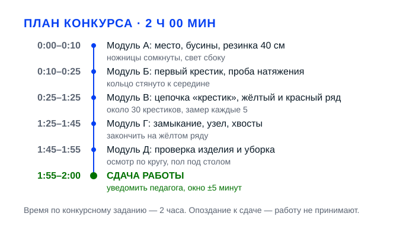
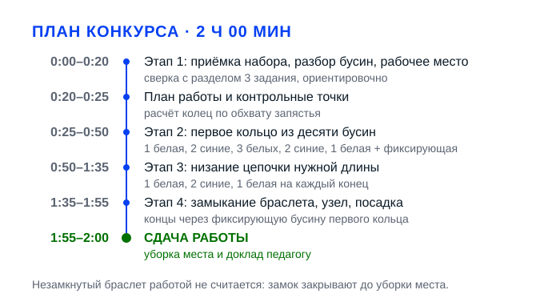
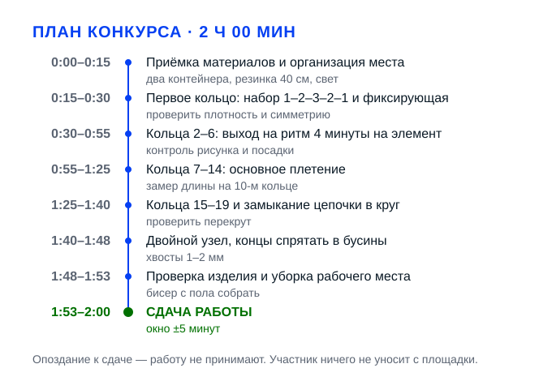

Создание изделий из бисера (ФВ)
Задания ниже — официальные файлы «Абилимпикс» (источник: abilympics-russia.ru), разложенные по категориям. Решения написаны по тексту задания, регламенту и критериям оценки; в них указано, что именно проверяет эксперт.
Школьник
14–16 лет, базовый уровень заданияВ официальном файле категории не разделены отдельными разделами — приводим задание целиком; различия по категориям смотрите в таблице модулей.
Пошаговое решение
Задание категории «Школьники» компактное по формулировке и требовательное по исполнению: нужно сплести цепочку «крестик» из бусин двух цветов и замкнуть её в браслет на резинке. Материалы простые — акриловые бусины 6 мм, эластичная резинка 0,5 мм длиной 40 см и ножницы, время — 2 часа. Вся техника держится на одном движении: оба конца резинки проходят навстречу друг другу через общую бусину, и она замыкает элемент без узла. Дальше это движение повторяется около тридцати раз, и на нём же построена сборка: браслет замыкается через самую первую бусину, а концы прячутся внутрь соседних. Поэтому решают не скорость, а три вещи: ровное натяжение с первого крестика, дисциплина чередования цветов и контроль длины по остатку резинки. Ниже — весь путь по шагам, от расстановки контейнеров до доклада педагогу об окончании работы, с признаками, по которым видно, что шаг получился.

Задача 1. Организовать рабочее место и разложить материалыМодуль А · подготовка, первые 10 минут из 2 часов
По конкурсному заданию первым пунктом идёт организация рабочего места, и это не формальность: на столе 1000×600 мм должно уместиться всё, к чему вы будете тянуться двести раз за смену, и ни одна бусина не должна укатиться на пол. Крупные акриловые бусины 6 мм прощают многое, но не прощают тесноты и плохого света: при освещении ниже 300 люкс отверстие в бусине перестаёт читаться, и вы начинаете продевать резинку наугад. За эти десять минут вы раскладываете два цвета бусин по отдельным контейнерам, готовите резинку 0,5 мм длиной 40 см и ставите ножницы так, чтобы за ними не приходилось тянуться через всю работу.
Действие 1.1. Осмотреть место и поставить его под себя
Шаг 1.1.1
Подходим к своему столу и сначала просто осматриваем его: столешница 1000×600 мм должна быть пустой, сухой и без крошек, стул стоит так, чтобы колени свободно уходили под стол, а проход между рабочими местами оставался не меньше 1,5 м. Садимся и проверяем высоту: при столе 750 мм предплечья должны лежать на столешнице почти горизонтально, а локти — быть чуть ниже её уровня. Если вы работаете в кресле-коляске, подъезжайте к столу вплотную, чтобы грудь была в 5–10 см от кромки, и только после этого расставляйте материалы.
Организация рабочего места вынесена в задании отдельным пунктом и оценивается до того, как вы возьмёте первую бусину. Слишком высокий стол заставляет поднимать плечи, через 20 минут появляется дрожь в пальцах, и мелкая работа начинает рассыпаться; слишком низкий — заставляет сутулиться, а глаза приближаются к бусинам, хотя им и без того тяжело. Ровная посадка — это не про удобство, а про то, что руки должны быть устойчивы все два часа.
Проверьте три вещи по очереди: ладони лежат на столе без напряжения, стопы полностью стоят на полу (или подножка отрегулирована), между корпусом и кромкой стола остаётся кулак. Покачайтесь вперёд-назад: если приходится цепляться за стол, чтобы не упасть, стул стоит неправильно и его надо переставить до начала работы.
Частая ошибка — сразу сесть и начать раскладывать бусины, не поправив стул: потом, когда руки заняты натянутой резинкой, пересаживаться уже неудобно и не хочется, и вы проведёте два часа в позе, из которой мелкая моторика работает хуже всего. Вторая — оставить проход загромождённым сумкой: это нарушение требований к площадке.
Эксперт обходит площадку в первые минуты и смотрит именно на это: свободен ли проход, на своём ли месте стул, нет ли на столе лишних предметов. Дальше он возвращается к вашему столу ещё несколько раз и отмечает, остаётся ли порядок по ходу плетения.
Шаг 1.1.2
Раскладываем рабочие зоны слева направо, по ходу руки: слева — контейнеры с бусинами, в центре — подложка, на которой вы выкладываете бусины перед набором, справа — ножницы сомкнутыми лезвиями и готовое изделие. Подложку берите ворсистую, фетровую или бархатную: на гладком пластике круглая бусина 6 мм катится от малейшего движения, а на ворсе стоит на месте. Контейнеры ставьте так, чтобы крышка каждого открывалась в свою сторону и не перекрывала соседний: диаметр 4,6 см и высота 1,8 см дают устойчивую баночку, которую трудно опрокинуть локтем.
Зоны нужны не для красоты: в этой технике вы сто раз за работу меняете действие — взяли бусину, продели резинку, подтянули, отложили. Если всё лежит в одной куче, каждое движение превращается в поиск, а поиск — это потерянные секунды и сбитый ритм. В задании прямо сказано, что материалы хранятся в специальных ёмкостях, а рассыпанный бисер надо немедленно собирать, чтобы не травмироваться: разложенные зоны снижают вероятность рассыпать сразу всё.
Посмотрите на стол со стороны: два контейнера стоят раздельно и не касаются друг друга, подложка занимает центр и остаётся свободной, ножницы лежат лезвиями от вас. Проверьте рукой: дотягиваетесь до каждой зоны, не вставая и не наклоняясь корпусом — только рукой.
Ошибка новичка — поставить контейнеры вплотную к подложке: одно неловкое движение локтем, и баночка с 125 бусинами летит на пол. Вторая ошибка — держать ножницы открытыми и лезвиями к себе, «чтобы удобнее было резать»: по правилам безопасности они лежат сомкнутыми, и передают их только кольцами вперёд.
Эксперт смотрит на расположение зон и на положение ножниц в самом начале. Открытые лезвия, направленные в сторону участника, — это отдельное замечание по охране труда, и оно фиксируется сразу, а не в конце.
Шаг 1.1.3
Проверяем свет. Если на столе стоит лампа, включаем её и направляем так, чтобы свет падал на подложку сбоку-сверху, а не прямо в глаза и не за вашу спину. Освещённость рабочей поверхности должна быть не менее 300 люкс — на практике это значит, что вы видите отверстие в бусине 6 мм как чёткий тёмный кружок, а не как размытое пятно, и на подложке нет вашей собственной тени от руки. Если лампа одна, поставьте её слева, если вы правша, и справа, если левша.
Тень от руки — главный враг этой работы: именно в момент, когда вы подносите бусину к концу резинки, кисть закрывает то место, куда надо попасть. Боковой свет убирает тень из зоны продевания и заодно подсвечивает отверстие изнутри, поэтому попадание с первой попытки становится нормой, а не удачей. При недостатке света участник начинает щуриться и приближать лицо к столу, а через полчаса глаза устают настолько, что ошибки идут подряд.
Положите на подложку одну бусину и посмотрите на неё: отверстие видно как ровный кружок, блик не бьёт в глаза, тень от вашей руки не накрывает бусину, когда рука в рабочем положении. Если приходится наклоняться ближе 25–30 см, света мало — включайте лампу, а не приближайте глаза.
Типичная ошибка — поставить лампу за спину: стол кажется освещённым, но ваша же тень падает точно на подложку. Вторая — направить лампу в лицо, чтобы «всё было видно»: через десять минут появляется резь в глазах, и работать становится тяжелее, чем без лампы.
Эксперт оценивает, умеет ли участник пользоваться оборудованием своего места, и отдельно отмечает, включена ли лампа и куда она направлена. Это же видно на фото фиксации этапов.
Действие 1.2. Разложить бусины по цветам и проверить качество
Шаг 1.2.1
Открываем пакеты и пересыпаем бусины в два контейнера: красные — в один, молочно-жёлтые — в другой. Не смешивайте цвета в одной баночке даже временно: по заданию цепочка плетётся из двух цветов, и вся схема держится на том, что вы берёте нужный цвет не глядя. Пересыпайте над подложкой, а не над полом, и не вытряхивайте пакет целиком — поддевайте бусины пальцами или пересыпайте через край ладони, чтобы не рассыпать полсотни штук одним движением.
По перечню материалов на участника даётся по 15 г бусин 6 мм, это примерно 125 штук каждого цвета. Такого запаса с избытком хватает на браслет обхватом 17–18 см, где уходит около 90 бусин, но только если вы не теряете их по одной на каждом шаге. Раздельные контейнеры — это ещё и страховка по безопасности: рассыпанные бусины скользят под ногами, и их приходится собирать, теряя конкурсное время.
В каждом контейнере бусины одного цвета и одного диаметра, крышка закрывается, на столе нет одиночных бусин вне подложки. Проверьте рукой дно контейнера: если бусины лежат в один слой и не закрывают друг друга, вам будет видно, что запас ещё есть.
Самая частая ошибка — высыпать оба цвета в одну баночку «пока не разберусь»: потом приходится выбирать красную из жёлтых на ощупь, и на это уходит времени больше, чем на весь первый крестик. Вторая ошибка — открыть пакет зубами или поднести его ко рту, чтобы легче было высыпать: это прямое нарушение правил безопасности.
Эксперт проверяет, разложены ли материалы по ёмкостям, как требует инструкция по охране труда. Отдельно фиксируется, не берёт ли участник бисер в рот и не держит ли пакет зубами — за это замечание следует немедленно.
Шаг 1.2.2
Перебираем бусины и убираем брак: сколотые, с заусенцем у отверстия, слипшиеся, с перекошенным каналом. Бусину берём двумя пальцами и поворачиваем на свету — у качественной акриловой бусины 6 мм поверхность ровная, без белых потёртостей, а отверстие примерно 1,5–2 мм, то есть резинка 0,5 мм проходит свободно, но бусина на ней не болтается. Отдельно отложите бусины, у которых отверстие забито акриловой стружкой: их можно прочистить, но проще заменить, запас есть.
Брак в этой технике виден не сразу, а через ряд: скол у отверстия перерезает резинку изнутри, как нож, и браслет рвётся именно в самом натянутом месте — обычно там, где вы замкнули кольцо. Заусенец мешает бусине сесть вплотную, крестик получается рыхлым, и вся цепочка идёт волной. Проверка занимает три-четыре минуты, а переделка порванного браслета в конце второго часа — это уже не успеть.
Отобранные бусины лежат отдельной маленькой кучкой на краю подложки, а не возвращены в контейнер. Проверьте десяток бусин подряд на ощупь: пальцем не цепляется ни за один край, поверхность гладкая, бусина скатывается по подложке ровно, без рывка.
Ошибка — считать, что «в упаковке всё нормальное»: акриловые бусины при фасовке бьются друг о друга, и 3–5 штук из 125 обычно с изъяном. Вторая ошибка — выбрасывать бусины с забитым отверстием, не попробовав прочистить: их видно сразу, и замена не нужна.
Эксперт смотрит на отобранный брак и на то, как участник держит бусины — двумя пальцами или горстью. Работа с отдельными бусинами показывает уровень владения материалом.
Шаг 1.2.3
Выкладываем бусины на подложку небольшими дорожками: слева красные, справа жёлтые, по 10–12 штук в дорожке, на расстоянии 2–3 см от края. Не выкладывайте сразу весь запас: на подложке должно оставаться свободное поле размером хотя бы 15×15 см, потому что именно туда вы будете укладывать растущую цепочку. Дорожки нужны для счёта: беря бусину из ряда, вы видите, сколько уже израсходовано, и не сбиваетесь с чередования цветов.
Цепочка «крестик» плетётся по строгому чередованию: жёлтый ряд, красный ряд, жёлтый, красный. Сбиться легче всего тогда, когда бусины лежат кучей и цвет выбирают по ходу движения. Дорожки превращают выбор в движение руки в знакомую сторону, и глаза освобождаются для главного — попадания резинкой в отверстие. Плюс свободное поле: готовая часть цепочки не должна лежать на бусинах, иначе при подтягивании она цепляет соседние и рассыпает их.
На подложке два раздельных ряда по цвету, каждый не длиннее 12 бусин, свободное поле для цепочки не меньше 15×15 см, и ни одна бусина не лежит ближе 2 см к краю стола. Проверьте, легко ли вы берёте бусину не глядя: если приходится шарить рукой — дорожки стоят неудобно.
Ошибка — насыпать бусины горкой: верхние скатываются при каждом касании, и через десять минут половина лежит на столе вперемешку. Вторая ошибка — выложить бусины по всему столу, оставив цепочке узкую полоску: готовая часть начинает свисать с края и тянуть за собой работу.
Эксперт оценивает порядок на столе как часть организации рабочего места: видно ли, где какой цвет, и остаётся ли место для изделия. Отдельно он смотрит, не приходится ли участнику искать бусины на ощупь.
Действие 1.3. Подготовить резинку и ножницы
Шаг 1.3.1
Берём эластичную резинку для браслетов толщиной 0,5 мм и отмеряем 40 см — именно такую длину задаёт конкурсное задание. Отмеряем по линейке или по краю стола, не «на глаз»: 40 см дают запас примерно в две длины готового браслета плюс 5–6 см на хвосты, которые потом уйдут в узел. Резинку не натягиваем при измерении, а кладём свободно: растянутая при отмере она потом даст браслет короче расчётного.
В этой технике резинка проходит через каждую бусину дважды — один раз в одну сторону, один раз навстречу, поэтому расход получается примерно вдвое больше длины изделия. Браслет обхватом 17–18 см съедает около 36–38 см, и 40 см из задания — это ровно тот запас, который нужен на узел и на то, чтобы удобно держать концы в руках. Отрежете меньше — не хватит на замыкание кольца, и придётся связывать два куска, а узел посередине изделия виден.
Отмеренный отрезок лежит на столе прямой линией, концы не перекручены, длина проверена линейкой. Потяните за концы: резинка тянется равномерно, без утончений и белых полос — это признак, что материал не пересушен и не порвётся на третьем ряду.
Ошибка — отмерить «примерно сорок» и получить 32–34 см: к моменту замыкания браслета концы не дотягиваются друг до друга, и вы начинаете растягивать резинку через силу. Вторая ошибка — отрезать с большим запасом, 50–60 см: длинные хвосты путаются, и их приходится постоянно подтягивать.
Эксперт проверяет длину заготовки на этапе подготовки: 40 см по заданию — это контролируемая величина, и заметное расхождение фиксируется. Если заготовка короче, это видно уже на первом замере длины цепочки.
Шаг 1.3.2
Кладём резинку на подложку и осматриваем её по всей длине: нужны ровный цвет, отсутствие узлов, заломов и расслоений. Концы подрезаем ножницами ровно, под прямым углом, а не наискось: косой срез даёт тонкий язычок, который застревает в отверстии бусины и махрится. Оплавлять концы над огнём нельзя — спандекс от тепла плавится и превращается в твёрдую каплю, которая не проходит в отверстие 1,5 мм и царапает соседние бусины.
Ровный срез — это проходимость: резинка 0,5 мм должна входить в отверстие бусины без сопротивления, и любой лишний утолщение на конце сразу превращает набор в мучение. Отказ от оплавления — не перестраховка: у акриловых бусин отверстие узкое, а капля на конце резинки делает её непригодной. Именно поэтому в перечне материалов нет ни зажигалки, ни клея — только ножницы.
Проведите срезанным концом по тыльной стороне ладони: он не цепляет кожу и не махрится. Посмотрите на срез через свет: он ровный, без белой бахромы. Попробуйте продеть конец в первую попавшуюся бусину — он должен пройти с лёгким усилием, а не вкручиваться.
Ошибка — резать резинку тупыми ножницами: срез получается рваным, и конец махрится уже после пятой бусины. Вторая, более опасная — оплавить кончик, чтобы «не махрился»: капля не пройдёт в бусину, и вы будете срезать её заново, теряя длину.
Эксперт обращает внимание на инструмент: работают ли ножницы по назначению и нет ли попыток использовать огонь или другие приспособления, которых нет в перечне.
Шаг 1.3.3
Проверяем ножницы перед работой: лезвия смыкаются полностью, ход не заедает, винт не выкручен, на лезвиях нет засохшего клея или акриловой стружки. Кладём их справа от подложки, лезвиями от себя, кольцами к руке. Режем только резинку и держим ножницы в одной руке, а резинку — в другой, отводя её в сторону от бусин, чтобы при отрезании обрезок не улетел в контейнер.
Правила безопасности на площадке простые и проверяются буквально: ножницы лежат сомкнутыми, передаются кольцами вперёд, во время работы используются строго по назначению. За этим следят не из вредности — за столом сидят участники с разными нозологиями, и открытые лезвия на краю стола рядом с чужой рукой это реальный риск. Кроме того, тупые или разболтанные ножницы рвут резинку, а не режут.
Проверьте ножницы на обрезке: одно уверенное движение — и резинка разделена, концы не разлохмачены. Лезвия сходятся по всей длине, без зазора у кончиков. Ножницы лежат на своём месте и не мешают движению правой руки к подложке.
Ошибка — работать ножницами, которые «еле режут», потому что менять некогда: каждый срез требует двух-трёх движений, резинка на концах мохрится. Вторая ошибка — оставить ножницы открытыми на подложке между бусинами: при подтягивании резинки рука идёт вниз и натыкается на лезвие.
Эксперт смотрит на соблюдение правил охраны труда в течение всей работы, а не только на входе: положение ножниц на столе фиксируется в любой момент конкурса.
Задача 2. Сделать первый крестик и замкнуть его в кольцоМодуль Б · первый элемент, 10–25-я минута
Первый крестик — это проба всей техники: если он сел плотно, ровно и оба конца резинки выходят из одной бусины в разные стороны, дальше цепочка пойдёт сама. По описанию задания вы набираете четыре красных бусины на один конец, продеваете второй конец навстречу через последнюю бусину и стягиваете всё к середине резинки. На этот элемент уходит 4 бусины и примерно две минуты, но именно здесь закладывается натяжение, которое определит, будет браслет упругим или рыхлым.
Действие 2.1. Найти середину резинки и набрать первые четыре бусины
Шаг 2.1.1
Берём резинку за оба конца, сводим их вместе и перегибом находим середину — ту точку, где концы сходятся ровно, без перекоса. Отмечаем её большим пальцем левой руки и удерживаем: узел не вяжем, метку не ставим, потому что любой узел на этом месте потом окажется внутри первой бусины и не даст крестику сесть плотно. Длина от метки до каждого конца должна быть одинаковой — 20 см и 20 см при общей длине 40 см.
Середина — это точка отсчёта всей работы: от неё вы плетёте в одну сторону и потом замыкаете браслет, возвращаясь к первой бусине. Если середина найдена с перекосом, один хвост окажется короче другого, и при закреплении вам не хватит длины именно на узел. Смещение на 2–3 см кажется мелочью, но на финальном шаге, где нужно продеть конец через две бусины и связать, эти сантиметры решают.
Сложите резинку пополам и проверьте: оба конца приходят к метке одновременно, кончики ровно на одном уровне. Отпустите один конец — метка остаётся на месте, а не съезжает. Длина каждой половины около 20 см, разница не больше 5 мм.
Ошибка — завязать на середине узелок «чтобы не потерять»: узел потом попадает внутрь бусины, крестик не садится, и приходится перебирать весь первый ряд. Вторая ошибка — искать середину после того, как набрали бусины: считать уже нечего, и хвосты выходят разной длины.
Эксперт смотрит, как участник обращается с материалом на первых движениях: ищет середину осознанно или начинает набирать с конца, не думая о симметрии.
Шаг 2.1.2
Надеваем на один конец резинки четыре красные бусины подряд, подталкивая каждую пальцем до упора к предыдущей. Работаем тем концом, который вам удобнее, — правым, если вы правша: так правая рука держит резинку, а левая подаёт бусины из дорожки. Бусины идут вплотную друг к другу, но пока не стянуты: это заготовка первого крестика, и она должна лежать на резинке свободно, чтобы вы могли продеть второй конец.
Четыре бусины — это ровно то число, которое задаёт описание: три бусины составят сторону крестика, а четвёртая станет той, через которую пройдут оба конца навстречу. Набирать сразу больше нельзя: пока крестик не замкнут, лишние бусины мешают видеть, какая из них замыкающая, и вы продеваете резинку не туда. Набранные вплотную бусины 6 мм дают отрезок около 24 мм — это и есть ширина первого элемента.
На резинке ровно четыре бусины, они стоят вплотную, без промежутков, и все одного цвета и диаметра. Между первой бусиной и меткой середины остаётся свободный участок резинки — он нужен, чтобы потом подтянуть весь крестик к середине одним движением.
Ошибка — набрать три или пять бусин, потому что «на глаз не видно»: с тремя крестик не замкнётся в кольцо, с пятью получится другой элемент, и цепочка пойдёт не по схеме. Вторая ошибка — натягивать бусины на резинку с силой, растягивая её: после снятия натяжения бусины сойдутся, и крестик выйдет перекошенным.
Эксперт проверяет соответствие работы описанию: сколько бусин набрано и в каком порядке. Отклонение от схемы на первом элементе видно сразу и переносится на всю оценку техники.
Шаг 2.1.3
Берём второй, свободный конец резинки и продеваем его навстречу первому через последнюю, четвёртую бусину — ту, что дальше всех от середины. Продеваем с той стороны, где резинка выходит из бусины, то есть конец идёт внутрь отверстия с противоположной стороны, а не рядом с первым концом. Вводим 1–1,5 см резинки, захватываем пальцами с другой стороны бусины и вытягиваем на 3–4 см, чтобы было за что держать.
Встречное продевание через одну бусину — это и есть замок техники: два конца, проходящие через общую бусину в противоположных направлениях, фиксируют кольцо без всякого узла. Если продеть оба конца в одну сторону, бусины просто съедут с резинки, и кольца не получится. Именно на этом движении держится вся цепочка, и дальше вы будете повторять его тридцать раз.
Оба конца выходят из четвёртой бусины в разные стороны, натяните их слегка — четыре бусины собираются в замкнутое кольцо и не рассыпаются, если отпустить. Проверьте направление: концы не трутся друг о друга внутри отверстия, каждый идёт в свою сторону.
Самая частая ошибка — продеть второй конец через третью бусину вместо четвёртой: кольцо получается из трёх бусин и сразу разваливается. Вторая — продеть оба конца в одном направлении, тогда резинка просто выходит из бусины с той же стороны, и заготовка распадается при первом же подтягивании.
Эксперт наблюдает за руками в момент продевания: попал ли участник в отверстие с первой попытки и понимает ли, в какую именно бусину надо продевать. Отмечается и то, понимает ли участник, почему концы идут навстречу.
Действие 2.2. Замкнуть первый крестик и выровнять натяжение
Шаг 2.2.1
Держим оба конца резинки одной рукой, а второй рукой перемещаем четыре бусины к середине — ровно так, как сказано в описании. Тянем не за один конец, а за оба одновременно и с одинаковым усилием: тогда кольцо едет по резинке целиком, не перекашиваясь. Доводим до метки середины так, чтобы свободные хвосты слева и справа остались равными, примерно по 18–19 см каждый.
Подтягивание к середине нужно, чтобы у вас был запас резинки с обеих сторон: плести вы будете в одну сторону, но при замыкании браслета понадобятся оба конца, и один из них должен дотянуться до первой бусины. Если сразу оставить всю длину с одной стороны, второй конец окажется короче изделия и замкнуть кольцо будет нечем.
Бусины стоят вокруг метки середины, хвосты одинаковой длины, разница не больше сантиметра. Возьмите оба конца в кулак и слегка разведите руки: кольцо остаётся на месте, не сползает в сторону. Свободный конец при этом должен проходить в отверстие без усилия.
Ошибка — тянуть за один конец: кольцо уезжает к другому концу, и вся длина собирается с одной стороны. Вторая ошибка — подтянуть бусины не до середины, а «поближе к концу, чтобы удобнее держать»: при замыкании браслета резинки не хватит.
Эксперт оценивает, следует ли участник описанию буквально: в задании этот шаг прописан отдельным пунктом, и его выполнение видно по положению бусин на резинке.
Шаг 2.2.2
Расправляем четыре бусины в правильную фигуру: две бусины сверху, две снизу, и все четыре образуют квадрат, а не цепочку и не восьмёрку. Пальцами разводим их в стороны, чтобы каждая бусина легла в свою вершину, а резинка прошла по внутреннему контуру. Затем подтягиваем оба конца по очереди мелкими движениями по 2–3 мм, пока кольцо не станет плотным.
Крестик — это не «четыре бусины на резинке», а квадрат, в котором резинка натянута по периметру. Только в расправленном виде видно, ровно ли легли бусины и не перекрутилась ли резинка внутри отверстий. Если этого не сделать сейчас, дальше каждый следующий ряд будет наследовать перекос, и к середине цепочки браслет поведёт в сторону.
Все четыре бусины видны целиком, между ними нет зазоров, резинка не выглядывает петлёй наружу. Положите крестик на подложку и посмотрите сверху: он лежит плоско, не «домиком», все бусины касаются подложки.
Ошибка — оставить бусины в линию и начать следующий ряд: тогда второй крестик встанет не поперёк, а вдоль, и цепочка превратится в шнур. Вторая ошибка — подтягивать только один конец, из-за чего квадрат перекашивается в ромб.
Эксперт смотрит на геометрию первого элемента: ровный квадрат из четырёх бусин 6 мм — это видимый признак, что техника понята. По нему он судит, стоит ли дальше следить за руками или уже можно оценивать результат.
Шаг 2.2.3
Проверяем натяжение: кольцо должно быть плотным, бусины не должны болтаться и прокручиваться, но резинка не должна быть натянута как тетива. Правильное натяжение — когда крестик держит форму сам, а при сжатии пальцами бусины сходятся на 1 мм и возвращаются обратно. Если резинка просвечивает между бусинами дугой, натяжение слабое; если бусины врезаются друг в друга и кольцо не сжимается — перетянуто.
Натяжение определяет весь браслет: слабое даёт рыхлое изделие, которое растягивается на руке и теряет форму после двух надеваний, а перетянутое рвёт резинку именно в месте встречного продевания, где она испытывает двойную нагрузку. Кроме того, при перетяжке бусины не ложатся ровно, и цепочка идёт волной — это видно на готовом изделии, и это уже вопрос качества.
Сожмите крестик двумя пальцами и отпустите: он возвращается к квадрату. Потяните кольцо в стороны на 3–4 мм — оно пружинит и возвращается. Резинка между бусинами не видна на просвет. Если кольцо сжимается больше чем на 2 мм, натяжение слабое.
Ошибка — тянуть резинку «потуже, чтобы держалось»: первый крестик выдержит, а на двадцатом ряду резинка лопнет у самого натянутого места. Вторая ошибка — оставить слабое натяжение, потому что «потом подтяну»: подтягивать отдельный элемент в готовой цепочке уже невозможно.
Эксперт проверяет натяжение пальцами на готовом изделии и по ходу работы: ровное ли полотно и не просвечивает ли резинка между бусинами. Он делает это дважды: по ходу работы и на сдаче готового изделия.
Шаг 2.2.4
Выравниваем хвосты: берём оба конца и подтягиваем так, чтобы от кольца до каждого кончика осталось одинаковое расстояние. Свободные концы не скручиваем и не наматываем на палец — они должны лежать свободно, иначе при следующем продевании вы будете распутывать узел вместо того, чтобы плести. Концы лучше держать между большим и указательным пальцем левой руки, а правой работать.
Симметричные хвосты — это страховка на финальном шаге: замыкать браслет вы будете обоими концами сразу, продевая их через первую бусину, и если один хвост короче другого на 5 см, вам не хватит именно его. Кроме того, при плетении вы тянете попеременно то один, то другой конец, и равная длина позволяет делать это одинаковым усилием.
Расстояние от кольца до кончиков одинаковое, разница в пределах 1 см. Концы не перекрещены и не перекручены: если положить их рядом, они идут параллельно. Потяните за каждый — кольцо смещается в противоположную сторону, что подтверждает симметрию.
Ошибка — держать один конец в зубах или прижимать его локтем: и то и другое запрещено правилами и, кроме того, тянет работу в сторону. Вторая ошибка — скрутить длинный хвост в жгут «чтобы не мешал»: в жгуте резинка заламывается, и в этом месте она потом рвётся.
Эксперт обращает внимание на положение рук и на то, как участник удерживает рабочие концы: свободные, не перекрученные хвосты — признак уверенной работы.
Действие 2.3. Выполнить первый жёлтый ряд по пункту 4 описания
Шаг 2.3.1
Надеваем на каждый конец резинки по одной жёлтой бусине — всего две. Следим, чтобы обе бусины были одного цвета и одного диаметра 6 мм и сели до упора к предыдущему кольцу, но не затянулись в него. Если вы правша, удобно сначала надеть бусину на правый конец, затем на левый, всё время удерживая кольцо большим пальцем левой руки, чтобы оно не уехало.
Это первый шаг пункта 4 описания, и он задаёт чередование цветов: жёлтые бусины встают по бокам будущего крестика, а красная замкнёт его снизу. Если перепутать цвет на этом шаге, весь ряд выйдет не по схеме, и это будет видно на готовом браслете как сбой ритма. Кроме того, две бусины на разных концах — это будущие боковые вершины крестика, поэтому они должны быть одинаковыми.
На каждом конце по одной жёлтой бусине, обе придвинуты к кольцу, кольцо не деформировано. Цвет виден отчётливо: жёлтые (молочно-белые) бусины не спутаны с красными. Концы резинки по-прежнему одинаковой длины.
Ошибка — надеть две бусины на один конец: тогда крестик не соберётся, а на втором конце нечего будет продевать. Вторая ошибка — взять жёлтую бусину другого диаметра, попавшуюся из другой партии: крестик выйдет асимметричным, и это заметно на общем полотне.
Эксперт проверяет чередование цветов по ходу работы, а не только в конце: схема из двух цветов — обязательная часть задания. Один неверный цвет в ряду виден на готовом браслете сразу, потому что цвета контрастные.
Шаг 2.3.2
Берём третью, красную бусину и продеваем через неё оба конца резинки навстречу друг другу: правый конец входит в отверстие с одной стороны, левый — с другой. Захватываем каждый конец с противоположной стороны бусины и вытягиваем на 3–4 см. Красная бусина оказывается между жёлтыми и замыкает крестик снизу — именно так, как описано в пункте 4: сначала по жёлтой на каждый конец, затем оба конца навстречу через красную.
Красная бусина здесь работает замком, точно так же, как четвёртая бусина в первом крестике: она стягивает обе ветви резинки и превращает три отдельные бусины в единый элемент. Без встречного продевания жёлтые бусины просто висят на концах, и цепочка не растёт. Это ключевое движение всей техники, и его надо довести до автоматизма, потому что дальше оно повторяется в каждом ряду.
Оба конца выходят из красной бусины в разные стороны, и при подтягивании она встаёт вплотную к жёлтым, образуя квадрат: две жёлтые сверху, красная снизу, четвёртая (из первого кольца) сверху. Резинка не видна между бусинами.
Ошибка — продеть оба конца в одну сторону: тогда они выйдут с одной стороны бусины, и элемент распадётся. Вторая, очень частая — продеть концы через жёлтую бусину вместо красной: крестик не замыкается, и вы теряете ряд.
Эксперт смотрит на направление продевания: концы должны выходить из общей бусины в противоположные стороны, и это видно по тому, как лежит элемент. Если концы выходят с одной стороны, элемент развалится при первой же подтяжке.
Шаг 2.3.3
Подтягиваем оба конца по очереди, пока новый крестик не встанет вплотную к первому кольцу, и сразу расправляем его в квадрат, как делали с первым. Двигаем бусины не рывком, а мелкими подтяжками по 2–3 мм, попеременно за каждый конец: так натяжение распределяется равномерно по всей цепочке, а не остаётся в одном месте. Затем сдвигаем готовые два элемента к середине, как требует описание.
Ровно посаженный второй крестик — образец для всех остальных: дальше вы будете повторять именно это положение бусин, и глаз будет сверяться с первыми двумя элементами. Если второй крестик сел криво, вы либо будете выправлять всю цепочку в конце, либо получите волну. Подтяжка мелкими шагами важна ещё и потому, что крупный рывок растягивает резинку неравномерно, и элемент садится с перекосом.
Два крестика образуют ровную цепочку: второй встал поперёк первого, без зазора и без нахлёста. Положите работу на подложку — цепочка лежит прямой линией, не закручивается в спираль. Цветовой ритм читается: красный крестик, жёлтый ряд, красный крестик.
Ошибка — тянуть изо всех сил, чтобы «село плотнее»: второй крестик врезается в первый, бусины встают под углом, и цепочка начинает закручиваться. Вторая ошибка — не расправить элемент сразу, а отложить это «на потом»: в готовой цепочке расправить отдельный крестик уже нельзя, резинка держит соседние.
Эксперт оценивает ровность полотна нарастающим итогом: к концу работы видно, держал ли участник геометрию с самого начала. Отдельно он смотрит на зазоры: одинаковые ли они по всей сплетённой части.
Задача 3. Сплести цепочку нужной длины, чередуя жёлтые и красные рядыМодуль В · основное плетение, 25–85-я минута
Основная часть работы — это повтор: жёлтый ряд по пункту 4, красный ряд по пункту 5, и так до нужной длины. Здесь важно не столько умение, сколько ритм и самоконтроль: каждый ряд отнимает около полутора минут, и на браслет обхватом 17–18 см уходит примерно тридцать крестиков. Значит, весь запас времени уходит на однообразные движения, и именно на однообразии теряют баллы — сбиваются в чередовании цветов, ослабляют натяжение к концу и не замечают, что цепочка пошла волной.
Действие 3.1. Выполнить красный ряд по пункту 5 описания
Шаг 3.1.1
Надеваем на каждый конец резинки по одной красной бусине — две штуки, симметрично, как делали с жёлтыми. Придвигаем их к последнему крестику, но не втягиваем внутрь кольца. Держим цепочку левой рукой у самого последнего элемента, чтобы она не провисала и бусины не съезжали обратно по резинке, пока правая рука занята набором. Вторую бусину удобно придерживать мизинцем, чтобы она не откатилась.
Пункт 5 описания начинается именно с этого: две красные бусины по краям, третья станет замыкающей. Цвет здесь принципиален — после жёлтого ряда идёт красный, и если вы по инерции возьмёте жёлтую, ритм собьётся. Симметрия тоже важна: боковые бусины крестика должны быть одинаковыми по диаметру, иначе элемент перекосится и потянет за собой следующий.
На каждом конце по одной красной бусине, обе придвинуты к предыдущему элементу, хвосты остаются одинаковой длины. Посмотрите на цепочку сверху: последний ряд выглядит как две бусины по бокам, между ними пока пусто — это место для замыкающей.
Ошибка — набрать бусины на один конец, перепутав, где какой: тогда замыкать будет нечем, и ряд придётся распускать. Вторая — взять бусину с заусенцем: на красном цвете брак почти не виден, а резинку он перерезает так же, как на любом другом.
Эксперт проверяет, идёт ли работа строго по описанию: набор бусин на два конца — это пункт 5, и его выполнение видно по положению бусин. По нему видно, насколько участник усвоил схему из описания.
Шаг 3.1.2
Берём третью красную бусину и продеваем через неё оба конца навстречу друг другу, точно так же, как замыкали жёлтый ряд: правый конец с одной стороны, левый — с другой, каждый вытягиваем на 3–4 см. Бусина встаёт между двумя только что набранными и замыкает крестик — по описанию это «продеть оба конца резинки навстречу друг другу через ещё одну красную бусину».
Замыкающая бусина — единственное место, где резинка испытывает двойную нагрузку: внутри неё идут два конца в противоположных направлениях. Поэтому продевать надо ровно, не перекрещивая концы внутри отверстия, иначе они трутся друг о друга и перетираются быстрее всего именно здесь. Кроме того, от направления продевания зависит, встанет ли крестик поперёк цепочки или вдоль неё.
Оба конца выходят из замыкающей бусины в разные стороны, и при подтягивании она садится вплотную к боковым, образуя третий крестик цепочки. Резинка между бусинами не просвечивает, элемент держит форму без поддержки пальцем.
Ошибка — продеть концы в одну сторону: они выйдут с одной стороны бусины, и ряд не замкнётся. Вторая — продеть через боковую бусину вместо свободной третьей: крестик получится перекошенным, а натяжение уйдёт в одну сторону.
Эксперт смотрит на технику встречного продевания в динамике: это основное техническое действие задания, и оно повторяется в каждом ряду. Ошибку в направлении продевания он замечает по тому, как лежит элемент на подложке.
Шаг 3.1.3
Подтягиваем оба конца попеременно, мелкими шагами по 2–3 мм, пока новый крестик не сядет вплотную к предыдущему. Затем сдвигаем всю цепочку вниз по резинке — по описанию «переместить все бусины вниз», — чтобы у вас перед руками снова оказался свободный участок резинки длиной 8–10 см. Этот свободный участок нужен для следующего продевания, без него вы будете работать в упор.
Подтяжка сдвигом вниз — это способ держать рабочую зону под руками: цепочка растёт, и если её не сдвигать, концы резинки укорачиваются, а рабочее расстояние сокращается. Плотная посадка каждого элемента обеспечивает то, что браслет не растянется на руке: рыхлая цепочка при надевании вытягивается на 1–2 см и начинает болтаться.
Элемент сидит вплотную, зазоров между бусинами нет, но и врезания нет. Перед руками свободный участок резинки не меньше 8 см с каждой стороны. Цепочка лежит прямо, без закручивания в спираль. Проверять это удобнее всего, положив цепочку на тёмную подложку.
Ошибка — не сдвигать цепочку: через пять рядов работать придётся на кончиках резинки, и каждое продевание будет отнимать вдвое больше времени. Вторая — подтягивать рывком за один конец, отчего элемент встаёт с перекосом.
Эксперт оценивает плотность полотна: одинаковые ли зазоры между элементами по всей длине, нет ли участков, где бусины «поплыли». Особенно его интересует середина цепочки: там натяжение чаще всего проседает.
Шаг 3.1.4
Отводим взгляд на цепочку целиком и проверяем цветовой ритм: после первого красного кольца идут жёлтый ряд, красный ряд, снова жёлтый, снова красный. Считать удобно по замыкающим бусинам: каждая замыкающая — это один крестик, и цвета замыкающих чередуются. Если сбились, распускайте не всю цепочку, а только последний ряд: вытяните конец из замыкающей бусины, снимите три бусины и наберите заново.
Чередование двух цветов — прямое требование задания, и его проверяют на готовом изделии. Сбой в ритме виден сразу, потому что цвета контрастные, и один неправильный ряд бросается в глаза сильнее, чем любая неровность натяжения. Локальное исправление последнего ряда занимает полминуты, а перебор всей цепочки после обнаружения ошибки в конце — это потеря десяти минут из двух часов.
Пройдите цепочку глазами от первого кольца до последнего элемента: жёлтые бусины образуют ровные парные ряды, красные — тройные. На каждом крестике ровно одна замыкающая бусина. Считать вслух по номерам рядов — самый надёжный способ не сбиться.
Ошибка — заметить сбой и решить «оставить, никто не заметит»: эксперт смотрит именно на соответствие описанию, и контрастный сбой цвета фиксируется сразу. Вторая ошибка — распускать всю работу из-за одного ряда и терять на этом пятнадцать минут.
Эксперт проверяет цветовое решение как отдельный критерий качества изделия: два цвета, ровное чередование, без перекосов в одну сторону. Сбой цвета отмечается и в том случае, если изделие в остальном сделано аккуратно.
Действие 3.2. Держать ритм, натяжение и рабочую позу
Шаг 3.2.1
Работаем в ровном темпе: один крестик — примерно полторы минуты, то есть набор двух бусин, встречное продевание, подтяжка и сдвиг. Не старайтесь ускориться за счёт силы — ускоряться надо за счёт отсутствия лишних движений: бусины берём из дорожки не глядя, резинку держим всё время в левой руке, а правой делаем одно и то же движение. Через пять-шесть рядов руки сами находят положение, и темп вырастает без усилий.
Равномерный темп важнее рывков: при спешке первые ряды делаются за минуту, а к середине цепочки натяжение ослабевает, потому что рука устала тянуть, и полотно получается неравномерным — плотное в начале, рыхлое в конце. Это заметно на готовом браслете и оценивается как неоднородность работы. Кроме того, ровный темп позволяет контролировать время: тридцать крестиков по полторы минуты — это сорок пять минут из двух часов.
Через десять минут работы проверьте себя: элементы одинаковой плотности на всём протяжении, длина цепочки растёт равномерно, руки не устали настолько, чтобы дрожать. Если к этому моменту вы сделали меньше шести крестиков — темп слишком медленный, надо убрать лишние движения.
Ошибка — гнать в начале и выдохнуться к середине: к двадцатому ряду пальцы устают, подтяжка становится слабее, и полотно идёт волной. Вторая ошибка — останавливаться после каждого ряда, чтобы посмотреть на результат: это сбивает ритм и съедает время.
Эксперт оценивает не скорость, а стабильность: одинаково ли выглядит работа в начале, в середине и в конце, и успевает ли участник в отведённые два часа.
Шаг 3.2.2
Следим за натяжением на каждом элементе, а не только на первом: после подтяжки проверяйте пальцем, не болтается ли крестик. Правило простое — новый элемент должен садиться вплотную к предыдущему с тем же усилием, что и раньше. Если чувствуете, что тянете легче, чем в начале, значит, натяжение упало: подтяните ещё раз, а не оставляйте «как получилось».
Резинка имеет свойство растягиваться под нагрузкой: за тридцать подтяжек она удлиняется на несколько процентов, и если не компенсировать это подтяжкой, к концу цепочки элементы встанут заметно свободнее, чем в начале. На готовом браслете это выглядит как «провисший» участок и читается как небрежность. Ровное натяжение — это и есть то, что отличает аккуратное изделие от ученического.
Приложите цепочку к линейке и посмотрите на просвет: зазоры между крестиками одинаковые по всей длине. Сожмите цепочку вдоль — она пружинит равномерно, без участков, которые проминаются легче других. Это самый быстрый способ увидеть неравномерность натяжения.
Ошибка — подтягивать только замыкающую бусину, не подтягивая боковые: элемент садится перекошенным, один бок выше другого. Вторая ошибка — тянуть до упора, когда резинка уже не идёт: это растягивает отверстия в бусинах и рвёт резинку.
Эксперт проверяет изделие пальцами: проводит по цепочке и чувствует, ровная ли она. Это делается и по ходу работы, и на сдаче. Он сравнивает плотность в начале и в конце цепочки, а не только в одном месте.
Шаг 3.2.3
Каждые 10–12 минут отрывайте глаза от работы на 20–30 секунд: посмотрите в дальнюю точку, поморгайте, разомните пальцы и запястья. Плечи при плетении держите опущенными, локти — на столе, а не на весу; бусину подносите к резинке, а не тянитесь к ней корпусом. Спину держите на спинке стула, а не в наклоне над подложкой. Полезно поставить рядом стакан воды и сделать в паузу два-три глотка.
Два часа мелкой работы — это серьёзная нагрузка на зрение и кисти, и на площадке за столами сидят участники с разными нозологиями, для которых перенапряжение оборачивается не усталостью, а срывом работы. Напряжённые плечи через полчаса дают дрожь в пальцах, а дрожащей рукой попасть в отверстие 1,5 мм почти невозможно. Короткие паузы возвращают точность движений, а не отнимают время.
Плечи опущены, локти лежат на столе, подбородок не прижат к груди, расстояние от глаз до работы 30–35 см. После паузы попадание резинкой в отверстие получается с первой попытки, а не с третьей. Если после паузы попадание идёт с третьей попытки, паузы надо делать чаще.
Ошибка — сидеть над работой, ссутулившись, «чтобы лучше видеть»: через сорок минут шея и глаза устают настолько, что ошибки идут одна за другой. Вторая ошибка — работать без пауз, считая, что времени и так мало.
Эксперт отмечает, как участник организует свою работу: умеет ли он распределять нагрузку и сохранять работоспособность до конца смены. Для участников с нарушениями зрения и опорно-двигательного аппарата это особенно заметно.
Действие 3.3. Контролировать длину и расход материалов
Шаг 3.3.1
Каждые пять крестиков прикладываем цепочку к линейке или к запястью и запоминаем длину. Считать крестики удобно по замыкающим бусинам, а не по рядам: один крестик — одна замыкающая. При бусинах 6 мм один крестик даёт примерно 6 мм длины, то есть пять крестиков — около 3 см. Записывать не нужно, достаточно держать в голове счёт и сверяться с линейкой на каждом пятом.
Длина — это то, из-за чего чаще всего переделывают браслет: сплетённая «на глаз» цепочка либо не сходится на запястье, либо болтается. Замер каждые пять крестиков стоит пять секунд, а спасает от переделки, на которую уйдёт полчаса. Кроме того, счёт по замыкающим бусинам заодно проверяет цветовой ритм — вы видите, на каком ряду находитесь.
На каждом пятом крестике длина известна с точностью до 2–3 мм, счёт крестиков не потерян, и вы точно знаете, сколько осталось до конца. Цепочка лежит прямо и не закручивается при измерении. Если длина пляшет на 5 мм от замера к замеру, значит, вы тянете цепочку по-разному.
Ошибка — мерить на весу, растягивая цепочку: получите длину больше реальной и остановитесь раньше времени. Вторая — не считать крестики вовсе и обнаружить в конце, что цепочка на 4 см длиннее нужного.
Эксперт смотрит, сверяется ли участник с размерами по ходу работы или плетёт наугад: осмысленный контроль длины — часть технологической грамотности. Отсутствие счёта видно по тому, как участник отвечает на вопрос о длине изделия.
Шаг 3.3.2
Следим за расходом: на браслет обхватом 17–18 см уходит около 90 бусин, то есть примерно 30 крестиков, при этом жёлтых расходуется меньше, чем красных — по схеме на каждый жёлтый ряд идёт две жёлтые бусины, а на красный — три красные. Резинки 40 см хватает ровно на такой браслет, и к моменту замыкания у вас должно остаться по 5–6 см свободных концов с каждой стороны.
Понимание расхода — это возможность вовремя остановиться: если вы видите, что резинка кончается, а цепочка ещё короткая, лучше сразу уменьшить обхват на 1–2 см, чем остаться с незамкнутым браслетом. По перечню материалов на участника выдаётся по 15 г бусин каждого цвета, около 125 штук, так что бусин хватает с запасом, а вот резинка — единственный материал, который нельзя нарастить незаметно.
Прикиньте остаток: свободные концы не короче 5 см каждый, бусин каждого цвета израсходовано не больше двух третей запаса. Если концы подошли к 3 см, а цепочка ещё не доросла до нужной длины — уменьшайте длину изделия, а не тяните дальше.
Ошибка — не думать о расходе резинки и обнаружить в конце, что концы не дотягиваются до первой бусины. Вторая — расходовать бусины одного цвета быстрее и в конце менять схему, потому что «жёлтых не осталось».
Эксперт оценивает экономность и расчётливость в работе с материалом: не осталось ли неиспользованных обрезков и не пришлось ли менять схему из-за нехватки бусин.
Шаг 3.3.3
Ориентируйтесь на простую таблицу, которую держите в голове: обхват запястья 15 см — около 24 крестиков, 16 см — 26, 17 см — 28, 18 см — 30, 19 см — 32. К обхвату прибавьте 1–1,5 см на свободное облегание и на то, что браслет надевается через кисть: кисть шире запястья на 2–3 см, и браслет должен проходить через неё, не растягиваясь до предела. Резинка даёт растяжение, поэтому точно в обхват плести не надо.
Браслет на резинке надевается через кисть, и если сплести его ровно по обхвату запястья, он будет натягиваться при каждом надевании и быстро растянется. Припуск 1–1,5 см — это запас на кисть и на естественное растяжение резинки в носке. Ошибка в счёте на два крестика — это 12 мм, то есть как раз тот припуск, из-за которого браслет сидит хорошо или плохо.
Измерьте обхват запястья сантиметровой лентой, не затягивая её, и прибавьте 1–1,5 см. Сверьте с числом крестиков по таблице. На примерке в кольце браслет должен проходить через кисть с небольшим усилием, а на запястье сидеть свободно, не оставляя следа.
Ошибка — плести строго по обхвату запястья: браслет не пройдёт через кисть и порвётся при надевании. Вторая — сделать слишком большой припуск, 3–4 см: браслет будет спадать с руки. Третий вариант — плести по памяти, вообще не измеряя запястье.
Эксперт проверяет изделие на соответствие размеру: надевается ли браслет и держится ли на руке. Это практическая часть оценки качества. Он может попросить примерить браслет, чтобы убедиться в размере.
Шаг 3.3.4
Если цепочка уже достигла нужной длины, а резинка ещё есть — не плетите дальше «для надёжности»: остановитесь и переходите к сборке. Если наоборот, длина ещё не набрана, а концы стали короче 4 см, есть два выхода: уменьшить обхват изделия на один-два крестика или, если позволяют правила, попросить у эксперта дополнительный отрезок резинки и аккуратно нарастить его в незаметном месте — но наращивание почти всегда видно, поэтому лучше скорректировать размер.
Решение о длине принимается по остатку резинки, а не по желанию: замкнуть кольцо можно только тогда, когда оба конца дотягиваются до первой бусины и ещё остаётся по 4–5 см на узел и на то, чтобы спрятать хвосты. Именно на этом рубеже чаще всего и теряют работу: цепочка сплетена, а собрать её нечем. Поэтому остаток резинки контролируют на каждом замере длины, а не в последний момент.
Перед переходом к сборке проверьте: длина соответствует обхвату плюс припуск, свободные концы не короче 4 см каждый, запас бусин не израсходован полностью. Все три условия выполнены — можно замыкать. Если хоть одно условие не выполнено, сначала решайте его, а потом замыкайте.
Ошибка — плести «пока хватает резинки», не сверяясь с размером: браслет выходит длиннее руки. Вторая — тянуть до последнего и начинать сборку с концами по 2 см, когда узел завязать уже нечем. Оба случая означают одно: длину не контролировали по остатку резинки.
Эксперт смотрит на момент перехода от плетения к сборке: вовремя ли участник остановился и хватило ли ему материалов. Отдельно он смотрит на остатки материалов: не израсходован ли запас впустую.
Задача 4. Замкнуть браслет в кольцо и закрепить резинкуМодуль Г · сборка, 85–105-я минута
Сборка — самый короткий и самый ответственный этап: по описанию вы заканчиваете плетение на жёлтом ряду без красной бусины, продеваете оба конца навстречу через красную бусину в самом начале браслета, затем проводите концы через жёлтые бусины, связываете их и прячете хвосты. Здесь видно всё, что было сделано раньше: ровная ли цепочка, одинаковой ли длины хвосты, хватает ли резинки. И здесь же совершается ошибка, которую уже нельзя исправить аккуратно, — кольцо, замкнутое с перекрутом, или узел, затянутый на виду.
Действие 4.1. Выйти на нужную длину и закончить на жёлтом ряду
Шаг 4.1.1
Измеряем обхват запястья сантиметровой лентой, не затягивая её, и прибавляем 1–1,5 см на свободное облегание, затем сверяем с длиной цепочки в разложенном виде. Учтите, что в кольце цепочка «съедает» около 1 см на изгиб, поэтому к плоской длине добавьте ещё 5–8 мм. Итоговая длина браслета в замкнутом виде должна быть на 1–1,5 см больше обхвата запястья: тогда он проходит через кисть, которая шире запястья на 2–3 см, и при этом сидит на руке свободно.
Замер перед сборкой — последняя возможность что-то исправить: пока цепочка не замкнута, можно доплести или распустить ряд, и это займёт полторы минуты. После замыкания любое изменение означает развязывание узла, а развязанный узел уже не ляжет так же аккуратно. Изгиб кольца даёт усадку, о которой забывают: сплетённая в длину 17 см цепочка в кольце даёт около 16 см по внутреннему контуру, и браслет оказывается тесен.
Длина цепочки в разложенном виде равна обхвату запястья плюс 1,5–2 см. Примерьте незамкнутую цепочку, приложив её к руке по кругу: концы должны сходиться с нахлёстом в одну бусину, не натягиваясь. Если концы не сходятся на 2 см и больше, доплетите два крестика.
Ошибка — мерить только запястье и плести точно по нему: в кольце браслет не сойдётся на 1–1,5 см, и вы обнаружите это на замыкании, когда длина уже зафиксирована. Вторая — не учитывать усадку на изгиб и получить браслет, который не проходит через кисть и рвётся при надевании.
Эксперт проверяет готовое изделие на руке участника или на манекене: размер — это первое, что оценивают при сдаче, и он виден без линейки. Отдельно отмечается, сверялся ли участник с обхватом до замыкания кольца.
Шаг 4.1.2
Заканчиваем плетение на жёлтом ряду — то есть на пункте 4, но без красной замыкающей бусины. Практически это значит: набрали по одной жёлтой бусине на каждый конец, придвинули их к последнему крестику и на этом остановились, не продевая концы через третью, замыкающую бусину. Оба конца остаются свободными и выходят из разных бусин — именно ими вы будете замыкать кольцо, продевая их через первую бусину цепочки.
Описание требует закончить именно так, и это логично с точки зрения техники: замыкание браслета происходит через красную бусину в самом начале, и она играет роль той самой замыкающей бусины, которую вы не надели. Если замкнуть жёлтый ряд третьей бусиной, концы окажутся стянутыми между собой, и продеть их через первую бусину будет нечем — они уже заняты в замкнутом элементе, и резинки на замыкание не останется.
Последний элемент — две жёлтые бусины, по одной на каждом конце, свободно сидящие на резинке. Концы выходят из них в разные стороны и имеют длину не меньше 5 см каждый. Цепочка при этом ещё не замкнута в кольцо, а её последний крестик остаётся открытым сверху.
Ошибка — поставить замыкающую красную бусину по привычке, автоматически, как делали тридцать раз до этого: концы стянуты, и замыкать браслет нечем, придётся распускать ряд. Вторая — закончить на красном ряду: цветовой ритм нарушится, и стык будет выделяться на общем полотне.
Эксперт сверяет с описанием, на каком элементе участник остановился: это прямо прописанное требование пункта 6, и его выполнение проверяется по последнему ряду цепочки.
Шаг 4.1.3
Складываем цепочку в кольцо, не замыкая, и прикладываем к руке: смотрим, как она ложится, где окажется стык и хватает ли длины. Стык лучше расположить так, чтобы он приходился на внутреннюю сторону запястья — там он меньше виден и меньше трётся о стол и одежду. Если длины не хватает или она великовата, исправляем сейчас: доплетаем один крестик или распускаем последний ряд, пока концы свободны и это делается за минуту.
Примерка в кольце до замыкания — это контроль сразу двух вещей: размера и того, как цепочка ведёт себя при изгибе. Ровно сплетённая цепочка ложится в кольцо без заломов; если она закручивается спиралью или встаёт восьмёркой, значит, где-то было перетянуто или перекошено, и увидеть это надо сейчас, а не на сдаче. Положение стыка — вопрос удобства носки, а изделие оценивают в том числе как готовый аксессуар, который можно носить.
Цепочка в кольце ложится плоско, без восьмёрки и закручивания, концы сходятся с нахлёстом в одну бусину. На руке браслет сидит свободно, не сдавливает запястье, проходит через кисть с небольшим усилием. Стык находится там, где вы планировали.
Ошибка — не примерять вовсе и замкнуть «как есть»: несоответствие размера обнаруживается на сдаче, когда исправлять уже поздно. Вторая — расположить стык на самом выступающем месте запястья, где он натирает и быстрее всего разбалтывается.
Эксперт присутствует при примерке и отмечает, сверяется ли участник с размером до замыкания кольца и понимает ли, где будет стык. Это видно по тому, прикладывает ли он работу к руке или сразу тянется завязывать узел.
Действие 4.2. Замкнуть браслет через первую бусину
Шаг 4.2.1
Находим первую красную бусину — ту самую, через которую замыкался первый крестик; она находится в начале цепочки, у метки середины резинки. Продеваем оба конца навстречу друг другу через эту бусину: правый конец входит с одной стороны, левый — с другой, точно так же, как вы делали это тридцать раз при плетении. Вытягиваем каждый конец на 4–5 см, придерживая кольцо левой рукой, чтобы оно не развернулось на подложке.
Это ключевой момент сборки, описанный в пункте 6: «оба конца резинки продеть навстречу друг другу через красную бусину в самом начале браслета». Первая бусина становится замыкающей, и кольцо оказывается замкнутым тем же способом, каким плелись все элементы, — без узла в этом месте. Если продеть концы не через первую бусину, а через соседнюю, кольцо получится с перекосом и на один элемент короче, а стык встанет не на своё место.
Оба конца выходят из первой бусины в разные стороны, кольцо замкнуто и держит форму без поддержки. Стык ровный: первая бусина встала в один ряд с последними жёлтыми, без зазора и без нахлёста. Резинка не видна на стыке.
Ошибка — продеть концы через вторую бусину, потому что первая «не видна» под соседними: кольцо получается меньше на один элемент и с изломом у стыка. Вторая — продеть оба конца в одном направлении: кольцо не замыкается вовсе, бусины расходятся, и работа распадается на цепочку.
Эксперт смотрит именно на этот шаг: замыкание через первую бусину — центральное требование пункта 6, и его выполнение видно на готовом изделии по тому, где находится стык и как он выглядит.
Шаг 4.2.2
Подтягиваем оба конца и выравниваем кольцо: бусины должны лечь в одну линию по кругу, без восьмёрки и без перекрута. Проведите пальцами по кольцу от стыка в обе стороны — резинка должна идти по внутреннему контуру ровно, а бусины стоять одинаково с обеих сторон. Подтягиваем мелкими шагами, попеременно за каждый конец, пока кольцо не станет ровным и плотным.
Перекрут — самая обидная ошибка сборки: кольцо замкнуто правильно, но половина цепочки вывернута наизнанку, и браслет ложится восьмёркой. Исправляется это только развязыванием и повторным замыканием, а на готовом изделии выглядит как грубый дефект. Выравнивание сразу после замыкания занимает полминуты, потому что резинка ещё не «уселась» и бусины можно свободно двигать по кругу.
Кольцо лежит плоско на столе: все бусины касаются поверхности, цепочка не закручивается спиралью. При взгляде сверху видно ровный круг, а не овал и не восьмёрку. Стык не выделяется по плотности от остального полотна.
Ошибка — подтянуть и сразу связать, не проверив, ровно ли легло кольцо: перекрут обнаружится только на руке, когда концы уже обрезаны. Вторая — выравнивать уже после узла, когда двигать бусины нечем, потому что резинка стянута в двух местах.
Эксперт проверяет геометрию кольца на столе и на руке: ровный круг без перекрута — это видимый критерий качества сборки, и он оценивается до всяких измерений.
Шаг 4.2.3
Проверяем, что кольцо замкнуто плотно и не расходится: возьмите браслет двумя руками за противоположные стороны и слегка потяните в стороны на 1–2 см. Кольцо должно пружинить и возвращаться, а стык — оставаться на месте. Отпустите: браслет сохраняет форму круга. Если стык разошёлся или первая бусина отошла от соседних, подтяните концы ещё раз, попеременно за каждый.
Проверка на растяжение показывает, достаточно ли натянута замыкающая бусина: именно она держит всё кольцо, и именно она чаще всего остаётся слабой, потому что подтянуть её неудобно — мешает готовая цепочка и уже собранный круг. Слабая замыкающая бусина даёт зазор на стыке, и браслет начинает расходиться при носке, а на оценку это влияет как дефект сборки, а не как мелочь.
После растяжения на 1–2 см кольцо возвращается к исходному размеру с точностью до 2–3 мм, стык не разошёлся, зазоров между первой и последней бусинами нет. Браслет можно взять за одну сторону и поднять — он держит круг, не провисая на стыке.
Ошибка — не проверить стык и оставить зазор в 1–2 мм: при первом надевании он увеличится, и кольцо разойдётся. Вторая — тянуть слишком сильно, «чтобы проверить на прочность»: резинка в замыкающей бусине растягивается, и стык остаётся слабым навсегда.
Эксперт проверяет стык пальцами: расходится ли кольцо при растяжении и есть ли зазор между первой и последней бусинами. Это одна из первых проверок при осмотре изделия.
Действие 4.3. Закрепить резинку и спрятать хвосты
Шаг 4.3.1
По пункту 7 описания проводим концы резинки через жёлтые бусины: берём каждый конец и продеваем его в ближайшую жёлтую бусину рядом со стыком, затем в следующую, проходя 2–3 бусины по ходу цепочки. Делаем это по очереди, чтобы не запутать концы: сначала один, потом другой, каждый в свою сторону от стыка. Вытягиваем по 3–4 см, чтобы удобно было держать в пальцах при завязывании.
Продевание через соседние бусины нужно для того, чтобы узел спрятался внутри изделия и не был виден снаружи. Кроме того, резинка, проходящая внутри бусин, фиксируется трением, и узел не развязывается при растяжении, даже если он затянут не идеально. Это прямо описано в пункте 7: сначала концы проходят через жёлтые бусины, и только потом один из них — через красную.
Оба конца выходят из бусин в 2–3 бусинах от стыка, натянуты и не провисают. Снаружи на стыке не видно свободной резинки: она уходит внутрь бусин. Потяните за конец — он движется с усилием, а не выскальзывает свободно, и при отпускании не уходит обратно.
Ошибка — пропустить этот шаг и сразу завязать узел на стыке: узел останется снаружи, будет виден и натрёт руку при носке. Вторая — продеть оба конца в одну и ту же бусину, отчего стык стянется в комок и первая бусина вывернется из ряда.
Эксперт осматривает стык на просвет: не видно ли узла и свободной резинки снаружи. Это признак аккуратной сборки, и он виден без инструментов — достаточно повернуть браслет к свету.
Шаг 4.3.2
Затем один из концов проводим через красную бусину — по описанию «продеть один из концов через красную бусину». Выбираем тот конец, который после прохода через жёлтые оказался ближе к красной бусине, и продеваем его через неё в направлении по цепочке. Второй конец оставляем свободным: он пойдёт в узел вместе с первым, и длина у него для этого остаётся достаточной.
Проход через красную бусину — это дополнительная фиксация: резинка делает ещё один изгиб внутри изделия, и узел оказывается зажатым между бусинами, а не висит на виду. Именно такая последовательность задана в описании, и её выполнение проверяется: сначала жёлтые, потом красная, потом узел. Нарушение порядка не ломает изделие сразу, но узел выходит наружу и стык выглядит неопрятно.
Один конец прошёл через красную бусину и выходит с её противоположной стороны, второй остался свободным. Оба конца сходятся в одной зоне у стыка, длина каждого не меньше 3 см — этого хватает на двойной узел и на то, чтобы спрятать кончики.
Ошибка — продеть через красную бусину оба конца: они сойдутся в одной точке, и узел получится слишком тугим, а стык деформируется. Вторая — пропустить красную и связать сразу после жёлтых: узел окажется ближе к поверхности и будет заметен при носке.
Эксперт сверяет последовательность с описанием: жёлтые бусины, затем красная, затем узел. Отклонение фиксируется как несоблюдение технологии, даже если внешне изделие выглядит нормально.
Шаг 4.3.3
Связываем концы друг с другом: складываем их вместе, натягиваем и завязываем двойной узел — два оборота в одну сторону, затем ещё один узел поверх, затягивая каждый до упора. Тянем за оба конца поочерёдно, чтобы узел сел плотно и не разъехался. Узел должен лечь вплотную к бусине, через которую прошёл последний конец, а не висеть петлёй в сантиметре от неё.
Двойной узел на эластичной резинке — обязательное условие: одиночный узел на спандексе расползается под нагрузкой, и браслет развязывается через несколько надеваний. Затягивать надо поочерёдно за оба конца, потому что при затяжке за один конец узел встаёт косо, один хвост остаётся длиннее, и узел хуже прячется. Плотный узел у самой бусины уходит внутрь отверстия и не мешает носить браслет.
Узел затянут, при рывке за концы не ползёт, лежит вплотную к бусине. Размер узла не больше диаметра отверстия бусины, то есть 1,5–2 мм — иначе он не спрячется. Потяните браслет в стороны: узел держит, кольцо не расходится, концы не выскальзывают.
Ошибка — завязать один узел и сразу обрезать концы: через несколько надеваний браслет развяжется, и работа развалится на руке. Вторая — затянуть узел далеко от бусины, оставив петлю: она будет видна, цепляться за одежду и выдавать спешку.
Эксперт проверяет надёжность крепления: тянет браслет и смотрит, не ползёт ли узел. Развязавшийся на сдаче браслет — это потеря всей работы, поэтому проверка делается обязательно.
Шаг 4.3.4
Обрезаем остатки резинки, оставляя 3–4 мм, и прячем кончики в отверстие ближайшей бусины — поддеваем их кончиком ножниц или втягиваем пальцем. Режем одним уверенным движением, отводя браслет в сторону от контейнеров, чтобы обрезок не улетел к бусинам. После этого ещё раз потяните браслет и проверьте, не выскочили ли кончики: если выскочили, подтяните их обратно и заправьте глубже.
Оставленные 3–4 мм — это запас, который не даёт узлу распуститься, если он чуть ослабнет при носке. Более длинные хвосты будут торчать и цепляться за одежду, а срезанные под самый узел могут дать узлу расползтись, потому что конец выскользнет из него. Спрятанные в бусину кончики не видны снаружи, и это финальный штрих аккуратной работы, который эксперт проверяет при осмотре изделия вблизи.
На браслете нет торчащих концов резинки, узел не виден, срез ровный. Проведите пальцем по стыку: ничего не цепляется. Потяните браслет на 2–3 см — узел и кончики остаются на месте, кольцо держит форму.
Ошибка — обрезать под самый узел: он расползается при первом надевании, и браслет расходится именно на стыке. Вторая — оставить хвосты по сантиметру: они торчат, цепляются за рукав и сразу выдают небрежность, хотя работа в остальном сделана хорошо.
Эксперт осматривает стык вблизи: спрятаны ли концы, ровный ли срез, не видно ли узла. Это последняя проверка качества сборки перед общей оценкой изделия.
Задача 5. Проверить изделие, убрать рабочее место и сдать работуМодуль Д · контроль и сдача, 105–120-я минута
Последние пятнадцать минут из двух часов решают, увидит ли эксперт всё, что вы сделали. По заданию работа заканчивается тремя действиями: привести рабочее место в порядок, уведомить педагога об окончании работы и предъявить изделие. Между ними — проверка браслета по всем признакам, которые оцениваются: размер, ровность полотна, чередование двух цветов, плотность натяжения, аккуратность стыка. Проверка занимает пять минут и почти всегда находит одну-две вещи, которые ещё можно поправить без переделки.
Действие 5.1. Проверить браслет по всем признакам оценки
Шаг 5.1.1
Кладём браслет на подложку и осматриваем по кругу, медленно поворачивая: все бусины целые, без сколов и трещин, ни одна не потемнела и не помутнела, отверстия не разбиты и не разболтаны. Проверяем, что нигде не видно резинки между бусинами и ни один крестик не вывернут наизнанку. Отдельно смотрим на просвет: в акриловых бусинах 6 мм трещина видна как светлая полоса, а скол у отверстия — как белая точка у края.
Внешний осмотр — это то, что эксперт делает первым, и то, что участник должен сделать раньше него. Скол или разбитое отверстие на видном месте сводит на нет впечатление от ровного полотна, а найти такую бусину и заменить её можно за две минуты, пока браслет ещё не сдан: вытянуть конец, снять бусину, поставить новую. Резинка, просвечивающая между бусинами, читается как слабое натяжение по всей работе, а не как единичный дефект.
При осмотре по кругу ни одной бусины с изъяном, резинка не видна, все крестики лежат лицевой стороной. Проведите пальцем по кольцу — поверхность ровная, без выступающих или, наоборот, утопленных бусин. Поверните браслет к свету под углом: блики на всех бусинах одинаковые.
Ошибка — посмотреть браслет только с лицевой стороны: изъян часто оказывается на внутренней, где его не видно при беглом взгляде. Вторая — не заметить просвечивающую резинку, потому что смотришь на изделие на весу, а не на подложке, где дефект читается сразу.
Эксперт осматривает изделие именно так — по кругу, на свету, с двух сторон. Всё, что он найдёт, вы могли найти сами за пять минут до него, и это разница между «работа аккуратная» и «есть замечания».
Шаг 5.1.2
Проверяем плотность и упругость: сжимаем кольцо вдоль и поперёк, растягиваем на 2–3 см и отпускаем. Браслет должен возвращаться к исходной форме, а не оставаться растянутым. Проходим пальцами по всей длине и ищем участки, где крестики сидят свободнее остальных: если такой участок есть, аккуратно подтяните ближайшую замыкающую бусину, продев в неё свободный конец резинки ещё раз и затянув его изнутри.
Упругость — это то, за что браслет на резинке и ценится: он должен держаться на руке и не растягиваться после первого надевания. Неравномерное натяжение видно и на ощупь, и глазом: полотно идёт волной, а между крестиками появляются разные по величине просветы. Подтянуть отдельный участок на готовом изделии можно только через замыкающую бусину, и лучше сделать это до сдачи, чем объяснять на защите, почему браслет «немного волнистый».
После растяжения на 2–3 см браслет возвращается к исходному размеру с точностью до 2–3 мм. Пальцами не находится ни одного участка, где зазор между крестиками больше остальных. Кольцо лежит плоско, без волны, при взгляде сбоку на просвет просветы между бусинами одинаковые.
Ошибка — тянуть изо всех сил «на прочность» и растянуть резинку ещё до сдачи: после этого браслет уже не вернётся к прежнему размеру. Вторая — оставить волнистый участок, считая, что «на руке расправится»: на руке он как раз и проявится, потому что там резинка натянута.
Эксперт проверяет упругость пальцами и смотрит на полотно сбоку, на просвет: волна видна сразу, даже при беглом осмотре. Это одна из основных проверок качества изделия.
Шаг 5.1.3
Осматриваем стык и крепление: узел спрятан, концы резинки не торчат, первая и последняя бусины стоят вплотную, кольцо в этом месте не расходится. Потяните браслет в стороны от стыка — он должен держать. Проверьте пальцем, не цепляется ли что-то на стыке: спрятанный узел ощущается как лёгкое уплотнение внутри, но не как выпуклость снаружи. Если что-то цепляется, подтяните кончик и заправьте его глубже в отверстие бусины.
Стык — самое уязвимое место изделия и самое заметное: он всегда на виду, когда браслет лежит на подложке, и именно к нему эксперт подносит руку. Расходящееся кольцо или торчащий кончик резинки он увидит первым, и это будет оценено как дефект сборки, даже если всё остальное сделано безупречно. Проверка на растяжение показывает, не развяжется ли узел при первом надевании, когда нагрузка на стык максимальна.
Узел не виден снаружи, кончики не торчат, при растяжении стык остаётся сомкнутым. Зазор между первой и последней бусинами не больше толщины волоса. Ничего не цепляется за палец при проведении по кольцу, и на стыке нет свободной резинки, видимой на просвет.
Ошибка — оставить узел снаружи, «чтобы было видно, что завязано»: это дефект, и он заметнее, чем любая неровность плетения. Вторая — обрезать концы слишком коротко, отчего узел расползается при первом растяжении, и браслет расходится уже на руке.
Эксперт осматривает стык вблизи и обязательно тянет изделие: расходится ли кольцо и держит ли узел. Это делается на сдаче в присутствии участника, поэтому лучше проверить самому заранее.
Шаг 5.1.4
Проверяем цветовое решение и размер: жёлтые ряды чередуются с красными без сбоев, оба цвета одинаковой насыщенности, бусины одного диаметра 6 мм. Измеряем браслет в замкнутом виде линейкой: длина по внутреннему контуру должна быть на 1–1,5 см больше обхвата запястья. Примерьте ещё раз — браслет проходит через кисть с небольшим усилием и сидит на запястье свободно, не оставляя следа на коже.
Соответствие описанию — это отдельный критерий оценки: два цвета, чередование, заданная последовательность элементов, браслет на резинке. Ровно так же проверяется размер: изделие должно быть носибельным, а не просто сплетённым. Финальная примерка даёт вам уверенность на защите работы: вы сможете сказать, на какой обхват рассчитан браслет и почему выбран такой припуск, а не пожимать плечами.
Чередование читается по всей длине без сбоев, диаметр бусин одинаковый, размер соответствует обхвату плюс припуск. Браслет надевается и снимается без чрезмерного растяжения, кольцо при этом не деформируется. Стык не расходится после примерки.
Ошибка — обнаружить сбой цвета только сейчас, когда разбирать уже некогда: локальный участок можно исправить, перебрав 3–4 бусины, и это лучше, чем сдавать с ошибкой. Вторая — не примерить готовое изделие вовсе и узнать на сдаче, что браслет не проходит через кисть.
Эксперт сверяет изделие с описанием задания: цвета, последовательность, размер. Это основная часть оценки готовой работы, и она делается по внешнему виду, без разбора изделия.
Действие 5.2. Привести рабочее место в порядок
Шаг 5.2.1
Собираем бусины: остатки из подложки и дорожек ссыпаем обратно в контейнеры по цветам, одиночные бусины на столе подбираем все до одной, заглядывая под подложку и под контейнеры. Контейнеры закрываем крышками. Отобранный в начале работы брак ссыпаем отдельно или сдаём вместе с остатками — главное, чтобы он не остался рассыпанным по столу и не смешался с хорошими бусинами.
Уборка рабочего места — прямо прописанный пункт задания, и она оценивается визуально, без всяких измерений. Кроме того, рассыпанные бусины 6 мм — это реальный риск: на них скользят, а за соседними столами работают участники, которым трудно наклоняться, чтобы что-то поднять. По правилам безопасности рассыпанный бисер надо собирать немедленно, и в конце работы это тем более обязательно, потому что после вас на площадке остаются другие люди.
На столе нет ни одной бусины вне контейнеров, крышки закрыты, брак отделён от рабочих бусин. Проведите ладонью по столешнице — под рукой ничего не катается. Загляните под подложку и под край стола: там чаще всего остаются две-три бусины, которые потом находят эксперты.
Ошибка — смести остатки в один контейнер, рассудив, что «всё равно сдавать»: материалы выдаются по цветам, и смешанные остатки фиксируются как небрежность. Вторая — оставить бусины на полу под столом, где их не видно участнику, но отлично видно обходящему площадку эксперту.
Эксперт обходит рабочие места после сдачи и смотрит на стол и на пол: чистота места — часть оценки организации работы, и она видна без всяких пояснений со стороны участника.
Шаг 5.2.2
Убираем инструмент: ножницы протираем от акриловой стружки, складываем лезвия и кладём на отведённое место кольцами к краю стола, обрезки резинки собираем и выбрасываем в мусорную корзину, а не оставляем на столе и не сметаем на пол. Подложку очищаем от крошек и складываем. Всё, что выдавалось на участника, возвращается в том виде, в каком было получено, — это касается и контейнеров, и ножниц.
Правила безопасности требуют по окончании работы убрать ножницы и материалы в специально отведённое место, а мусор утилизировать в корзину. Обрезки резинки мелкие и скользкие: они цепляются за одежду, разносятся по площадке и потом находятся в чужих рабочих зонах. Аккуратно убранный инструмент — это ещё и признак того, что участник понимает организацию рабочего процесса, а не только технику плетения, и это входит в общую оценку.
Ножницы сомкнуты и лежат на своём месте, обрезков на столе нет, подложка чистая, мусор в корзине, а не под столом. На столе остались только сданные материалы и готовое изделие, лежащее в центре. Проверьте, не осталось ли обрезков внутри контейнеров.
Ошибка — бросить обрезки на столе, потому что «их мало»: они разлетаются от движения рук и остаются на столешнице, а потом прилипают к одежде. Вторая — оставить ножницы открытыми или на краю стола: это нарушение правил, которое фиксируется в любой момент конкурса.
Эксперт проверяет состояние инструмента и наличие мусора на столе в момент сдачи работы. Открытые ножницы рядом с рабочим местом — отдельное замечание по охране труда.
Шаг 5.2.3
Протираем столешницу и проверяем пол вокруг стула: под столом не должно остаться бусин, обрезков и бумаги. Стул задвигаем к столу. Если вы работали в кресле-коляске, освобождаем зону разворота и ставим кресло так, чтобы не перекрывать проход шириной 1,5 м, по которому ходят эксперты и другие участники: этот проход должен оставаться свободным по требованиям к площадке.
Чистый пол — это не только эстетика: по площадке ходят эксперты и участники, в том числе с нарушением опорно-двигательного аппарата, и бусина под ногой для них означает падение. Убранное место входит в оценку организации работы, и его видно на фотографиях фиксации, которые делают при сдаче. Задвинутый стул и свободная зона показывают, что работа действительно закончена, а не прервана.
Стол пустой, пол под ним чистый, стул на месте, зона вокруг свободна и проход не перекрыт. Пройдите по своему месту глазами эксперта: если бы вы принимали работу, что бы вы отметили? Всё, что вы отметили, уберите.
Ошибка — убрать стол, но оставить мусор под ним: именно туда смотрят в первую очередь, потому что это самая частая недоделка. Вторая — оставить на столе личные вещи, пакеты или телефон, хотя по условиям задания участник ничего не берёт с собой на соревновательную площадку.
Эксперт фиксирует состояние места при сдаче: стол, пол, инструмент, свободный проход. Это последние баллы, которые можно потерять или сохранить, и они никак не связаны с качеством плетения.
Действие 5.3. Сдать работу и уложиться в регламент
Шаг 5.3.1
Кладём готовый браслет на чистую подложку в центр стола, расправляем в ровное кольцо, стык располагаем с внутренней стороны, чтобы он был виден, но не бросался в глаза. Рядом оставляем только те материалы, которые требуются к сдаче. Не кладите изделие на край стола, не накрывайте его салфеткой и не ставьте на него контейнер: эксперт должен видеть работу целиком, не касаясь её и не сдвигая.
Подача работы — часть оценки: изделие, лежащее ровно и целиком видимое, читается иначе, чем комок на краю стола, и первое впечатление складывается именно в эту минуту. Стык, расположенный внутрь, показывает, что участник думал о носке, а не только о выполнении операций. Всё лишнее со стола убирается, потому что оценивается рабочее место и изделие, а не ваши вещи рядом с ними.
Браслет лежит в центре подложки ровным кольцом, виден целиком, ничего не закрывает его и не касается. На столе нет посторонних предметов. Изделие не свисает с края и не соприкасается с контейнерами, чтобы при случайном движении оно не сдвинулось.
Ошибка — оставить браслет в том виде, в каком он «упал» после сборки: кольцо перекошено, стык снаружи, и работа выглядит незаконченной. Вторая — положить изделие рядом с бусинами, где оно теряется среди материалов и его приходится искать.
Эксперт подходит к столу и первым делом смотрит на поданное изделие: как оно лежит и видно ли его целиком. Дальше он уже осматривает детали, но первое впечатление складывается здесь.
Шаг 5.3.2
Уведомляем педагога или эксперта об окончании работы — по заданию это отдельный обязательный пункт. Говорим коротко и точно: «Работа закончена, браслет готов», называем, на какой обхват он рассчитан и из каких материалов выполнен. Не уходим с места и не начинаем ничего нового: после уведомления работа считается предъявленной, и любые изменения в ней уже не допускаются, даже если вы заметили что-то поправимое.
Уведомление — это не формальность, а фиксация времени сдачи: эксперт отмечает момент, когда работа предъявлена, и с этого момента она оценивается. Если вы доделываете что-то после сигнала, это уже нарушение процедуры, и оно может быть истолковано не в вашу пользу. Короткий и точный доклад о своей работе показывает, что участник понимает, что именно он сделал и для кого, — а это входит в общую оценку коммуникации и владения материалом.
Педагог или эксперт подтвердил, что работа принята, время зафиксировано. Вы можете назвать обхват, длину браслета и материалы, из которых он сделан, не подглядывая в записи и не разглядывая изделие, чтобы вспомнить.
Ошибка — молча сидеть и ждать, пока подойдут: время идёт, а работа не считается сданной, и в худшем случае её не примут вовсе. Вторая — продолжать что-то поправлять после уведомления, когда эксперт уже начал осмотр и держит изделие в руках.
Эксперт фиксирует время сдачи и оценивает, насколько внятно участник может описать свою работу: обхват, материалы, технику. Это видно с первых фраз и не требует дополнительных вопросов.
Шаг 5.3.3
Сверяем время: на всё задание отведено 2 часа, и сдавать нужно с запасом 5–10 минут, а не в последнюю секунду. Если вы видите, что до конца остаётся меньше десяти минут, а браслет ещё не замкнут, — замыкайте кольцо и сдавайте то, что есть: незамкнутая цепочка не является браслетом и оценивается значительно ниже готового изделия. Лучше чуть короче, но законченная работа, чем идеальная по плотности цепочка без стыка.
Регламент — 2 часа по конкурсному заданию, и он одинаков для всех участников категории. Практика такова, что основное время уходит на плетение, а сборка и уборка всегда съедают больше, чем кажется: пятнадцать минут на контроль и порядок надо закладывать заранее, примерно к концу первого часа перестав плести с запасом по длине. Работа, сданная после сигнала, может быть не принята вовсе, и тогда не имеет значения, насколько хорошо она сплетена.
К моменту сигнала браслет замкнут, убран, лежит на подложке и предъявлен. Оставшееся время — не меньше 5 минут. Если вы сдаёте с запасом, у вас есть возможность спокойно ответить на вопросы эксперта и поправить то, что он заметил.
Ошибка — рассчитывать успеть всё в последние минуты и застрять на завязывании узла: спешка на сборке — главная причина порванных браслетов и развязавшихся узлов. Вторая — продолжать плести, когда до конца осталось пять минут, и сдавать незамкнутую цепочку.
Эксперт следит за временем по всему конкурсу и отмечает, уложился ли участник в регламент и с каким запасом он сдал работу. Сдача за минуту до сигнала фиксируется отдельно.
Студент
учащиеся колледжей и техникумовВ официальном файле категории не разделены отдельными разделами — приводим задание целиком; различия по категориям смотрите в таблице модулей.
Пошаговое решение
Задание для студентов — браслет из бисера, сплетённый на резинке цепочкой замкнутых колец. От школьной версии оно отличается материалом и размером: работа идёт не на шестимиллиметровых бусинах двух цветов, а на мелких четырёхмиллиметровых, рисунок собирается из белого и синего, а каждое кольцо замыкает отдельная фиксирующая бусина покрупнее — молочная, шесть миллиметров. На всю работу отводится два часа, отдельных модулей с часами и баллами в конкурсном задании нет: оценивают соответствие изделия описанию и иллюстрациям, плотность и ровность плетения, аккуратность замка и порядок на рабочем месте. Материалов выдают ровно на одну работу — по 5 г белых и синих бусин 4 мм, 15 г молочных 6 мм на фиксирующие, резинку-спандекс 0,5 мм длиной около 40 см, ножницы и два контейнера. Ничего своего на площадку приносить нельзя, поэтому весь расчёт строится на том, что лежит в наборе.

Задача 1. Организовать рабочее место и подготовить материалыЗадание · 2 часа · этап 1 из 5, ориентировочно 20 минут
Первые двадцать минут не дают ни одного элемента цепочки, зато определяют, чем закончится работа: если бусины перепутаны, свет падает сбоку и резинка растянута ещё до старта, дальше придётся всё время что-то исправлять. На этом этапе вы сверяете набор с перечнем, отбраковываете брак, раскладываете бусины по группам в том порядке, в каком они пойдут в работу, и проверяете резинку — единственный расходник, который нельзя заменить после старта. Сюда же входит безопасность: ножницы, рассыпанные бусины и правило «ничего в рот» проверяются в самом начале.
Действие 1.1. Принять набор и отбраковать бусины
Шаг 1.1.1
Получаем набор на столе и сверяем его с разделом 3 задания позиция за позицией: бусины 4 мм белые — 5 г, это около 125 штук; бусины 4 мм синие с отверстием 1 мм — 5 г, тоже около 125 штук; бусины 6 мм молочного цвета — 15 г, порядка 125 штук, они пойдут фиксирующими; резинка-спандекс 0,5 мм длиной около 40 см; ножницы; два пластиковых контейнера диаметром 4,6 см и высотой 1,8 см. Каждую позицию пересыпаем в крышку и пересчитываем десятками, чтобы сразу знать запас: на одно кольцо уходит девять бусин 4 мм и одна фиксирующая, поэтому счёт идёт не «на глаз», а на кольца.
Перечень в задании закрытый: на площадке выдают именно этот набор на одного участника, и второго пакета белых бусин не будет. Если чего-то не хватает, заменить это после старта можно только через главного эксперта, а два часа уже пошли. Пересчёт до начала работы — единственный момент, когда нехватку видно спокойно, без спешки и без испорченного плана.
Все семь позиций лежат на столе и пересчитаны, расхождение записано на бумаге: чего меньше, насколько. Прикидка по кольцам сходится — из 250 бусин четырёх миллиметров получается около 27 колец, и этого хватает на браслет с натягом, но не с запасом.
Частая ошибка — начать плести, не пересчитав: к середине работы выясняется, что белых бусин ушло больше, чем синих, и рисунок приходится менять на ходу. Вторая — принять пакет, не посмотрев на цвет при своём освещении: молочный и белый на столе под лампой различаются хуже, чем кажется, и фиксирующая бусина уходит в набор как рабочая.
Эксперт обходит места в первые минуты и смотрит, сверяется ли участник с перечнем или сразу хватается за резинку: по этому видно, читал ли он задание целиком.
Шаг 1.1.2
Высыпаем белые бусины 4 мм в крышку и просматриваем ряд за рядом: скол на кромке, заусенец у отверстия, слипшаяся пара, бусина с наплывом акрила внутри канала. Отбраковку откладываем в отдельную крышку, а не обратно в пакет — иначе она вернётся в работу на следующем кольце. Отдельно проверяем отверстие: оно заявлено 1 мм, и это ровно вдвое толще резинки 0,5 мм, то есть на каждую сторону остаётся по четверти миллиметра запаса.
Заусенец у отверстия работает как лезвие: резинка в нём перетирается за десятки протяжек, а протяжек на браслете сотни — каждый набор бусин протаскивает нить через канал. Скол на кромке виден на лицевой стороне кольца и читается как грязь. Брак, отложенный сразу, экономит время потом, когда перебирать готовое кольцо будет дороже.
Двадцать бусин подряд свободно проходят по резинке без задержки и рывка, бусины одинаковы по диаметру, если поставить их в ряд на подложке, и не имеют белых сколов на кромке. Отбракованных не больше пяти-шести штук на пакет — если больше, покажите набор эксперту до старта.
Самая дорогая ошибка — оставить в работе бусину с заусенцем: браслет на резинке рвётся не сразу, а через неделю носки, и на конкурсе это уже не исправить. Вторая — ссыпать отбраковку обратно в общий пакет «потом разберу»: к третьему кольцу разбирать будет некогда, и брак пойдёт в изделие.
Эксперт смотрит на кучку отбраковки: если её нет вовсе, значит, бусины не проверяли, и он обязательно найдёт скол на готовом кольце при финальном осмотре.
Шаг 1.1.3
Достаём резинку и проверяем её до первого набора: разматываем на столе, отмеряем длину — около 40 см, растягиваем примерно на треть и отпускаем. Она должна вернуться к прежней длине, а не остаться вытянутой. Тем же движением проверяем, проходит ли она в фиксирующую бусину 6 мм: складываем резинку вдвое, как будут идти оба конца, и протаскиваем через отверстие — должно идти с небольшим усилием, но без заклинивания.
Резинка — единственная позиция набора, которую нельзя заменить обрезком другой толщины: 0,5 мм подобраны под отверстие 1 мм, тонкая будет рваться в кольце, толстая не пройдёт через фиксирующую бусину дважды. Пружинящее свойство тоже проверяется заранее: если спандекс уже пересушен и не возвращается, браслет провиснет на руке к концу конкурса.
Резинка вернулась к исходной длине, концы не расслоились, а сложенная вдвое проходит через фиксирующую бусину. На столе лежит ровный отрезок без узлов и заломов — залом на спандексе потом виден как светлая полоска внутри кольца.
Начать набор на резинке, которая не проходит в фиксирующую бусину: первый элемент замкнуть не удастся, а распускать его придётся вместе с уже набранными девятью бусинами. Вторая ошибка — отрезать «лишнее» сразу: 40 см даны с запасом на узел и протяжку концов через бусины, и укороченная резинка не даст связать браслет.
Эксперт проверяет резинку, если видит, что участник тянет её зубами или рвёт на слишком короткие отрезки — это сразу и нарушение техники безопасности, и порча набора.
Действие 1.2. Разложить бусины и поставить свет
Шаг 1.2.1
Ставим два контейнера 4,6 см в верхнюю часть стола: в левый — белые бусины 4 мм, в правый — синие 4 мм, а фиксирующие 6 мм — отдельной горсткой на плоской подложке между ними, потому что они берутся по одной и в контейнере их неудобно ловить. Порядок групп слева направо повторяет порядок набора: белая, синие, белые, синие, белая. Крышки ставим рядом и используем как лотки для отбраковки и для готовых элементов.
Рука тянется к бусине по памяти, а не по поиску: если белые и синие стоят в одном месте вперемешку, на каждом кольце участник тратит лишние секунды и чаще ошибается цветом. Порядок групп, совпадающий с порядком набора, снимает половину ошибок ещё до того, как они случатся, и это ровно та организация рабочего места, которую оценивают в конце.
Слева направо стоят белые, синие, фиксирующие, и любая бусина берётся одним движением без перебора горсти. Контейнеры не нависают над краем стола: стол 1000 на 600 мм, и при сдвиге на край пакет с бусинами падает первым.
Ссыпать оба цвета в один контейнер «разберу по ходу»: на четвёртом кольце рисунок собьётся, а разбирать смесь четырёхмиллиметровых бусин придётся пинцетом и на это уйдёт больше времени, чем на весь браслет. Вторая ошибка — держать открытые пакеты на краю стола.
Эксперт отмечает порядок на столе, когда проходит мимо: разложенные по цвету бусины видны сразу и читаются как понимание технологии, а не как удача. Отдельно он смотрит, не стоит ли открытый пакет на самом краю стола.
Шаг 1.2.2
Садимся так, чтобы локоть стоял на столе, а кисти были на уровне контейнеров, и включаем лампу: по перечню оборудования это настольная лампа 220 В с белым светом. Свет ставим спереди и чуть слева, если работаете правой рукой, — тогда тень от кисти уходит вправо и не закрывает отверстие бусины, в которое попадает конец резинки. Лампу не ставим за спину: тень ляжет ровно на рабочую зону.
Четырёхмиллиметровая бусина с отверстием 1 мм — это работа на попадание, и при боковом или затенённом свете конец резинки промахивается мимо канала, а участник этого не видит. Ровный белый свет спереди даёт видимый просвет в отверстии, и набор идёт в два-три раза быстрее. Для участников с нарушением зрения на площадке предусмотрено освещение не менее 300 люкс, и свою лампу нужно поставить так, чтобы она не била в глаза.
Тень от руки не падает на контейнер с бусинами, отверстие в бусине видно насквозь, блик от акрила не слепит. Проверить просто: положите бусину на подложку — если отверстие читается как светлая точка, свет стоит правильно.
Работать в тени собственной головы: бусины кажутся цельными, конец резинки тычется в стенку, и участник начинает расширять отверстие ножницами — а это уже брак и травмоопасно. Вторая ошибка — поставить лампу сбоку так, что она светит в глаза соседу и вам.
Эксперт смотрит на посадку и свет в первые минуты, а дальше — на темп: при плохом свете участник горбится и замедляется, и это видно без всяких измерений.
Шаг 1.2.3
Ножницы кладём справа от рабочей зоны, лезвиями сомкнутыми и от себя, кольцами к краю стола. Проверяем то, что требуют правила безопасности: бусины и резинку в рот не берём, ножницы передаём только сомкнутыми и кольцами вперёд, обрезки резинки не бросаем на пол, а складываем в крышку. Если бусина упала — поднимаем сразу, а не в конце: на полу четырёхмиллиметровая бусина подошвой не чувствуется, а падение на ней — это травма.
Правила безопасности в задании прописаны отдельным разделом, и их соблюдение оценивается наравне с изделием: за бусину во рту или разбросанные обрезки разговор с главным экспертом будет коротким. Кроме того, ножницы с разведёнными лезвиями на столе, за которым работают обеими руками, — это порез ровно в тот момент, когда тянешься за бусиной не глядя.
Ножницы лежат сомкнутыми в отведённой зоне, крышка для обрезков стоит рядом, пол под стулом чистый. Руки свободны, ничего не зажато в зубах, волосы не свисают в рабочую зону. Крышка для обрезков стоит на месте и пуста.
Держать ножницы в кулаке, пока набираешь бусины, — самая частая привычка: лезвия смотрят в ладонь, и одно неверное движение заканчивает конкурс. Вторая ошибка — сметать обрезки резинки со стола на пол: они липкие и скользкие под подошвой.
Эксперт фиксирует нарушение безопасности сразу и не ждёт конца работы: сомкнутые лезвия и отсутствие бусин на полу он проверяет и в середине конкурса тоже.
Действие 1.3. Спланировать работу по времени
Шаг 1.3.1
Прикидываем на бумаге или в уме арифметику двух часов: на организацию уходит около двадцати минут, на первый элемент — двадцать пять, на низание цепочки — сорок пять, на замыкание и узел — двадцать, на контроль и уборку — десять. Дальше считаем темп: если на кольцо уходит полторы минуты, за сорок пять минут выходит тридцать колец, а это браслет на семнадцать сантиметров с посадкой на руку.
Два часа — короткий срок для четырёхмиллиметровых бусин, и единственный способ уложиться — знать, где вы находитесь по времени, а не обнаружить за десять минут до сдачи, что цепочка короче запястья. План по этапам даёт контрольные точки, по которым видно, надо ли ускорять темп или можно доплести ещё два кольца.
На бумаге пять этапов с временем, и первая контрольная точка стоит на 0:45. Если к этому моменту готово меньше десяти колец, темп надо поднимать, а не надеяться на вторую половину времени. Если колец меньше десяти, план надо ускорять.
Плести без плана «пока не кончится резинка»: длина браслета оказывается случайной, а на уборку и узел времени не остаётся. Вторая ошибка — планировать по количеству бусин, а не по времени: бусин может хватить, а минут — нет.
Эксперт по ходу конкурса сверяет темп участников между собой и видит, кто работает по плану, а кто разбирается с последствиями спешки. По объявленному времени он видит, кто уже начал плести.
Шаг 1.3.2
Отмечаем для себя середину работы — момент, когда цепочка достигла примерно половины нужной длины. В этой точке останавливаемся на минуту и делаем три вещи: измеряем полученную длину, проверяем, ровно ли идут белые бусины по одной линии, и считаем, сколько колец осталось. Если обнаружилась ошибка цвета, её дешевле исправить здесь, чем на готовом браслете.
Промежуточный контроль — это то, что отличает спокойную работу от переделки: цепочка из тридцати колец распускается за двадцать минут, которых в конце не будет. Кроме того, к середине видно фактический расход бусин, и можно скорректировать длину браслета под остаток набора, а не наоборот.
Длина половины цепочки измерена и записана, рисунок проверен по всей длине, остаток бусин пересчитан. Решение по длине принято до того, как плести дальше. Запишите фактическую длину и число колец рядом с планом — по этим двум цифрам считается остаток работы.
Пропустить середину и работать до упора: тогда о сбое в рисунке узнают на финальном осмотре, когда исправлять уже нечем. Вторая ошибка — проверять только последние пять колец, где всё ещё свежо в памяти.
Эксперт подходит к рабочим местам и в середине конкурса: он смотрит, делает ли участник промежуточную проверку, и это видно по тому, лежит ли рядом линейка.
Шаг 1.3.3
Оставляем себе резерв: последние десять минут не занимаем плетением ни при каких условиях. В этот резерв входит замыкание браслета, узел, обрезка хвостиков, уборка и доклад педагогу об окончании работы, как требует пункт 2.3 задания. Если цепочка к назначенному времени короче нужной, лучше сдать браслет на семнадцать сантиметров с аккуратным замком, чем двадцать с торчащим узлом.
Незакрытый браслет — это не изделие: цепочка без замка не держится на руке, и впечатление от работы обнуляется независимо от качества плетения. Резерв времени нужен именно под финал, потому что узел и протяжка концов требуют спокойных рук, а в спешке резинка рвётся или узел уходит внутрь кольца.
К 1:50 у вас в руках замкнутый браслет, а не цепочка, и на столе порядок. Проверьте по часам: если до сдачи меньше десяти минут, а замка нет — прекращайте плетение и закрывайте браслет тем, что есть. На часах до сдачи не меньше десяти минут.
Доплести «ещё три кольца» в ущерб замку — самая частая ошибка на коротких заданиях: изделие остаётся незамкнутым, и работа не оценивается как браслет. Вторая — оставить уборку на последнюю минуту. Третья — начать уборку, не закрыв браслет.
Эксперт объявляет время до сдачи заранее, и по тому, как участник реагирует на это объявление, видно, следит ли он за временем. По реакции на объявление видно, кто держит время, а кто плывёт.
Задача 2. Набрать первый элемент — кольцо из десяти бусинЗадание · 2 часа · этап 2 из 5, ориентировочно 25 минут
Первый элемент задаёт всё остальное: если кольцо вышло ровным, плотным и симметричным, дальше вы просто повторяете найденный ритм. По описанию задания на один конец резинки набирают одну белую бусину, две синие, три белых, две синие и одну белую, а второй конец проводят навстречу через соединительную белую бусину — получается плотное кольцо из десяти бусинок. Здесь важно не столько скорость, сколько порядок: рисунок симметричен относительно фиксирующей бусины, и любая перестановка цвета ломает его на всём браслете.
Действие 2.1. Найти середину резинки и нанизать первый набор
Шаг 2.1.1
Кладём резинку на подложку и перегибом находим середину: сводим концы вместе, даём петле свободно лечь и придерживаем место сгиба пальцем. Длину проверяем линейкой — от сгиба до каждого конца должно быть около 20 см при общей длине 40 см. Сгиб не заламываем ногтем и не растягиваем: спандекс помнит залом и в этом месте потом светлеет. Сгиб придерживаем, пока не набраны первые бусины.
Середина нужна потому, что первые девять бусин идут на один конец, а второй конец пойдёт навстречу через фиксирующую бусину: если набор уехал к краю, на замыкание браслета останется слишком короткий хвост. По описанию задания набор сразу опускают к середине, и это не формальность, а расчёт длины под узел.
От сгиба до концов примерно равные отрезки, разница не больше сантиметра, сгиб мягкий, без белой полосы залома. Оба конца лежат свободно и не скручены между собой. Если разница больше, набор сдвигаем в сторону короткого конца.
Набирать бусины от самого края: к моменту замыкания один конец окажется короче другого, и протянуть его через фиксирующую бусину первого кольца будет нечем. Вторая ошибка — искать середину на весу, растянув резинку между пальцами.
Эксперт смотрит на первый элемент в момент, когда он только что замкнут: по нему видно, понял ли участник схему, и дальше он просто следит за ритмом. Дальше он сверяет только плотность колец.
Шаг 2.1.2
Нанизываем на один конец строго по описанию: одна белая бусина 4 мм, две синие, три белых, две синие, одна белая. Всего девять бусин, и они идут подряд, не перемежаясь с фиксирующей. Бусины не придерживаем у самого ушка, а сдвигаем по резинке вниз по мере набора, иначе десятая не пройдёт по натянутой нити. Синие берём из правого контейнера, белые из левого, фиксирующие не трогаем до следующего шага.
Порядок 1–2–3–2–1 и есть весь рисунок: он даёт симметрию относительно фиксирующей бусины, и в готовом браслете читается как ровная белая дорожка с синими вставками. Стоит переставить одну бусину — и на кольце появится сбой, который на фоне остальных двадцати семи колец будет бросаться в глаза именно потому, что все остальные ровные.
На резинке девять бусин, порядок цветов совпадает с описанием, все бусины смотрят отверстием вдоль нити и лежат плотно, без зазоров между соседями. Считать удобно пальцем, сдвигая по одной: раз, два синих, три белых, два синих, одна.
Сбить счёт на трёх белых и набрать две или четыре: кольцо получится из девяти или одиннадцати бусин, и его диаметр разойдётся с остальными — такое кольцо видно сразу, а распускать его придётся вместе с фиксирующей бусиной. Вторая ошибка — набрать весь рисунок на оба конца сразу.
Эксперт проверяет именно этот набор, если видит, что первое кольцо вышло неровным: он пересчитывает бусины вместе с участником и показывает, где сбился счёт.
Шаг 2.1.3
Придерживаем набор пальцем и подтягиваем его к середине, не давая бусинам разъехаться: двигаем всю горсть сразу, а не по одной, чтобы не растянуть резинку в одном месте. Останавливаемся, когда до сгиба остаётся сантиметра три. Концы выравниваем и раскладываем в стороны, чтобы они не перехлестнулись под бусинами. Сгиб не растягиваем: он остаётся точкой отсчёта до конца работы.
Набор, спущенный к середине, оставляет одинаковые хвосты с двух сторон — это условие ровного замыкания кольца и потом всего браслета. Если тянуть бусины по одной, резинка в месте протяжки истончается, и именно там появится первый разрыв. Середина — это ещё и запас на узел.
Набор стоит у середины, оба конца свободны и одинаковой длины, бусины лежат в линию и не развернулись поперёк нити. Под бусинами нет узла или петли. Проверьте на ощупь: под бусинами не должно быть узла, петли или залома резинки.
Тянуть набор за конец, растягивая резинку в струну: она теряет упругость именно в растянутом участке, и кольцо потом стоит криво. Вторая ошибка — оставить под бусинами петлю, которая при подтяжке стянет кольцо в комок.
Эксперт смотрит, как участник обращается с резинкой: рывки и растягивания видны и читаются как непонимание материала. Он же смотрит, не тянет ли участник набор за конец, растягивая резинку в струну.
Действие 2.2. Замкнуть кольцо фиксирующей бусиной
Шаг 2.2.1
Берём молочную бусину 6 мм — это и есть соединительная, она крупнее рабочих и служит замком кольца. Держим её большим и указательным пальцами левой руки, а правой подводим свободный конец резинки к её отверстию с противоположной стороны от набора, то есть навстречу первому концу. Протягиваем на два-три сантиметра, чтобы было за что взяться, и только потом отпускаем бусину.
Кольцо замыкается только тогда, когда концы идут навстречу друг другу: тогда фиксирующая бусина садится на стык набора и стягивает его в круг. Если продеть оба конца в одну сторону, кольца не получится — будет петля, которую видно сразу, и распускать её придётся целиком.
Оба конца выходят из фиксирующей бусины с разных сторон, набор девяти бусин образует дугу, а сама фиксирующая стоит на противоположной стороне дуги. Ничего не перекручено, концы тянутся свободно. Отверстие фиксирующей бусины смотрит вдоль нити.
Продеть оба конца в одну сторону и получить петлю вместо кольца — самая частая ошибка на первом элементе. Вторая — протолкнуть конец только на полсантиметра и потерять его в бусине: взяться нечем, и приходится вытягивать бусину обратно, раздавливая пальцами.
Эксперт подходит именно на этом переходе: навстречу или в одну сторону идут концы — видно с двух метров, и по этому сразу понятно, читал ли участник описание.
Шаг 2.2.2
Держим оба конца одной рукой и подтягиваем их одновременно и с одинаковым усилием: сначала выбираем слабину по одному сантиметру, потом добавляем понемногу, пока бусины не сойдутся в круг. Второй рукой помогаем бусинам улечься в кольцо — проводим пальцем по дуге, укладывая их в один ряд. Не тянем до звона: резинка должна быть натянута ровно настолько, чтобы бусины касались друг друга.
Ровное кольцо держится на равномерном натяжении: если тянуть один конец сильнее, фиксирующая бусина уедет вбок, и кольцо станет овальным. Именно на этом этапе закладывается геометрия всего браслета, потому что все последующие кольца подтягиваются по первому.
Кольцо лежит на подложке плоско, бусины касаются друг друга без зазоров, фиксирующая бусина стоит ровно на стыке, а не сбоку. Внутренний диаметр кольца около 13 мм — десять бусин по 4 мм дают окружность примерно 40 мм.
Подтянуть до упора, чтобы бусины встали с нажимом: резинка перерастягивается, и кольцо начинает складываться восьмёркой. Вторая ошибка — недотянуть: между бусинами видны просветы резинки, и цепочка выглядит рыхлой.
Эксперт берёт первое кольцо в руки и проверяет плотность: просветы и восьмёрки видны сразу, и он же смотрит, одинаков ли диаметр у соседних колец. Он же смотрит, одинаков ли диаметр у первого и второго кольца.
Шаг 2.2.3
Проверяем кольцо на «восьмёрку»: кладём его на подложку и смотрим, не перекрещивается ли резинка внутри. Если кольцо встало восьмёркой, аккуратно раскручиваем его пальцами, не распуская, — обычно достаточно развернуть фиксирующую бусину на полоборота. Затем прокатываем кольцо между пальцами, чтобы все бусины встали отверстиями вдоль нити. Разворот делаем за фиксирующую бусину, а не за набор.
Перехлёст резинки внутри кольца не виден на весу, но на руке он поднимает одну сторону кольца, и браслет начинает закручиваться винтом. Исправить это на готовом браслете почти невозможно: придётся распускать цепочку до первого элемента. На готовом браслете такой дефект стоит переделки всей цепочки.
Кольцо лежит ровно с любой стороны, при переворачивании не меняет форму, бусины не разворачиваются поперёк. Диаметр одинаков по всем направлениям — проверяется наложением на клетку подложки. Кольцо не складывается пополам при сжатии.
Оставить восьмёрку, решив, что «на руке расправится»: не расправится, а кольцо будет стоять ребром. Вторая ошибка — раскручивать кольцо, растягивая его в стороны: резинка ослабнет, и плотность уйдёт. Третья — раскручивать кольцо, растягивая его в стороны.
Эксперт при финальном осмотре смотрит на браслет сбоку: кольца, стоящие ребром или закрученные винтом, видны именно в профиль. Он поворачивает изделие на просвет и смотрит, не встаёт ли какое-то кольцо ребром.
Шаг 2.2.4
Откладываем готовое кольцо в сторону, не снимая с резинки, и проверяем расход: ушло девять бусин 4 мм и одна фиксирующая. Прикидываем по остатку, сколько колец ещё получится, и сверяем с планом длины. Если бусин ушло больше, чем предполагалось из-за отбраковки, — решение по длине браслета принимаем сейчас, а не на тридцатом кольце. Отбракованные бусины в расход не идут.
Расход и длина связаны жёстко: 250 бусин четырёх миллиметров дают около 27 колец, а кольцо в цепочке занимает по оси примерно 4–5 мм. Значит, на семнадцать сантиметров нужно 34–38 колец, и бусин в наборе на такую длину не хватит — это видно уже на первом кольце, и длину надо планировать с учётом натяжения резинки, а не по прямой.
Остаток бусин пересчитан, число колец до конца цепочки записано, длина браслета спланирована с поправкой на растяжение: готовое изделие тянется на два-три сантиметра и садится на запястье плотно. Цифра записана рядом с планом.
Плести «до конца бусин» без расчёта: цепочка заканчивается на четырнадцати сантиметрах, и браслет либо не налезает через кисть, либо болтается. Вторая ошибка — считать длину по числу бусин, не учитывая, что кольца стоят под углом.
Эксперт проверяет готовый браслет на соответствие размеру: слишком короткое изделие он отмечает как не доведённое до результата. Он же сверяет длину браслета с обхватом запястья при сдаче.
Действие 2.3. Утвердить первый элемент как эталон
Шаг 2.3.1
Оставляем первое кольцо как образец и дальше подтягиваем каждое новое по нему: прикладываем свежее кольцо к первому на подложке и добиваемся, чтобы диаметры совпали. Разницу в миллиметр-полтора на глаз не видно на одном кольце, но на браслете из тридцати колец она читается как волна. Образец держим на виду, а не убираем в контейнер. Эталон держим на подложке до последнего кольца.
Ровность цепочки — главное, что отличает аккуратную работу от ученической: кольца одного диаметра дают прямую ровную полосу, а разные — волнистый край. Сравнение с эталоном занимает секунду на кольцо и заменяет собой всю финальную правку, которой в конце всё равно не будет времени.
Диаметры колец совпадают при наложении, край цепочки идёт прямой линией без волны. Проверять удобно, положив первые пять колец в ряд на подложку и посмотрев вдоль: любое кольцо, выбившееся из линии, видно как бугор.
Подтягивать кольца «на глаз» без эталона: к середине работы разброс достигает двух миллиметров, и цепочка идёт волной. Вторая ошибка — убрать образец в контейнер и потерять ориентир. Третья — подтягивать кольцо, держа цепочку на весу.
Эксперт смотрит браслет на просвет и вдоль: волна в цепочке видна даже на фотографии, и это первое, что снижает оценку за качество плетения. Он смотрит и на то, лежит ли эталон на виду.
Шаг 2.3.2
Принимаем решение по первому кольцу сразу: если оно ровное, плотное и без перехлёста — оставляем и переходим к цепочке. Если есть сомнение, перебираем сейчас, пока на резинке одно кольцо: распустить его — это минута, а распустить десять колец ради одного дефектного — двадцать минут, которых нет. Правило простое: любой дефект первого кольца считается дефектом всего браслета.
Первое кольцо — то, на что смотрят в первую очередь, и его дефект не спрячется в общей массе. Кроме того, ошибка в натяжении первого кольца задаёт неверный ритм: если оно перетянуто, все последующие тоже будут перетянуты, потому что участник подтягивает по образцу.
Кольцо лежит ровно, диаметр совпадает с расчётным, рисунок 1–2–3–2–1 читается без запинки, фиксирующая бусина на своём месте. Если все четыре признака на месте — начинаем цепочку. Сомнение в любом из четырёх признаков — повод перебрать кольцо сейчас.
Оставить дефектное кольцо «оно первое, никто не заметит»: в готовом браслете первое кольцо как раз самое заметное, потому что рядом с ним сходятся концы и узел. Вторая ошибка — перебирать кольцо десять раз подряд и потерять время.
Эксперт оценивает первое кольцо отдельно от остальных, когда берёт браслет в руки: он смотрит на стык с фиксирующей бусиной и на симметрию рисунка. Отдельно он смотрит натяжение первого кольца.
Задача 3. Низать цепочку до нужной длиныЗадание · 2 часа · этап 3 из 5, ориентировочно 45 минут
Основная работа: по описанию задания дальше цепочка нижется в другой последовательности — на концы резинки надевают по одной белой бусине, две синих и одной белой, а затем берут фиксирующую бусину и проводят через неё оба конца навстречу. Это кольцо уже, чем первое, и вся цепочка состоит из чередования таких элементов. Сорок пять минут уходят на тридцать с лишним повторов одного и того же движения, и здесь побеждает не тот, кто быстрее, а тот, кто держит ритм: одинаковое натяжение, одинаковый поворот рисунка и постоянный контроль длины по запястью.
Действие 3.1. Освоить второй тип элемента
Шаг 3.1.1
Кладём кольцо-эталон на подложку и набираем следующий элемент: на каждый конец резинки идут четыре бусины в одном порядке — одна белая, две синие, одна белая. То есть всего восемь бусин на два конца, и они набираются симметрично, чтобы рисунок сомкнулся зеркально. Бусины сдвигаем к первому кольцу, но не вплотную, оставляя сантиметр свободной резинки для подтяжки.
Симметричный набор с двух сторон — единственный способ получить кольцо, в котором белые бусины встают напротив белых, а синие напротив синих. Если набрать четыре бусины на один конец и ничего на другой, рисунок сместится на полкольца, и цепочка пойдёт со сдвигом, который потом виден как перекошенная полоса.
На двух концах по четыре бусины, порядок одинаковый, концы выходят из наборов симметрично. Если посмотреть на просвет, наборы читаются как две одинаковые цепочки по четыре бусины. Если наборы различаются, лишнюю бусину снимаем до фиксирующей.
Набрать разное число бусин на концы: кольцо получится перекошенным, фиксирующая бусина встанет не по оси, и весь браслет пойдёт винтом. Вторая ошибка — набрать по описанию школьной категории, где последовательность другая.
Эксперт проверяет второе кольцо внимательно: если рисунок на нём зеркален первому, дальше участник работает самостоятельно. Он же смотрит, не путает ли участник последовательность со школьной версией задания.
Шаг 3.1.2
Берём фиксирующую бусину 6 мм, сводим оба конца резинки вместе и проводим их через её отверстие навстречу друг другу — так же, как на первом кольце, только теперь концы уже несут по четыре бусины. Протягиваем концы на три-четыре сантиметра, отпускаем бусину и сразу подвигаем её к набору, чтобы она не уехала по свободной резинке. Бусину держим за бок, а не за отверстие.
Фиксирующая бусина здесь выполняет двойную работу: замыкает кольцо и держит стык с предыдущим, потому что цепочка собирается из последовательно замкнутых колец. Если её не подвинуть к набору сразу, она останется на середине свободного участка, и кольцо получится разомкнутым с длинным хвостом резинки внутри.
Фиксирующая бусина стоит вплотную к набору из восьми бусин, оба конца выходят с разных сторон, свободной резинки внутри кольца не видно. Кольцо держится форму без поддержки пальцем. При потягивании за концы кольцо не размыкается.
Подтянуть фиксирующую бусину, не продев второй конец: кольцо не замкнётся, и при следующей подтяжке бусина слетит с набора. Вторая ошибка — протолкнуть концы в одну сторону и получить вместо кольца петлю.
Эксперт смотрит на стык нового кольца с предыдущим: там видно, правильно ли поставлена фиксирующая бусина. Он смотрит на положение фиксирующей бусины относительно рисунка: она должна стоять между белыми бусинами, а не сбоку от них.
Шаг 3.1.3
Подтягиваем новое кольцо к предыдущему и проверяем стык: фиксирующая бусина нового кольца должна лечь рядом с кольцом-эталоном без зазора и без нахлёста, а сами кольца — встать в одну линию. Тянем оба конца одновременно, короткими движениями по пять миллиметров, и после каждого движения поправляем бусины пальцем, укладывая их в дугу. Набор поправляем после каждого движения.
Стык определяет, будет ли цепочка ровной лентой или пойдёт лесенкой: если кольца стоят с зазором, между ними видна резинка, а если с нахлёстом — они расходятся веером. Подтяжка короткими движениями нужна потому, что спандекс 0,5 мм не прощает рывка: он растягивается неравномерно и в одном месте остаётся слабина.
Кольца примыкают друг к другу вплотную, лежат в одной плоскости, цепочка идёт прямой линией без лесенки. Диаметр нового кольца совпадает с эталоном при наложении. Проверьте наложением на эталон: диаметры должны совпасть с точностью до половины бусины.
Оставить между кольцами зазор в миллиметр: на десяти кольцах это уже сантиметр лишней длины, и браслет получится рыхлым. Вторая ошибка — тянуть за один конец, из-за чего кольцо разворачивается вокруг оси.
Эксперт проверяет стык на просвет: просветы резинки между кольцами видны сразу и читаются как небрежность. Он смотрит стык на просвет и проверяет, нет ли между кольцами просвета резинки: именно там видно, держит ли участник одинаковое натяжение.
Действие 3.2. Держать ритм и натяжение на всей длине
Шаг 3.2.1
Работаем одинаковыми циклами: набрать по четыре бусины на концы, провести фиксирующую, подтянуть, поправить, приложить к эталону. Каждый пятый цикл останавливаемся на пару секунд и пересчитываем кольца — удобно отмечать по пять, загибая пальцы или сдвигая готовую часть цепочки в сторону. Считать вслух не стесняйтесь: на однообразной работе счёт вслух удерживает внимание лучше, чем счёт про себя.
Однообразие — главный враг на этом этапе: через двадцать минут рука делает движение автоматически и перестаёт замечать, что бусина взята не того цвета. Счёт по пять даёт точки, где внимание возвращается, и одновременно позволяет в любой момент сказать, сколько колец готово и сколько осталось по плану.
Количество колец известно и совпадает с планом на этот момент времени. Каждое пятое кольцо проверено наложением на эталон, сбоев в рисунке нет. Если счёт разошёлся с планом больше чем на два кольца, темп надо менять сейчас, а не в конце.
Плести «потоком», не считая: к концу выясняется, что колец двадцать девять вместо тридцати пяти, и времени добрать уже нет. Вторая ошибка — считать только в начале и в конце, теряя контроль в середине.
Эксперт проходит по ряду и смотрит на однородность цепочки: ровный ритм виден как одинаковая плотность колец по всей длине. Он смотрит и на то, отмечает ли участник готовые кольца, или считает на память.
Шаг 3.2.2
Тянем не резинку, а бусины: захватываем пальцами последнее кольцо и фиксирующую бусину и сводим их вместе, а свободные концы только придерживаем. Усилие такое, чтобы бусины коснулись друг друга, но резинка не побелела в месте натяжения. Если чувствуете, что тянете с усилием больше пары сотен граммов, — значит, перетягиваете и надо ослабить. Побелевшую резинку сразу ослабляем.
Резинка 0,5 мм держит форму за счёт упругости, и перерастянутый участок перестаёт возвращаться: кольцо становится овальным, а при носке именно там появляется провисание. Побелевшая от натяжения резинка — верный признак, что материал работает на пределе и запас прочности уже израсходован.
Резинка между бусинами не просвечивает белым, кольца одинаковы по плотности, при сжатии цепочки в руке она пружинит и возвращается. Натяжение одинаково на первом и на последнем готовом кольце. Проверяйте натяжение на каждом пятом кольце.
Подтягивать до состояния «туго»: сначала кольца встают ровно, а к середине работы цепочка начинает складываться и закручиваться. Вторая ошибка — подтягивать на весу, держа цепочку за конец: вес самой цепочки добавляет натяжение и сбивает усилие.
Эксперт проверяет натяжение, растянув браслет: если он тянется как резинка и не возвращается, натяжение перебрано. Он же сравнивает плотность колец у замка и в середине: разница в натяжении читается как волна по всей длине.
Шаг 3.2.3
Держим свободный конец под контролем: пока цепочка короткая, она лежит на подложке, а когда станет длинной — укладываем её петлёй слева от рабочей зоны, а не свешиваем со стола. Конец резинки, за который тянем, держим между указательным и средним пальцем, чтобы он не выскользнул и не утянул за собой уже собранные кольца. Петлю укладываем так, чтобы она не перекрывала рабочую зону и контейнеры.
Готовая часть цепочки — это вес: если она свешивается со стола, она тянет резинку вниз и деформирует последние кольца, а стоит её задеть — рассыпаются бусины из незакрытого набора. Уложенная петлёй цепочка не тянет нить и не мешает рукам, и на неё не так легко поставить локоть.
Цепочка лежит на подложке петлёй, не свисает, не перекручена вокруг себя. Свободный конец не короче пяти сантиметров, его хватает для подтяжки. Проверьте, что цепочка не лежит на краю стола: любое движение локтем сбрасывает её на пол вместе с незакрытым набором.
Дать цепочке свисать со стола: последние кольца вытягиваются, а одно неловкое движение локтем сбрасывает работу на пол. Вторая ошибка — уложить цепочку кольцом вокруг контейнера, где её легко зацепить.
Эксперт смотрит, как организована работа с длинным изделием: цепочка, лежащая на столе, говорит о понимании процесса больше, чем скорость. Он же смотрит, не задевает ли участник цепочку рукавом.
Шаг 3.2.4
Контролируем поворот рисунка: белые бусины должны идти вдоль цепочки одной непрерывной дорожкой, а синие — стоять парами между ними. Раз в несколько колец поворачиваем работу на подложке одной и той же стороной к себе и смотрим вдоль цепочки, как вдоль линейки: дорожка белых должна быть прямой, без перескоков на соседнюю линию. Сбой в рисунке исправляем сразу, распустив только одно кольцо.
Рисунок в этом плетении держится на симметрии, и любое кольцо, набранное с перестановкой, разворачивает дорожку на полшага — дальше она идёт уже по другой линии, и ошибка тянется до конца браслета. Заметить сбой можно только на просвет и вдоль, поэтому проверка идёт не «вообще», а по линии.
Белая дорожка идёт прямой линией от первого кольца до последнего, синие пары стоят на одинаковом расстоянии друг от друга. При взгляде вдоль цепочки нет ни одного кольца, выбившегося из ритма. Смотрите вдоль цепочки, а не поперёк.
Проверять рисунок, глядя на цепочку сверху и не поворачивая её: при разном положении изделия сбой кажется нормой. Вторая ошибка — замечать сбой и не исправлять, надеясь, что «в носке не видно». Третья — переставлять бусины, не распуская кольцо.
Эксперт оценивает рисунок на просвет и вдоль: сбой в дорожке виден на фотографии изделия даже без увеличения. Он оценивает рисунок на просвет и вдоль: сбой в дорожке виден на снимке изделия даже без увеличения, и он же смотрит, ровно ли стоят фиксирующие бусины.
Действие 3.3. Отмерить длину и рассчитать число колец
Шаг 3.3.1
Определяем нужную длину: обхват запястья плюс полтора сантиметра на свободу и на растяжение резинки. Если измерить запястье нечем, берём ориентир семнадцать сантиметров — это средний обхват, а посадка регулируется натяжением. Измеряем не по косточке, а по самому узкому месту предплечья у запястья, и записываем цифру, чтобы потом не вспоминать. Меряем без натяжения, по спокойной руке.
Браслет на резинке садится плотно и растягивается при надевании, поэтому длина считается по обхвату, а не «на глаз по руке». Ошибка в сантиметр здесь означает, что изделие либо не пройдёт через кисть, либо будет сползать — и то и другое эксперт проверит, надев браслет.
Длина запястья измерена и записана, к ней прибавлено полтора сантиметра. Полученная цифра переведена в число колец: при шаге кольца около 4–5 мм на семнадцать сантиметров нужно 34–38 колец. Цифра записана, чтобы не мерить повторно.
Мерить по широкой части кисти: браслет получится велик и будет болтаться. Вторая ошибка — взять обхват «на глаз» и обнаружить несоответствие на примерке, когда цепочка уже закрыта в круг. Третья — мерить по готовому браслету, а не по руке.
Эксперт надевает готовый браслет на руку или на оправку: длина и посадка проверяются именно так, а не по линейке. Он надевает изделие на руку или манекен и проверяет, проходит ли браслет через кисть: слишком узкий он отмечает как не доведённый до результата.
Шаг 3.3.2
Считаем шаг одного кольца: оно занимает по оси цепочки примерно четыре с половиной миллиметра, потому что бусины 4 мм стоят в два ряда и чуть расходятся. Значит, на семнадцать сантиметров нужно около тридцати восьми колец. Дальше сверяем с расходом бусин: тридцать восемь колец по восемь бусин 4 мм — это больше трёхсот бусин, а в наборе их около двухсот пятидесяти, то есть реально получится двадцать семь — тридцать колец.
Расчёт по шагу и расчёт по расходу должны сойтись, иначе план невыполним: именно на этом шаге выясняется, что длина браслета ограничена не временем, а количеством бусин в наборе. Это нормально — резинка растягивается, и браслет из тридцати колец садится на запястье за счёт натяжения, но знать это надо до того, как плести последнее кольцо.
Число колец по длине и по расходу посчитано и записано, расхождение осознано. Выбрана целевая длина с учётом остатка бусин, и она не меньше пятнадцати сантиметров в спокойном состоянии. Обе цифры держим в голове до последнего кольца.
Считать только по шагу и не сверить с расходом: работа заканчивается на двадцать пятом кольце, когда бусины кончились, а до плана оставалось десять. Вторая ошибка — растянуть браслет до нужной длины натяжением: он провиснет через неделю.
Эксперт смотрит, хватает ли изделию материала: слишком короткий браслет он отмечает как незавершённую работу, даже если плетение ровное. Он же смотрит, не осталось ли у участника лишних бусин к концу работы.
Шаг 3.3.3
Делаем контрольную примерку на двух третях длины: незакрытую цепочку прикладываем к запястью или обводим вокруг него и смотрим, сколько остаётся до смыкания. Остаток переводим в кольца — по четыре-пять миллиметров на кольцо — и сравниваем с запасом бусин. Если до смыкания остаётся пять колец, а бусин на восемь, работа идёт по плану. Примеряем на ту руку, для которой считается длина.
Примерка на двух третях — последняя точка, где длину можно изменить без переделки: дальше цепочка замыкается, и добавить кольца можно только распустив замок. Кроме того, примерка показывает, как изделие ведёт себя на изгибе: кольца не должны расходиться веером.
На запястье цепочка охватывает руку с зазором в полтора-два сантиметра до смыкания, кольца при изгибе не расходятся. Число оставшихся колец совпадает с запасом бусин. Зазор проверяем пальцем: между цепочкой и запястьем должен проходить один палец, не два.
Пропустить примерку и замкнуть браслет «по числу колец»: он оказывается коротким и не проходит через кисть. Вторая ошибка — примерять, натянув резинку до предела, и получить ложное ощущение запаса. Третья — примерять на чужую руку.
Эксперт проверяет посадку в конце, но по ходу работы смотрит, прикладывает ли участник цепочку к руке или работает вслепую. Он смотрит, прикладывает ли участник цепочку к руке по ходу работы или узнаёт о длине только в конце.
Задача 4. Замкнуть браслет и закрепить резинкуЗадание · 2 часа · этап 4 из 5, ориентировочно 20 минут
Самый ответственный отрезок: цепочка превращается в изделие только тогда, когда её концы сойдутся в круг и резинка будет закреплена так, чтобы узел не вылез при первом же надевании. По описанию задания оба конца резинки проводят навстречу друг другу через фиксирующую бусину первого кольца, затем концы связывают, протягивают через соседние бусины и обрезают остаток. Здесь легко потерять всё, что набрано за полтора часа: один неверный узел или слишком короткий хвостик — и работа распадается прямо в руках эксперта.
Действие 4.1. Соединить концы цепочки в круг
Шаг 4.1.1
Раскладываем цепочку на подложке дугой и находим первое кольцо с фиксирующей бусиной. Свободные концы резинки берём вместе и проводим их через эту фиксирующую бусину навстречу друг другу — так же, как замыкали каждое кольцо, только теперь через бусину первого элемента. Протягиваем на четыре-пять сантиметров, чтобы было чем держать. Концы держим раздельно, чтобы они не перехлестнулись.
Замок на фиксирующей бусине первого кольца — это единственное место, где цепочка может сойтись в круг без узла на виду: узел потом спрячется внутри соседних бусин. Если соединить концы простым узлом снаружи, он будет виден на самом заметном участке браслета и быстро развяжется.
Цепочка образует замкнутый круг, фиксирующая бусина первого кольца стоит на стыке, оба конца выходят с разных сторон и тянутся свободно. Кольца по всей окружности лежат в одной плоскости. Стык должен совпасть с рисунком первого кольца.
Провести оба конца в одну сторону: круг не замкнётся, получится петля, и распускать придётся весь браслет. Вторая ошибка — соединить концы, не разложив цепочку: в круг попадает перекрученный участок. Третья — завязать узел, не продев концы в бусину.
Эксперт смотрит на замок сразу, как только браслет замкнут: место стыка первого и последнего кольца он проверяет в первую очередь. Он же проверяет, не осталось ли между кольцами свободной резинки.
Шаг 4.1.2
Подтягиваем оба конца одновременно, сводя последнее кольцо с первым: тянем короткими движениями, поправляя кольца пальцем, чтобы они легли в окружность, а не собрались в гармошку. Когда стык сомкнулся, проверяем, что между первым и последним кольцом нет зазора и лишней резинки. Свободные концы пока не обрезаем. Свободные концы после подтяжки раскладываем в стороны, чтобы они не путались с цепочкой.
Подтяжка задаёт окружности окончательную форму: если стык недотянут, в браслете остаётся слабина, и он провисает именно у замка. Одновременное натяжение двух концов нужно, чтобы фиксирующая бусина не уехала вбок и стык не развернулся. Окружность — это и есть размер изделия.
Круг ровный, стык сомкнут без зазора, окружность одинакова по всей длине, лишней резинки между кольцами нет. При сжатии браслет пружинит равномерно. Проверьте окружность, приложив браслет к запястью: он должен охватывать руку с зазором в один палец, не больше.
Тянуть за один конец: стык разворачивается, и первое кольцо встаёт под углом к остальным. Вторая ошибка — подтянуть так сильно, что окружность становится меньше запястья и браслет не надевается. Третья — не проверить окружность до узла.
Эксперт проверяет окружность, надев браслет: неровный стык виден как бугор на ровной ленте колец. Он проверяет окружность, надев браслет, и отдельно смотрит стык первого и последнего кольца: неровный стык виден как бугор на ровной ленте колец.
Шаг 4.1.3
Проверяем, не перекручен ли браслет: кладём его на подложку кольцом и смотрим, ложится ли он плоским кругом или встаёт восьмёркой. Если восьмёрка — разворачиваем участок между кольцами, не распуская замок: обычно достаточно провести пальцем по кольцам от замка в обе стороны. После правки снова подтягиваем концы. Перекрут ищем от замка в обе стороны, а не по всей окружности сразу.
Перекрут превращает браслет в ленту Мёбиуса: кольца с одной стороны встают ребром, и изделие выглядит бракованным, хотя плетение ровное. Заметить перекрут можно только разложив браслет плоско — на весу он не читается. Заметить его можно только на плоскости: в руках браслет всё время изгибается и маскирует перекрут.
Браслет лежит на подложке плоским кругом, при переворачивании не меняет форму, кольца смотрят в одну сторону. Проверка на восьмёрку занимает пять секунд и делается до узла, а не после. Проверку повторяем после каждой правки перекрута.
Замкнуть браслет с перекрутом и заметить это только при примерке, когда концы уже связаны и обрезаны: исправлять придётся, разрезая узел. Вторая ошибка — крутить браслет в руках, пытаясь понять, где перекрут.
Эксперт раскладывает изделие на столе при финальном осмотре: перекрут виден сразу, и это отдельный минус к качеству. Он раскладывает изделие на столе при финальном осмотре и смотрит, лежит ли оно ровным кругом.
Действие 4.2. Закрепить узел и спрятать концы
Шаг 4.2.1
Разводим свободные концы в стороны и протягиваем каждый через две-три соседние бусины по ходу цепочки: конец идёт внутрь кольца, выходит из соседней бусины и уходит в следующую. Протягиваем аккуратно, проворачивая бусину пальцами, а не проталкивая резинку силой — при сильном натяжении она режется о кромку отверстия. Протяжку делаем в сторону замка, чтобы узел оказался внутри кольца, а не снаружи.
Протяжка концов через бусины — это и есть способ спрятать узел: он уходит внутрь кольца, и снаружи видна ровная цепочка. Кроме того, протянутая через две-три бусины резинка держит натяжение даже при ослабшем узле, и браслет не расходится, если узел всё-таки поползёт.
Оба конца выходят из бусин внутри цепочки, снаружи не видно свободной резинки, протяжка идёт без рывка. Кольца при протяжке не разошлись и не потеряли форму. Проверьте на просвет: резинка не должна ложиться поверх бусин ни с лицевой, ни с изнаночной стороны.
Протянуть конец снаружи кольца, поверх бусин: резинка ложится поперёк рисунка и видна как светлая линия. Вторая ошибка — протолкнуть конец через одну бусину и считать, что этого достаточно: узел останется у самой поверхности.
Эксперт осматривает браслет с обеих сторон: протянутая снаружи резинка видна на просвет и читается как небрежность. Он осматривает браслет с обеих сторон и поворачивает его на просвет: протянутая снаружи резинка видна как светлая линия.
Шаг 4.2.2
Связываем концы двойным узлом: первый узел затягиваем у самого выхода из бусины, придерживая его ногтем, второй накладываем сверху и тоже подтягиваем. Узел должен лечь вплотную к бусине, без петли-«бантик». Резинку перед узлом не растягиваем: узел на растянутой резинке после отпускания ослабнет сам. После второго узла концы ещё раз подтягиваем по отдельности, придерживая узел ногтем, чтобы он лёг вплотную к бусине.
Двойной узел на спандексе — единственный, который держит: одинарный на гладкой эластичной нити ползёт уже при первом надевании. Подтяжка у самой бусины нужна, чтобы узел не болтался внутри кольца и не выходил наружу при растяжении. Узел, затянутый на весу, расходится при первом надевании.
Узел плотный, лежит у выхода резинки из бусины, концы не перекрещены, при подтягивании узел не съезжает. Проверьте, потянув концы в стороны: узел стоит на месте. Проверьте, потянув концы в стороны и вверх: узел не должен сдвигаться с места.
Завязать один узел: он развяжется при первом надевании, и браслет рассыплется в руках. Вторая ошибка — затянуть узел на весу, не придержав его у бусины: он уедет внутрь кольца и будет виден снаружи. Третья — обрезать концы сразу после первого узла.
Эксперт проверяет узел, потянув браслет: слабый узел расходится под его пальцами, и это сразу видно. Он берёт браслет и тянет в стороны: слабый узел расходится под пальцами, и это сразу видно без всяких приспособлений.
Шаг 4.2.3
Обрезаем концы ножницами, оставляя три-пять миллиметров: короче нельзя — узел поползёт, длиннее некрасиво — хвостик вылезет из бусины. Оставленный кончик заправляем обратно в отверстие соседней бусины, проталкивая его тупым концом ножниц или пальцем. Обрезки складываем в крышку, а не на пол. Режем одним движением, держа ножницы перпендикулярно резинке, чтобы срез был ровным и кончик не расслоился.
Хвостик в три-пять миллиметров — это страховка узла: если он начнёт ползти, запас ещё держит. Заправленный внутрь бусины кончик не виден снаружи и не цепляется за одежду, а обрезки на полу — нарушение правил безопасности, которые в задании прописаны отдельным разделом.
Хвостики не видны снаружи, узел закрыт, на столе и на полу нет обрезков. Проверьте браслет на просвет: торчащая резинка читается как светлая нить. Осмотрите замок с обеих сторон и на просвет: торчащая резинка читается как светлая нить на фоне бусин.
Обрезать под самый узел: он развяжется, и браслет распадётся на кольца. Вторая ошибка — оставить хвостик в сантиметр и не заправить его: он вылезает наружу при носке и цепляется за ткань. Третья — обрезать концы, не заправив их в бусину.
Эксперт смотрит на замок с лупой или на просвет: торчащие хвостики — типичная недоработка, которую он ищет целенаправленно. Он смотрит замок с лупой или на просвет и ищет торчащие хвостики целенаправленно.
Шаг 4.2.4
Проверяем замок на разрыв: растягиваем браслет примерно на четверть длины, держим пять секунд, отпускаем и смотрим на узел и стык. Затем растягиваем ещё раз, уже сильнее, имитируя надевание через кисть. Если узел пополз или стык разошёлся — перевязываем сразу, пока не обрезали концы слишком коротко. Отпускаем медленно, не давая резинке щёлкнуть: резкое сокращение выдёргивает узел из бусины.
Надевание через кисть — самая большая нагрузка за всю жизнь браслета, и именно на ней расходятся слабые узлы. Проверка на разрыв до сдачи даёт возможность исправить то, что иначе обнаружится на руке у эксперта, и это единственный способ убедиться, что работа действительно держится.
После двух растяжений узел на месте, стык сомкнут, кольца не разошлись, браслет вернулся к исходной длине. Ни одна бусина не сдвинулась вдоль нити. После второй растяжки проверьте стык у замка и положение фиксирующей бусины первого кольца.
Проверить замок лёгким подёргиванием: настоящая нагрузка втрое больше, и слабое место остаётся незамеченным. Вторая ошибка — растянуть браслет до предела и самому же порвать резинку перед сдачей. Третья — проверить замок до обрезки концов.
Эксперт обязательно растягивает изделие, проверяя прочность: замок — первое, что он проверяет на готовой работе. Он обязательно растягивает изделие, проверяя прочность, и смотрит, возвращается ли браслет к исходной длине.
Действие 4.3. Посадить браслет на руку и выровнять
Шаг 4.3.1
Надеваем браслет на руку или на оправку подходящего диаметра: он должен пройти через кисть с небольшим усилием и сесть на запястье без провиса. Проверяем посадку в двух положениях — на весу и опустив руку вниз: во втором браслет не должен сползать к основанию ладони. Если сползает, он велик, если врезается — мал. Если браслет проходит через кисть слишком легко, длину уже не исправить, но натяжение можно подобрать у замка.
Посадка — то, что эксперт проверяет руками, а не глазами: браслет, который не проходит через кисть, бесполезен как изделие, каким бы ровным ни было плетение. Проверка в двух положениях нужна потому, что на весу браслет держится за счёт трения, а внизу проявляется настоящий размер.
Браслет проходит через кисть с усилием, садится на запястье с зазором в один палец, не сползает при опущенной руке. После снятия возвращает исходную форму. Проверьте посадку дважды: сразу после надевания и через минуту, когда резинка сядет по руке.
Мерить на чужой руке или на бутылке: посадка окажется не той, и на эксперте браслет лопнет или свалится. Вторая ошибка — растянуть браслет при надевании и не дать ему вернуться, тогда он останется растянутым.
Эксперт надевает изделие на руку или манекен: посадка проверяется практически, и это финальный тест работы. Он надевает изделие на руку или манекен и смотрит, не сползает ли браслет и не врезается ли он в запястье.
Шаг 4.3.2
Устраняем слабину по окружности: находим участок, где кольца стоят свободнее, и подтягиваем его, пропуская слабину к замку, а затем выбираем её у узла. Если слабина по всей окружности, аккуратно подтягиваем каждое кольцо по очереди от замка в обе стороны. После правки снова проверяем посадку на руке. Слабину выбираем короткими движениями по три-пять миллиметров, каждый раз проверяя, не перетянули ли соседние кольца.
Слабина собирается у замка и уходит в узел, поэтому выравнивать надо от замка к середине, а не наоборот: иначе свободная резинка останется в случайном месте и там появится провисание. Ровное натяжение по всей окружности — это и есть то, что делает браслет похожим на заводской.
Кольца стоят с одинаковой плотностью по всей окружности, ни одно не провисает и не врезается. Браслет, положенный на стол, лежит ровным кругом без волны. Проверьте окружность на столе и на руке: на столе она должна лежать ровным кругом, на руке — сидеть без провиса.
Оставить слабину у замка: именно там браслет провиснет первым, и стык разойдётся при носке. Вторая ошибка — подтягивать кольца, не сняв браслет с руки: на руке натяжение распределяется иначе. Третья — подтягивать кольца по одному, не проверяя окружность целиком.
Эксперт смотрит на окружность вдоль: провисание у замка видно как характерная впадина. Он смотрит окружность вдоль и сравнивает плотность колец у замка и напротив него: провисание у замка видно как характерная впадина на ровной ленте.
Задача 5. Проверить изделие, убрать место и сдать работуЗадание · 2 часа · этап 5 из 5, ориентировочно 10 минут
Финальные десять минут почти не добавляют плетения, но именно здесь теряются работы, которые до этого шли хорошо: необрезанный хвостик, бусины, рассыпанные под столом, и молчание вместо доклада об окончании. По пункту 2.3 задания участник обязан привести рабочее место в порядок и уведомить педагога об окончании работы, поэтому уборка и доклад входят в задание наравне с изделием. Сначала контроль качества, потом уборка, потом сдача — в этом порядке, потому что исправлять найденный дефект нужно до того, как инструмент убран.
Действие 5.1. Проверить качество изделия
Шаг 5.1.1
Кладём браслет на подложку и просматриваем кольцо за кольцом по всей окружности: все ли кольца одной формы, нет ли восьмёрок, нет ли колец, повёрнутых ребром. Затем берём браслет в руки и слегка сжимаем по окружности — кольца должны пружинить одинаково. Отмечаем дефектные кольца, сдвигая их на подложке, чтобы не искать заново. Каждое отмеченное кольцо подтягиваем или перебираем до сдачи.
Плотность и ровность плетения — главное, что оценивают в изделии из бисера: кольцо, стоящее ребром, видно на просвет и сразу меняет впечатление от всей работы. Просмотр по всей окружности нужен потому, что дефект обычно прячется на участке, который участник держал в руках последним и потому не видел.
Все кольца одной формы и одного диаметра, ни одно не стоит ребром, при сжатии браслет пружинит равномерно. Диаметр колец проверяется наложением на кольцо-эталон в трёх местах: у замка, в середине и напротив замка.
Смотреть только на ту часть, которая лежала сверху: перевёрнутые кольца остаются незамеченными. Вторая ошибка — проверять на весу, где форма искажается натяжением. Третья — проверять браслет, держа его за замок: под весом кольца вытягиваются и кажутся ровнее, чем есть.
Эксперт осматривает браслет по всей окружности, поворачивая его в руках: дефектное кольцо он находит на просвет. Он поворачивает изделие в руках по всей окружности и смотрит на просвет: кольцо, стоящее ребром, он находит именно так.
Шаг 5.1.2
Проверяем рисунок: белая дорожка должна идти непрерывно по всей окружности, синие пары стоять на равном расстоянии друг от друга, а стык у замка — совпадать с ритмом, а не сбивать его. Смотрим на браслет вдоль, как вдоль линейки, поворачивая его на подложке. Отдельно проверяем, что фиксирующие бусины стоят одной стороной, а не вразнобой. Сбой отмечаем пальцем, чтобы не искать заново.
Рисунок в этом плетении — то, ради чего выбирались два цвета: если дорожка сбивается, изделие читается как случайный набор бусин. Стык у замка проверяется особо, потому что при замыкании легко потерять полшага рисунка и не заметить этого на уже замкнутом браслете.
Белая дорожка непрерывна, синие пары равноудалены, на стыке ритм не сбит, фиксирующие бусины ориентированы одинаково. При взгляде вдоль цепочки нет ни одного выбившегося кольца. Пройдите по окружности дважды — в одну сторону и в обратную.
Проверять рисунок по частям, поворачивая браслет: на глаз по всей окружности сбой в полшага не читается. Вторая ошибка — не проверить стык, где рисунок чаще всего и рвётся. Третья — проверять рисунок только на той стороне, которая лежала сверху.
Эксперт смотрит изделие на просвет и фотографирует: сбой в дорожке виден на снимке даже без увеличения. Он смотрит изделие на просвет и фотографирует его: сбой в дорожке виден на снимке даже без увеличения, а стык у замка он проверяет отдельно.
Шаг 5.1.3
Осматриваем замок и поверхность: узел спрятан, хвостики не торчат, на бусинах нет следов пальцев и акриловой пыли. Протираем браслет мягкой сухой тканью, а не влажной салфеткой — от влаги акрил мутнеет. Проверяем, что ни одна бусина не имеет скола на лицевой стороне и что фиксирующая бусина первого кольца не раздавлена. Отдельно проверяем, не раздавлена ли фиксирующая бусина первого кольца.
Замок и чистота — то, что видно при первом касании: эксперт берёт браслет в руки, и следы пальцев на акриле читаются как небрежность, хотя плетение может быть безупречным. Скол на лицевой стороне — это брак бусины, который надо было отсеять на первом этапе, и сейчас его уже не исправить, но заметить и заменить бусину ещё можно.
Поверхность чистая и сухая, узел не виден, хвостики заправлены, сколов на лицевой стороне нет. Браслет можно брать в руки, не оставляя отпечатков на бусинах. Возьмите браслет в руки и посмотрите под углом к свету: следы пальцев и пыль видны именно так.
Протереть браслет влажной салфеткой: акрил мутнеет и на бусинах остаются разводы, которые уже не убрать. Вторая ошибка — не проверить замок после уборки, когда на него попала пыль от обрезков. Третья — оставить пыль от обрезков внутри колец.
Эксперт берёт изделие в руки и осматривает при боковом свете: пыль и следы пальцев видны именно так. Он берёт изделие в руки и осматривает при боковом свете, поворачивая браслет: пыль, следы пальцев и сколы видны только под углом.
Действие 5.2. Привести рабочее место в порядок
Шаг 5.2.1
Ссыпаем остатки бусин обратно по контейнерам: белые к белым, синие к синим, фиксирующие отдельно. Пересчитываем остаток и сравниваем с расходом — так видно, не потерялись ли бусины на полу. Отбраковку, отложенную в начале, оставляем в отдельной крышке и показываем эксперту, если он спросит про качество материала. Контейнеры закрываем крышками: открытые ёмкости на столе читаются как незаконченная уборка.
Порядок на рабочем месте входит в оценку, и разложенные по контейнерам бусины — самая заметная его часть. Пересчёт остатка заодно работает как проверка: если бусин стало заметно меньше расчётного, часть лежит на полу, а это уже вопрос безопасности, который в задании прописан отдельно.
Бусины разложены по цветам, контейнеры закрыты, остаток пересчитан и сходится с расходом. На подложке не осталось ни одной бусины, крышки на месте. Пройдите взглядом по подложке и по полу под столом: ни одной бусины вне контейнера остаться не должно.
Смести всё в один контейнер «потом разберут»: это видно эксперту и читается как незаконченная работа. Вторая ошибка — не пересчитать остаток и не заметить, что часть бусин рассыпана под столом. Третья — оставить отбраковку на столе.
Эксперт обходит места после сдачи и смотрит на стол: разложенные материалы он отмечает как порядок, смешанные — как небрежность. Он обходит места после сдачи и смотрит на стол и на пол под ним.
Шаг 5.2.2
Собираем обрезки резинки и мусор в крышку или в корзину, ножницы протираем и кладём сомкнутыми лезвиями от себя. Проверяем пол под стулом: упавшие бусины поднимаем и убираем в контейнер, потому что четырёхмиллиметровая бусина на полу — это скользкая точка под подошвой. Стол протираем сухой тканью, влажную не используем. Крышку с обрезками несём в корзину сразу, а не оставляем на столе.
Правила безопасности в задании требуют убрать инструменты и материалы в отведённое место, а мусор — в корзину, и проверяют это наравне с изделием. Ножницы с разведёнными лезвиями на столе, за которым будут работать следующие участники, — прямая опасность, и эксперт реагирует на это сразу.
Пол под стулом чистый, обрезков нет, ножницы сомкнуты и лежат в отведённой зоне, стол сухой и без бусин. Мусор в корзине, а не в крышке на столе. Проверьте пол под стулом и вокруг стола: бусина, откатившаяся на полметра, видна только при осмотре зоны.
Смести обрезки со стола на пол «там подметут»: это и нарушение, и риск падения. Вторая ошибка — оставить ножницы открытыми в рабочей зоне. Третья — оставить обрезки резинки в крышке на столе: они липкие, прилипают к бусинам и попадают в изделие следующего участника.
Эксперт фиксирует состояние места сразу после сдачи, до того как за стол сядет следующий участник. Он фиксирует состояние места сразу после сдачи, до того как за стол сядет следующий участник, и смотрит именно пол и инструмент.
Шаг 5.2.3
Приводим в порядок зону целиком: подложку выравниваем, контейнеры ставим на место, стул задвигаем, лампу выключаем или отворачиваем, если она больше не нужна. Если работали с лупой или линейкой, они тоже убираются. Последним движением проходим взглядом по столу так, как его увидит эксперт, и убираем то, что осталось. Лампу отворачиваем, а не оставляем светить в глаза соседу.
Убранное место — это финальное впечатление от участника, и оно остаётся у эксперта до конца конкурса, когда он выставляет оценки. Кроме того, выключенная лампа и задвинутый стул показывают, что участник понимает границы своей зоны и не оставляет работу соседу.
Стол пустой или с ровно стоящими контейнерами, стул задвинут, лампа выключена, пол чистый. Пройдите по зоне глазами с расстояния шага: всё, что бросилось бы в глаза эксперту, должно быть убрано. Проверьте зону с расстояния шага.
Оставить на столе обрезки и открытые контейнеры: место считается неубранным, и это отдельный минус. Вторая ошибка — уйти, не выключив лампу. Третья — оставить на столе крышку с отбраковкой и обрезками: место считается неубранным, и баллы за организацию теряются полностью.
Эксперт оценивает рабочее место в конце конкурса, обходя все места подряд: порядок сравнивается между участниками напрямую. Он сравнивает места между участниками напрямую: разница в порядке видна сразу.
Действие 5.3. Сдать работу и объяснить, что сделано
Шаг 5.3.1
Уведомляем педагога или эксперта об окончании работы, как требует пункт 2.3 задания: подходим, называем своё место и говорим, что браслет готов. Браслет сдаём в руки или кладём на подложку в том месте, которое укажет эксперт, и не уносим со стола до указания. Если работа сдаётся позже общего времени, уточняем, куда её положить. Своё место называем чётко: номер стола или фамилию.
Доклад об окончании — обязательный пункт последовательности выполнения задания, и без него работа формально не считается сданной, даже если браслет готов и лежит на столе. Кроме того, сдача из рук в руки исключает спор о том, в каком состоянии изделие было в момент окончания.
Эксперт знает, что работа сдана, изделие лежит там, где указано, и участник свободен. Время сдачи зафиксировано, претензий по состоянию изделия нет. Убедитесь, что эксперт вас услышал и отметил время: если он занят, дождитесь его и повторите доклад.
Молча сидеть и ждать, пока подойдут: работу могут не заметить и не оценить вовремя. Вторая ошибка — унести браслет со стола или надеть его на руку до оценки. Третья — сдать браслет, не убрав место: уборка проверяется отдельно и после доклада.
Эксперт фиксирует время сдачи и забирает изделие: с этого момента работа оценивается в том виде, в каком её приняли. Он фиксирует время сдачи в протоколе и забирает изделие: с этого момента работа оценивается в том виде, в каком её приняли.
Шаг 5.3.2
Готовим короткое объяснение: из чего собрано изделие, сколько в нём колец, как замыкалось и почему выбрана такая длина. Отвечаем на вопросы по делу, называя конкретные вещи — количество колец, порядок набора 1–2–3–2–1 на первом элементе и 1–2–1 на последующих, длину браслета в сантиметрах. Если эксперт спрашивает про дефект, честно называем его, а не отрицаем.
Понимание собственной работы — часть оценки: участник, который может объяснить последовательность, показывает, что плел осознанно, а не повторял за иллюстрацией. Честный ответ про дефект воспринимается лучше, чем попытка его скрыть: эксперт всё равно его увидит и отметит попытку умолчать.
Участник называет число колец, порядок набора и длину без запинки, отвечает на вопросы по существу. Работа сдана, место убрано, объяснение дано. Проверьте себя: можете ли вы назвать число колец и длину браслета, не заглядывая в записи. Если нет — пересчитайте кольца заранее.
Отвечать односложно «всё по заданию»: это читается как отсутствие понимания процесса. Вторая ошибка — спорить с экспертом из-за найденного дефекта вместо того, чтобы его признать. Третья — объяснять работу, не зная числа колец в изделии.
Эксперт задаёт два-три вопроса по технологии: по ответам он проверяет, понимает ли участник, что именно делал. Он задаёт два-три вопроса по технологии: по ответам видно, понимает ли участник, что именно делал, или повторял за иллюстрацией.
Специалист
работающие профессионалыВ официальном файле категории не разделены отдельными разделами — приводим задание целиком; различия по категориям смотрите в таблице модулей.
Пошаговое решение
Задание категории «Специалисты» — браслет из акриловых бусин 4 мм на эластичной резинке 0,5 мм, сплетённый цепочкой из плотных колец. Каждое кольцо собирается из десяти бусин: девять набираются на резинку в порядке одна белая, две голубые, три белые, две голубые, одна белая, а десятая белая бусина фиксирующая замыкает набор в круг. Дальше каждый следующий элемент добавляет всего пять бусин, потому что остальные пять он берёт у предыдущего кольца. На всю работу по конкурсному заданию отводится 2 часа, материалов выдаётся ровно на изделие и несколько колец запаса, а участник ничего не приносит с собой и ничего не уносит с площадки. Оценивают не только сам браслет, но и то, как организовано место, как расходуется время и как работа сдана, поэтому в решении все четыре части идут по порядку — от расстановки контейнеров до доклада эксперту.

Задача 1. Организовать рабочее место и подготовить материалыМодуль А · организация, подготовка, техника безопасности
К моменту старта стол должен быть готов к работе целиком: размеченные зоны, пересыпанные в контейнеры бусины, отмеренная и проверенная резинка, разложенная перед глазами инструкция и посчитанное количество элементов. По КЗ на всю работу отводится 2 часа, и подготовка съедает примерно пятнадцать минут из них — но эти минуты возвращаются сторицей, потому что каждая остановка на поиск бусины или на распутывание резинки потом стоит одного недоплетённого кольца. Организацию рабочего места в этом задании оценивают отдельно, поэтому порядок на столе — такая же часть результата, как и сам браслет.
Действие 1.1. Обустроить стол, свет и посадку
Шаг 1.1.1
Садимся за рабочий стол размером 1000 на 600 мм и сразу размечаем на нём три зоны: слева от центра — подложку, на которой будут лежать набранные бусины, прямо перед собой в 20–25 см от края — два пластиковых контейнера диаметром 4,6 см и высотой 1,8 см, справа — ножницы с сомкнутыми лезвиями и кольцами к себе. Резинку кладём слева отдельной петлёй, чтобы она не уехала под контейнеры. Всё, что нужно для работы, ставим не ближе 5 см от края стола: так вы не смахнёте контейнер локтем в тот момент, когда будете подтягивать кольцо.
Пункт 2.3 конкурсного задания начинается словами «организовать рабочее место», и это не формальность: организацию оценивают наравне с самим браслетом. Разнесённые зоны нужны и технологически: бусины, свалившиеся в одну кучу, приходится перебирать, а каждая лишняя минута перебора — это минус один элемент в цепочке из девятнадцати. Контейнеры по КЗ входят в оснащение, и бисер из пакетиков по правилам безопасности пересыпают именно в них.
Стол перед вами разделён на три читаемые зоны, оба контейнера стоят в пределах вытянутой руки и не касаются друг друга, ножницы лежат справа лезвиями от вас, резинка видна и не пересекается с бусинами. Проверьте просто: закройте глаза, протяните руку — вы должны попасть в контейнер с первого движения, не нащупывая.
Самая частая ошибка — поставить контейнеры на дальний край стола «чтобы не мешали»: тянуться за каждой бусиной приходится через всю столешницу, и на девятнадцати кольцах это даёт лишние десять минут. Вторая — держать ножницы открытыми рядом с подложкой: одно неловкое движение, и лезвие цепляет уже набранную цепочку.
Эксперт обходит рабочие места в первые две-три минуты и смотрит именно на расстановку: стоят ли контейнеры, лежат ли ножницы сомкнутыми, есть ли на столе лишние предметы. Это самый быстрый способ увидеть культуру работы.
Шаг 1.1.2
Ставим лампу слева, если работаем правой рукой, и направляем свет так, чтобы он падал на подложку, а не в глаза: плафон на гибкой ножке удобно опустить на 25–30 см над столом. Садимся так, чтобы спина касалась спинки стула, стопы полностью стояли на полу, предплечья лежали на столе, а локти были согнуты примерно под прямым углом. Бусины держим на расстоянии 30–35 см от глаз — ближе начинают уставать мышцы глаз, дальше не видно отверстия диаметром 1 мм.
Освещение в КЗ прописано отдельным требованием: для участников с нарушением зрения индивидуальное равномерное освещение должно быть не менее 300 люкс, а слабовидящим положена лупа с подсветкой. Но и при нормальном зрении свет сбоку — это разница между «вижу отверстие» и «ищу отверстие на ощупь». Посадка влияет на скорость напрямую: при согнутой спине через сорок минут начинает дрожать рука, а нанизывание требует точности до миллиметра.
Проверьте три вещи по ощущениям и по факту: тень от руки не падает на подложку, отверстия бусин видны без наклона головы, через сорок минут работы не тянет шею и не ноет поясница. Ладонь свободно лежит на столе, а не висит над ним — если висит, стул слишком высокий.
Ошибка — работать при верхнем свете, когда тень от собственной руки закрывает как раз то место, куда надо попасть резинкой: попаданий становится вдвое меньше, и вместо четырёх минут на элемент уходит шесть. Вторая — сутулиться над подложкой в первые десять минут: к концу первого часа спина заявляет о себе, и темп падает.
Эксперт отмечает позу и организацию света при первом же обходе, а затем поглядывает, не меняется ли посадка к концу работы: усталость к финалу — нормальный признак, а вот неумение её снять — уже ошибка эргономики.
Шаг 1.1.3
Проверяем безопасность места до первого движения: стул стоит устойчиво, не качается, его ножки не задевают соседние места, проход между рабочими местами по КЗ не уже 1,5 м и не заставлен сумкой или рюкзаком. Ножницы кладём только сомкнутыми лезвиями и кольцами к себе, передаём их, если попросят, кольцами вперёд. Пакетики с бисером не держим на весу и не открываем ртом — только руками, а рассыпавшиеся бусины собираем сразу, не откладывая на потом.
Требования охраны труда в КЗ вынесены в отдельный раздел, и там прямо сказано: брать бисер, иголку или нить в рот категорически запрещено, а рассыпанный бисер нужно немедленно убрать, чтобы на нём не поскользнуться. Для участника это не абстракция: бусина диаметром 4 мм под стопой — почти гарантированное падение, а падение означает не потерю баллов, а снятие с площадки. Аккуратность вокруг себя оценивают как часть общей культуры работы.
Проход к вашему месту свободен на всю ширину, на полу ничего не лежит, стул не шатается, ножницы сомкнуты. Проверьте руками: покачайте стул, проведите ладонью по полу под столом — там не должно быть ни одной бусины, включая те, что упали до вас.
Типичная ошибка — ссыпать бусины на стол прямо из пакетика, минуя контейнер: часть скатывается на пол, и вы либо работаете в опасной зоне, либо ползаете под столом вместо плетения. Вторая — оставить сумку в проходе: по КЗ проход 1,5 м должен оставаться свободным, и это первое, что проверяют перед стартом.
Эксперт смотрит на место до старта: свободен ли проход, убраны ли вещи, закрыты ли лезвия. Нарушение фиксируется сразу и идёт в общую оценку безопасности, которая не зависит от качества браслета.
Действие 1.2. Принять и рассортировать бусины
Шаг 1.2.1
Принимаем набор по перечню КЗ: две ёмкости для бисера, бусины 4 мм белого цвета и бусины 4 мм голубого цвета с имитацией жемчуга, эластичная резинка толщиной 0,5 мм, ножницы. Сверяем то, что реально стоит на столе, с этим списком, а не с памятью: белые бусины по КЗ идут фасовкой 500 штук на 20 г, голубые — примерно 300 штук на 10 г, то есть пакетики заметно отличаются по объёму, и перепутать их легко. Если чего-то не хватает или фасовка вскрыта до вас, говорим об этом сразу.
Приёмка — единственный момент, когда недостающее ещё можно получить: после старта замена идёт только через главного эксперта, и то если причина будет признана уважительной. Сверка по списку — часть критерия организации: по КЗ участник обязан подготовить материалы, а не начинать с того, что попалось под руку. Пятнадцати минут хватает с запасом, но только если проходить по списку сверху вниз.
Все позиции списка найдены на столе, пакетики целые, количество бусин на глаз соответствует фасовке: белых заметно больше, чем голубых. Резинка на месте и не распакована в клубок. Если сомневаетесь в количестве, пересчитайте десятками на подложке — это две минуты.
Начать сразу плести, не сверив набор, и через полчаса обнаружить, что голубых бусин не хватает на последние кольца: пересчёт в середине работы обходится дороже, чем в начале. Вторая ошибка — молча согласиться с неполным набором, рассчитывая «как-нибудь дотянуть».
Эксперт проверяет, сверялся ли участник с перечнем: разложенные по контейнерам бусины и intact упаковки видны сразу, а вот попытка работать «из общей кучи» читается как отсутствие планирования.
Шаг 1.2.2
Пересыпаем бусины небольшими порциями на подложку и отбраковываем: катаем их ладонью по ровной поверхности — хорошая бусина катится ровно, бракованная с плоскостью или сколом виляет и останавливается. Отдельно проверяем отверстие: оно по КЗ около 1 мм, и в него должна свободно входить сложенная вдвое резинка толщиной 0,5 мм. Бусины с заусенцем внутри отверстия, с трещиной или с острым краем откладываем в сторону — они порвут резинку или перетрут её в процессе носки.
Резинка проходит через каждое отверстие дважды, и любая острая кромка работает как нож: изделие может порваться не на конкурсе, а через день у заказчика, но брак всё равно ваш. По КЗ качество изделия определяется в том числе аккуратностью исполнения и плотностью кольца, а скол на бусине виден именно на плотном кольце, где бусины прижаты друг к другу. Отбраковка на входе занимает три минуты и снимает целый класс проблем на выходе.
На подложке остались только ровные бусины одинакового диаметра, отверстия у всех чистые, сложенная вдвое резинка проходит через любую из них без усилия. Отложенный брак лежит отдельной кучкой — его не возвращают в контейнер, чтобы случайно не взять снова.
Работать «как есть», не глядя на бусины: одна бусина с острым краем отверстия рвёт резинку в самый неудобный момент — обычно на предпоследнем кольце, когда распускать уже нечего. Вторая ошибка — отбраковать бусину с узким отверстием уже нанизанной, когда она застряла на середине: снимать её приходится, разрезая работу.
Эксперт может взять готовое изделие и провести пальцем по кольцу: сколы и заусенцы чувствуются на ощупь, а на плотном кольце они ещё и цепляются за соседние бусины. Отбраковка на входе — признак профессиональной привычки.
Шаг 1.2.3
Раскладываем бусины по двум контейнерам строго по цвету: в один — белые, в другой — голубые, и больше ничего в них не кладём. Открываем только тот пакетик, который пересыпаем сейчас, остальные держим закрытыми. Контейнер ставим так, чтобы он не переворачивался от движения локтя, и наполняем не выше половины высоты — 1,8 см стенки при полном контейнере бусины всё равно идут через край при первом же неловком движении.
Смешанные бусины — это отдельная операция сортировки в середине плетения, а по схеме КЗ цвета чередуются в строгом порядке: одна белая, две голубые, три белые, две голубые, одна белая. Любая заминка на выбор цвета сбивает счёт, а счёт здесь и есть технология. Наполовину полный контейнер решает ещё одну задачу: бусины в нём лежат в один слой и берутся по одной, а не выкатываются горошиной на стол.
В каждом контейнере бусины одного цвета, посторонних предметов нет, уровень ниже края на 5–7 мм. Возьмите бусину из контейнера вслепую — вы должны сразу почувствовать, что взяли одну, а не три слипшиеся.
Ссыпать оба цвета в один контейнер «потом разберу»: разбор в середине работы стоит десять минут и почти всегда заканчивается ошибкой в чередовании. Вторая ошибка — наполнить контейнер до края: при подтягивании кольца локоть задевает ёмкость, и половина бусин оказывается на полу.
Эксперт смотрит на контейнеры при обходе: два цвета в двух ёмкостях — это ровно то, что описано в перечне КЗ, и видно это без единого вопроса к участнику. Смешанные бусины он замечает сразу, ещё до первого кольца.
Действие 1.3. Подготовить резинку и разобрать схему набора
Шаг 1.3.1
Достаём эластичную резинку толщиной 0,5 мм и отмеряем 40 см, как указано в КЗ, не натягивая её: кладём на сантиметровую ленту свободно, без усилия, и отрезаем ножницами одним движением под небольшим углом. Режем на подложке, а не на весу: конец резинки пружинит и уходит из-под лезвия, а ножницы при этом смещаются и рвут волокно. Угол среза нужен, чтобы конец прошёл в отверстие 1 мм без разлохмачивания.
40 см в КЗ — не произвольная цифра: на браслет обхватом 16–18 см уходит 18–19 колец, и на каждое кольцо резинка расходуется примерно вдвое больше длины изделия, потому что проходит через бусины дважды. Плюс 8–10 см запаса на закрепление и на то, чтобы удобно держать оба конца в руках. Короткий отрезок не даёт дотянуть цепочку до нужной длины, а расплести готовую работу уже нельзя.
Отрезок лежит на ленте и даёт ровно 40 см без натяжения, концы ровные, не разлохмаченные. Потяните за оба конца: резинка тянется равномерно, без утончений, и возвращается к исходной длине. Если на срезе видна «борода» из волокон, срез повторяют.
Отмерить на весу, растянув резинку: получится 36–37 см, и на последних кольцах концы станет невозможно удерживать в руках. Вторая ошибка — отрезать с большим запасом: лишние 10 см путаются, цепляются за контейнер и мешают подтягивать кольцо.
Эксперт смотрит, отмерена ли резинка и лежит ли она отдельно, а не намотана на руку. Длину он не перемеряет, но по тому, как участник обращается с концами, видно, готова ли она к работе.
Шаг 1.3.2
Проверяем резинку на прочность до первой бусины: растягиваем её в полтора раза по всей длине и отпускаем — она должна вернуться к прежнему размеру. Смотрим на просвет: у хорошей резинки 0,5 мм нет расслоений, узелков и мест, где она стала тоньше. Если на конце есть заводской узел или спёк, отрезаем сантиметр: через такой конец бусина не пройдёт, а если пройдёт, то растянет отверстие.
Резинка — единственный элемент изделия, который несёт нагрузку, и рвётся она не там, где тонко выглядит, а там, где уже был микронадрыв. Проверка занимает двадцать секунд, а замена порванной резинки в готовом браслете невозможна: придётся распускать всё. По КЗ плотность кольца — обязательный признак изделия, а на перетянутой или надорванной резинке кольцо держится слабее.
Растянутая резинка возвращается к исходной длине, на просвет нет утончений, концы ровные. Проведите резинкой между пальцами от начала до конца: нигде не должно быть шероховатости, узелков и липких мест.
Взять резинку с узелком на конце, чтобы «не потерялась»: узел не проходит в отверстие 1 мм, и первый же набор встаёт намертво. Вторая ошибка — тянуть изо всех сил при проверке и надорвать край: надрыв проявится на последних кольцах, когда переделывать уже нечего.
Эксперт замечает, как участник обращается с резинкой: спокойное растяжение и осмотр — признак опыта, рывки и узлы — наоборот. Смотрит он на это в начале модуля, вместе с организацией места.
Шаг 1.3.3
Складываем резинку пополам, держим оба конца вместе и даём середине провиснуть ровной петлёй. Прищипываем сгиб двумя пальцами левой руки и держим его под большим пальцем, пока правой набираем бусины. Середина нужна, чтобы первый набор шёл от центра: по КЗ первый элемент набирают на любой конец, но удобнее, когда оба конца уже равны и подтягивать короткий не приходится.
Если начать набор от самого края, весь запас резинки окажется с одной стороны, и на закреплении концов длины не хватит. Середина на 20 см от каждого конца — это ровно та схема, которую описывает КЗ на первом этапе: «перегибом найти середину нити, нанизать и опустить к середине». Симметрия экономит и время: не нужно каждый раз проверять, какой конец длиннее.
Сгиб найден, оба конца при складывании совпадают с точностью до 5 мм, метка держится в пальцах. Проверьте, потянув за оба конца: середина остаётся на месте и не съезжает в сторону. Если середина съехала, находим её заново: перегиб делают по концам, а не по бусинам.
Определить середину «примерно» и начать набор в пяти сантиметрах от края: к концу работы один конец окажется короче другого на десять сантиметров, и завязать узел будет нечем. Вторая ошибка — потерять метку после первого кольца и потом искать её на ощупь.
Эксперт смотрит на первый набор: если участник сразу нашёл середину перегибом, видно, что он работает по инструкции, а не наугад. Это первые минуты модуля, до первого замкнутого кольца.
Шаг 1.3.4
Кладём перед собой инструкцию с иллюстрациями и проходим её по шагам, проговаривая порядок набора вслух: одна белая, две голубые, три белые, две голубые, одна белая — девять бусин, десятая белая фиксирующая замыкает их в кольцо. Дальше каждый элемент — это одна белая, две голубые, одна белая плюс фиксирующая, то есть пять новых бусин. Считаем нужное число колец: обхват запястья делим на 8,5 мм — ширину одного кольца вдоль цепочки — и прибавляем одно кольцо на запас под застёжку.
Счёт по группам — единственный способ не ошибиться в чередовании: по КЗ именно эта последовательность задаёт рисунок, и одна лишняя белая бусина ломает симметрию всего кольца. Расчёт колец заранее снимает самую дорогую ошибку — сплести цепочку, которая не сходится на запястье: при обхвате 16 см получается 19 колец, при 17 см — 20, и это лучше знать до первой бусины, чем после сотой.
Вы можете, не подглядывая, назвать порядок первого элемента и порядок всех последующих, а на подложке или на бумаге записаны число колец и общее число бусин: 10 плюс 5 за каждое следующее кольцо. Пересчитайте на калькуляторе: ошибка в счёте здесь стоит всей работы.
Плести «по памяти», не прочитав иллюстрации: последовательность 1–2–3–2–1 легко путается с 1–2–1–2–1, и кольцо выходит несимметричным. Вторая ошибка — не посчитать кольца и остановиться, когда «уже похоже на браслет»: изделие либо жмёт, либо болтается.
Эксперт может попросить объяснить порядок набора: по КЗ участник выполняет браслет согласно описанию и иллюстрациям, и понимание последовательности видно уже по первым двум кольцам.
Задача 2. Сплести первый элемент — плотное кольцо из десяти бусинМодуль А · техника набора и замыкания кольца
Первый элемент задаёт всю геометрию браслета: если кольцо замкнуто правильно, дальше работа идёт по накатанной схеме, а если резинка внутри бусин перекрещена — перекос пойдёт по всей цепочке, и исправлять его придётся распусканием. По КЗ первый элемент — это девять бусин в последовательности одна белая, две голубые, три белые, две голубые, одна белая, замкнутые десятой белой фиксирующей бусиной в плотное кольцо. На этот этап стоит потратить лишние пять минут и проверить каждое движение, потому что дальше скорость уже важнее аккуратности.
Действие 2.1. Набрать первые девять бусин по схеме
Шаг 2.1.1
Берём резинку за сгиб левой рукой, а правой отводим один конец на 3–4 см от пальцев и начинаем набор с белой бусины: вводим срез резинки в отверстие, протаскиваем на 3–4 см и сдвигаем бусину к пальцам. Дальше по схеме КЗ идут две голубые, три белые, две голубые и одна белая. Считаем группами, а не по одной: «одна — две — три — две — одна», и после каждой группы сверяем цвет следующей бусины с планом.
Именно эта последовательность задаёт рисунок кольца, и по КЗ она обязательна: одна белая, две голубые, три белые, две голубые, одна белая. Счёт группами нужен потому, что при счёте по одной легко сбиться на четвёртой-пятой бусине, а ошибка в цвете видна только на замкнутом кольце, когда разбирать его уже дорого. Групповой счёт совпадает с ритмом рисунка, и глаз сам проверяет симметрию.
На резинке девять бусин, порядок цветов читается как белая, две голубые, три белые, две голубые, белая. Пересчитайте пальцем, не снимая с резинки: девять, и первая с последней — белые. Если цвета сбились, дешевле снять бусины сейчас, чем распускать замкнутое кольцо.
Набрать 1–2–1–2–1 вместо 1–2–3–2–1: кольцо получится несимметричным, и на готовом браслете это видно сразу, а переделывать придётся весь ряд. Вторая ошибка — набрать восемь бусин вместо девяти: кольцо выйдет рыхлым и не замкнётся в круг.
Эксперт подходит к первым кольцам почти сразу и смотрит на чередование цветов: симметрия видна с расстояния вытянутой руки. Сбитый порядок он замечает раньше, чем участник.
Шаг 2.1.2
Когда все девять бусин набраны, отпускаем сгиб и даём бусинам съехать к середине резинки: держим оба конца одной рукой, а второй рукой аккуратно перемещаем бусины вниз, придерживая каждую, чтобы они не бились друг о друга. Выравниваем так, чтобы с каждой стороны оставалось примерно по 19–20 см свободной резинки. Не тянем за бусины — двигаем их по резинке, а не резинку через них.
КЗ прямо описывает этот приём: «держа оба конца резинки одной рукой, второй рукой переместить бусины на середину резинки». Смысл в том, чтобы набор не съел запас с одной стороны, иначе на закрепление концов не останется длины. Движение бусин по резинке, а не резинки через бусины, сохраняет её упругость: протаскивание с усилием растягивает отверстия и оставляет на резинке потёртости.
Бусины стоят на середине, свободные концы примерно равны, при складывании пополам они совпадают. Ни одна бусина не застряла в 10 см от края, и резинка между бусинами не вытянута в тонкую нить. Разница длин больше сантиметра — набор перекашивается, и его лучше сразу сдвинуть.
Оставить бусины у самого края: конец резинки оказывается короче, и при замыкании кольца его приходится тянуть с силой, отчего первая бусина встаёт косо. Вторая ошибка — протаскивать каждую бусину через растянутую резинку, придерживая её за другой конец: отверстия разбиваются.
Эксперт смотрит на длину свободных концов: симметрия говорит о том, что участник понимает, зачем нужна середина. Перекошенный набор он отметит сразу. Он же отмечает, не тянет ли участник набор за собой по столу.
Шаг 2.1.3
Проверяем набор до замыкания: все девять бусин повёрнуты отверстиями в одну сторону, ни одна не нанизана «боком», между бусинами нет узлов и петель резинки. Прогоняем пальцем вдоль набора: бусины должны идти подряд, без пропусков и без двойного прохода резинки в одном отверстии. Если попалась бусина с заусенцем, меняем её сейчас, пока она не встала в кольцо.
После замыкания заменить бусину уже нельзя: кольцо держится на резинке натягом, и вытащить одну бусину означает распустить элемент целиком. По КЗ плотность кольца — обязательный признак, а бусина с заусенцем в плотном кольце работает как резец: она перетирает резинку изнутри при каждом надевании браслета. Тридцать секунд проверки здесь заменяют десять минут переделки.
Проведите подушечкой пальца по всему набору: нигде нет шероховатости, скола и торчащего края. Все отверстия смотрят в одну сторону, резинка между бусинами видна ровными короткими отрезками. Любая бусина, которая прокручивается с усилием, тоже идёт в брак.
Пропустить бусину с трещиной «она маленькая»: трещина раскрывается при натяге и перерезает резинку именно в этом кольце. Вторая ошибка — не заметить, что резинка прошла через одну бусину дважды: кольцо потом не стянется.
Эксперт может провести пальцем по кольцу — сколы чувствуются на ощупь. Смотрит он и на то, однородны ли бусины по размеру: разнокалиберные выдают невнимательность при отбраковке.
Действие 2.2. Замкнуть кольцо фиксирующей бусиной
Шаг 2.2.1
Берём десятую белую бусину — ту самую фиксирующую, которая замыкает набор. Держим её между большим и указательным пальцами левой руки отверстием к себе, а правой подводим оба конца резинки: левый конец — с левой стороны отверстия, правый — с правой. Отверстие должно быть обращено строго к вам, иначе концы войдут с одной стороны и развернутся внутри.
Фиксирующая бусина — единственная, через которую резинка проходит в двух направлениях, и от того, с каких сторон вошли концы, зависит, будет кольцо плоским или перекрученным. По КЗ она «закрепляет набор бусин», и именно она держит натяг всего элемента: если концы войдут с одной стороны, натяг распределится неравномерно и кольцо перекосится в овал.
Бусина сидит на подушечке пальца отверстием к вам, оба конца резинки подведены с разных сторон и не перекрещены перед входом. Посмотрите на просвет: в отверстии видно две резинки, а не одна. Если отверстие смотрит вбок, бусину переворачиваем пальцами, не подтягивая концы.
Подвести оба конца с одной стороны: внутри бусины они развернутся, резинка перекрутится, и кольцо встанет «восьмёркой» — придётся распускать весь элемент. Вторая ошибка — взять вместо фиксирующей голубую бусину, нарушив рисунок.
Эксперт смотрит на момент замыкания: правильный вход концов с двух сторон — это то движение, которое отличает опытного участника. Ошибку он заметит по форме кольца через секунду.
Шаг 2.2.2
Протягиваем оба конца навстречу друг другу: левый конец вводим в отверстие справа налево, правый — слева направо, и протаскиваем каждый на 4–5 см, чтобы за фиксирующей бусиной остались рабочие хвосты. Тянем не рывком, а мягко, по миллиметру, пока бусина не сядет к набору вплотную. Если конец не идёт, не расширяем отверстие ножницами — вынимаем и пробуем снова под другим углом.
Встречное движение — это то, что делает кольцо плоским: резинка в фиксирующей бусине образует петлю, и при правильном входе она ложится без перехлёста. По КЗ после этого шага «оба конца резинки подтянуть и выровнять», и получается «плотное кольцо из 10 бусинок» — то есть форма кольца зависит именно от этого движения, а не от последующего подтягивания.
Оба конца вышли с противоположных сторон фиксирующей бусины, резинка внутри неё лежит без перехлёста, хвосты примерно равны. Потяните за оба конца одновременно — бусина идёт к набору ровно, без рывка в сторону.
Протянуть оба конца в одном направлении: петля внутри бусины перехлёстнётся, и кольцо замкнётся с перекосом на 180 градусов. Вторая ошибка — тянуть один конец за другим: набор съедет в сторону, и выровнять его потом сложно.
Эксперт следит за направлением движения рук: встречное протягивание видно по тому, как работают оба пальца одновременно. Он же смотрит, не растянута ли резинка у самого входа.
Шаг 2.2.3
Подтягиваем оба конца одновременно, держа их у самого кольца, и сводим бусины в круг: девять бусин и фиксирующая должны лечь в замкнутый круг без зазоров. Подтягиваем до состояния, когда бусины касаются друг друга, но резинка между ними ещё видна тонкой нитью, а не исчезла внутри отверстий. Лишние концы расправляем в стороны и кладём на подложку. Если кольцо встало овалом, раздвигаем его пальцами и подтягиваем ещё раз, но уже мягче, без рывка.
КЗ требует «плотного кольца из 10 бусинок», и плотность — это не только эстетика: на слабом натяге кольцо растягивается при носке, кольца расходятся, и браслет теряет форму уже через неделю. Перетянуть тоже плохо: резинка входит в отверстия с натягом, отверстия разбиваются, и кольцо идёт волной. Правильное состояние — бусины в контакте, резинка не вытянута в белую нить.
Кольцо лежит на подложке плоским кругом, все десять бусин в контакте, зазоры не больше половины миллиметра. Поставьте кольцо на ребро и отпустите: оно должно упасть плашмя, а не встать на бок. Если кольцо пружинит и не держит круг, натяг недостаточный — подтягиваем ещё на 2–3 мм.
Тянуть до предела, пока резинка не побелеет: кольцо сжимается в овал, а отверстия разбиваются, и через несколько колец резинка рвётся. Вторая ошибка — недотянуть: кольцо болтается, и весь браслет выглядит рыхлым.
Эксперт берёт кольцо в руки и смотрит на просвет: плотность и отсутствие зазоров видны сразу. Это первое, что он проверяет в изделии, ещё до общей длины.
Действие 2.3. Проверить геометрию первого кольца
Шаг 2.3.1
Кладём кольцо на подложку и смотрим на него сверху: оно должно быть круглым, а не овальным и не «восьмёркой». Проверяем симметрию рисунка: белая фиксирующая бусина должна стоять напротив средней белой из тройки, а голубые пары — друг напротив друга. Обводим кольцо пальцем по кругу, чтобы почувствовать, нет ли выступающих бусин. Отдельно смотрим на фиксирующую бусину: она должна стоять в линии круга, а не выпирать внутрь.
Симметрия — главный визуальный признак качества по КЗ: рисунок строится на чередовании, и сдвиг на одну бусину виден на готовом изделии как «поехавший» узор. Круглая форма важна технологически: следующие кольца цепляются за это, и если первое овальное, вся цепочка пойдёт волной. Проверка занимает полминуты и стоит дешевле, чем распускание ряда.
Кольцо круглое, при измерении линейкой диаметр по двум перпендикулярам совпадает с точностью до 1 мм. Белые бусины стоят симметрично относительно центра, голубые пары — напротив друг друга. Проверьте и плоскость: положите кольцо на стекло — все десять бусин должны касаться его.
Оставить овальное кольцо, решив, что «после подтяжки выправится»: оно не выправится, а следующее кольцо ляжет с перекосом. Вторая ошибка — не заметить сдвиг рисунка на одну бусину: на кольце из десяти бусин это половина узора.
Эксперт осматривает изделие целиком в конце, но на первых кольцах он проверяет симметрию, чтобы понять, идёт ли работа по схеме или участник импровизирует.
Шаг 2.3.2
Проверяем резинку внутри кольца: раздвигаем две соседние бусины и смотрим, как лежит резинка — она должна идти по кратчайшему пути между отверстиями, без петли и без перехлёста. Тянем кольцо в стороны, потом сжимаем: оно должно возвращаться к исходной форме, а не выворачиваться. Отдельно смотрим на фиксирующую бусину: с обеих сторон из неё должны выходить по две резинки.
Перехлёст резинки внутри кольца — скрытый дефект: снаружи кольцо выглядит нормально, но при натяге резинка трётся сама о себя и перетирается вдвое быстрее. По КЗ изделие должно быть плотным и аккуратным, а перехлёст ещё и съедает длину: кольцо получается меньше расчётного, и общий обхват не сходится. Найти перехлёст можно только раздвинув бусины — снаружи его не видно.
Резинка между бусинами идёт прямо, без узлов и петель, при сжатии и растяжении кольцо возвращает форму. Из фиксирующей бусины с каждой стороны выходят две резинки, а не одна. Проверьте также фиксирующую бусину на просвет: внутри неё видна ровная петля, а не узел.
Не проверять внутреннюю часть кольца: перехлёст проявится через несколько дней носки, когда браслет порвётся у фиксирующей бусины. Вторая ошибка — оставить петлю резинки снаружи кольца, посчитав её «хвостиком»: она цепляется за одежду.
Эксперт раздвигает бусины на готовом изделии и смотрит на резинку: чистый проход без перехлёста — признак правильной техники. Это одна из немногих проверок, которую нельзя сделать на глаз.
Шаг 2.3.3
Прикидываем ширину кольца вдоль цепочки: от края до края получается примерно 8,5 мм, то есть два диаметра бусины. Умножаем на расчётное число колец и сравниваем с обхватом запястья: при 19 кольцах выходит около 16 см. Если ширина одного кольца вышла заметно больше, проверяем, не попали ли в набор бусины 6 мм вместо 4 мм — они по КЗ предназначены для другой категории.
Ширина кольца — это шаг цепочки, и именно он определяет, сколько элементов нужно до нужной длины. Ошибка в полмиллиметра на кольцо даёт почти сантиметр на девятнадцати кольцах, а это уже разница между «сидит плотно» и «жмёт». По КЗ в этой категории работают бусинами 4 мм, и бусина 6 мм в наборе сразу меняет всю геометрию изделия.
Измерьте кольцо линейкой вдоль цепочки: 8–9 мм. Умножьте на число колец и сравните с обхватом запястья — расхождение не больше 5 мм. Все бусины в кольце одного диаметра. Отклонение больше миллиметра означает, что в наборе есть бусины другого диаметра.
Смешать бусины 4 и 6 мм: кольцо получается неровным, а цепочка — с утолщениями, и браслет выглядит собранным из разного материала. Вторая ошибка — не пересчитать шаг и сплести цепочку «на глаз». Третья ошибка — считать шаг по одному кольцу и не проверить весь ряд на однородность.
Эксперт обращает внимание на однородность бусин: разные диаметры в одном кольце — заметный дефект. Он же сверяет общий обхват изделия с заявленным. Разнокалиберные бусины в цепочке он видит по силуэту, не беря изделие в руки.
Действие 2.4. Закрепить ритм на втором и третьем кольце
Шаг 2.4.1
Плетём второй элемент, не откладывая: на каждый конец набираем по одной белой бусине, затем по две голубые, затем по одной белой — по КЗ это «одна белая, две голубые, одна белая», — и замыкаем фиксирующей белой бусиной, проводя оба конца навстречу. Подтягиваем так же, как первое кольцо, и придвигаем новый элемент вплотную к первому. Набор ведём попарно: сначала белая на левый конец и белая на правый, потом по две голубые на каждый.
Второй элемент — проверка того, что схема понята: он набирается иначе, чем первый, и содержит пять новых бусин вместо девяти. Если участник механически повторяет первый набор, кольцо получается в полтора раза больше и рисунок рвётся. По КЗ именно так — «1 белая, 2 синих и 1 белая, затем фиксирующая» — строится вся дальнейшая цепочка, и ошибка здесь тиражируется на все восемнадцать колец.
Второе кольцо такого же диаметра, как первое, рисунок продолжается без разрыва, между кольцами нет зазора больше миллиметра. Сосчитайте новые бусины: их пять — четыре набранные и фиксирующая. Если рисунок сбился, распускаем только это кольцо: предыдущее не трогаем.
Набрать на второй элемент девять бусин, как на первый: кольцо выйдет вдвое шире, и цепочка пойдёт «лесенкой». Вторая ошибка — не придвинуть кольцо к первому: между элементами остаётся люфт, и цепочка растягивается неравномерно.
Эксперт смотрит на стык первых двух колец: одинаковый диаметр и общая плоскость — признак того, что техника освоена. Разные по размеру кольца он отметит сразу.
Шаг 2.4.2
Отрабатываем подтягивание: держим цепочку за предыдущее кольцо левой рукой, а правой тянем оба конца одновременно, придерживая фиксирующую бусину большим пальцем, чтобы она не уехала вбок. Тянем короткими движениями по 3–5 мм, после каждого проверяя, ровно ли встало кольцо. Не тянем за один конец — только за оба. Левой рукой цепочку держим у самого стыка, чтобы усилие не уходило в уже сплетённые кольца.
Равномерное подтягивание — то, что отличает ровную цепочку от волнистой: при рывке за один конец фиксирующая бусина смещается к натянутой стороне, и кольцо встаёт под углом к оси браслета. По КЗ плотность кольца — обязательный признак, а плотность без равномерности не получается: с одной стороны бусины сжаты, с другой — болтаются. Кроме того, короткие движения не растягивают отверстия.
Кольцо стоит перпендикулярно оси цепочки, фиксирующая бусина на своём месте, натяг одинаковый с двух сторон. Проверьте, положив цепочку на стол: она лежит прямо, без изгиба в месте нового кольца. Подтяните кольцо ещё раз через минуту: резинка немного садится, и натяг выравнивается.
Тянуть за один конец, потому что так быстрее: кольцо встаёт косо, и на десяти кольцах цепочка уходит в сторону на сантиметр-полтора. Вторая ошибка — тянуть рывками: резинка вытягивается в одном месте и потом рвётся именно там.
Эксперт смотрит на руки в работе: синхронное движение двух пальцев видно сразу, как и привычка тянуть за одну сторону. Он оценивает технику, а не только результат.
Шаг 2.4.3
Замеряем время на одно кольцо: от начала набора до подтянутого элемента. Норма для этой работы — четыре минуты, значит, три кольца должны занять около двенадцати минут. Если уходит больше шести, разбираем, где теряется время: на поиске бусины, на попадании в отверстие или на подтягивании, — и ускоряем именно это место, а не работу в целом. Время записываем на бумаге, а не держим в голове: через час вы его не вспомните.
По КЗ на всю работу даётся 2 часа, из которых на плетение остаётся около 80 минут: 19 колец по четыре минуты — это 76 минут, то есть запаса почти нет. Замер на третьем кольце нужен, чтобы увидеть реальный темп сейчас, а не на девятнадцатом, когда исправлять уже поздно. Если темп не сходится, лучше сразу упростить движения, чем потом сокращать число колец и получить короткий браслет.
Три кольца сплетены за 12–15 минут, и вы точно знаете, сколько времени уходит на одно. Пересчитайте: оставшееся время делится на число оставшихся колец, и результат должен быть не меньше четырёх минут.
Не замерять темп и обнаружить в конце, что сплетено девять колец вместо девятнадцати: короткий браслет не застёгивается на запястье, и доделать его в оставшиеся минуты невозможно. Вторая ошибка — гнать за счёт плотности: рыхлые кольца экономят секунды, но теряют качество.
Эксперт по числу готовых колец к середине времени понимает, укладывается ли участник в график. Слишком медленный старт он отметит как проблему организации.
Задача 3. Выполнить цепочку нужной длиныМодуль Б · основное плетение, около 80 минут
Основная часть работы: восемнадцать-девятнадцать одинаковых элементов, нанизанных один за другим в одну плоскую цепочку. Здесь решает не отдельное движение, а ритм: одинаковый натяг, одинаковый порядок цветов, одинаковое расстояние между кольцами. По КЗ каждый следующий элемент — это одна белая, две голубые, одна белая и фиксирующая бусина, и повторяется он до тех пор, пока цепочка не достигнет нужной длины. Ошибка, сделанная на пятом кольце, тиражируется на все последующие, поэтому контроль встроен прямо в процесс, а не откладывается на конец.
Действие 3.1. Низать элементы один за другим
Шаг 3.1.1
Берём цепочку левой рукой у последнего кольца, а правой набираем на оба конца по одной белой бусине, затем по две голубые и по одной белой. Порядок один и тот же в каждом элементе: белая, две голубые, белая. Бусины сдвигаем к кольцу, но не подтягиваем до конца — фиксирующая идёт последней. Держим концы так, чтобы они не перекрещивались: левый всегда слева, правый всегда справа.
Постоянный порядок цветов — это то, что делает цепочку узорной, а не случайной: по КЗ рисунок строится на чередовании белых и голубых пар, и любая перестановка видна на готовом браслете как сбой. Привычка держать левый конец слева, а правый справа экономит время на каждом элементе: не нужно думать, какой конец куда, и руки работают автоматически. На восемнадцати кольцах это даёт несколько минут.
На каждом конце висит по четыре бусины в порядке белая, две голубые, белая, и они одинаковы слева и справа. Проверьте на просвет: рисунок на обоих концах совпадает, как в зеркале. Если на одном конце порядок сбит, снимаем четыре бусины и набираем заново, не трогая кольцо.
Набрать бусины только на один конец: второй окажется пустым, и фиксирующая не замкнёт кольцо. Вторая ошибка — перепутать порядок на одном конце, набрав белая, голубая, голубая, голубая: кольцо выйдет асимметричным, и это будет видно на всей цепочке.
Эксперт смотрит на набор в процессе: симметрия концов и одинаковый порядок цветов видны по тому, как лежат бусины на резинке. Сбитый набор он замечает на стыке колец.
Шаг 3.1.2
Замыкаем элемент фиксирующей белой бусиной: берём её отверстием к себе, подводим оба конца с разных сторон и протягиваем навстречу на 4–5 см. Протягиваем мягко, по миллиметру, придерживая предыдущее кольцо левой рукой. Как только фиксирующая села к набору, сразу проверяем, что концы вышли с противоположных сторон и не перехлестнулись внутри отверстия.
Фиксирующая бусина в каждом элементе выполняет ту же роль, что и в первом кольце: она замыкает четыре новые бусины с пятью бусинами предыдущего кольца и держит натяг. По КЗ элемент получается из десяти бусин, из которых пять уже стоят в предыдущем кольце, — и именно фиксирующая связывает их в единое кольцо. Перехлёст в ней даёт перекос, который на плоскости цепочки виден как «винт».
Новое кольцо замкнуто, концы выходят с разных сторон фиксирующей, внутри неё видна ровная петля. Кольцо лежит в той же плоскости, что и предыдущее, и не выпирает вверх или вниз. Если кольцо стоит под углом к предыдущему, значит фиксирующая бусина повернулась: раздвигаем её и ставим ровно.
Протянуть концы в одном направлении: кольцо замкнётся с переворотом, и цепочка начнёт закручиваться винтом. Вторая ошибка — тянуть рывком, отчего фиксирующая бусина встаёт косо и её отверстие разбивается.
Эксперт проверяет плоскость цепочки, проводя по ней пальцем: «винт» чувствуется сразу. Он смотрит и на то, не разбиты ли отверстия фиксирующих бусин. Отдельно он отмечает, не разбито ли отверстие фиксирующей бусины от рывков.
Шаг 3.1.3
Подтягиваем новый элемент к предыдущему: тянем оба конца одновременно, пока кольца не соприкоснутся, и придерживаем фиксирующую бусину большим пальцем, чтобы она не ушла вбок. Между кольцами не должно оставаться свободной резинки длиннее половины миллиметра. Затем расправляем кольцо пальцами, придавая ему круглую форму, и только после этого переходим к следующему набору.
Посадка элемента вплотную — это то, что делает цепочку цельной: на свободной резинке кольца расходятся при носке, и браслет вытягивается на сантиметр-полтора, переставая держаться на руке. По КЗ изделие должно быть плотным, и плотность здесь складывается из двух вещей — натяга внутри кольца и посадки колец друг к другу. Расправлять кольцо нужно сразу: после следующего элемента его уже не поправить.
Кольца соприкасаются, свободной резинки между ними не видно, каждое кольцо круглое. Проведите пальцем по цепочке: она должна идти ровной полосой, без провалов между элементами. Кольцо должно быть круглым, а не приплюснутым: приплюснутое кольцо сужает шаг цепочки.
Оставить между кольцами 2–3 мм резинки, чтобы «не перетянуть»: цепочка выглядит рыхлой, а при надевании растягивается и болтается. Вторая ошибка — подтягивать за один конец: кольцо встаёт под углом к оси, и цепочка идёт волной.
Эксперт смотрит на цепочку с расстояния: ровная полоса одинаковых колец — признак стабильной техники. Провалы и волны он видит, не разбирая изделие. Рыхлую посадку он находит, сжав браслет в руке: кольца сходятся с люфтом.
Шаг 3.1.4
Повторяем предыдущие три движения без пауз, пока цепочка не дойдёт до расчётной длины: набор четырёх бусин, фиксирующая, подтяжка, расправка. Каждое пятое кольцо пересчитываем и сверяем с планом. Работаем ровным темпом, не ускоряясь к середине: спешка на десятом кольце даёт перекос, который потом распространяется на все последующие. На каждом кольце порядок движений один и тот же, поэтому руки быстро привыкают к ритму.
По КЗ цепочка нижется по одной и той же схеме до нужной длины — то есть однообразие здесь не побочный эффект, а требование: все кольца должны быть одинаковыми. Ровный темп важнее высокого: при ускорении натяг падает, кольца выходят рыхлее предыдущих, и это видно на изделии как утолщение к одному концу. Пересчёт каждые пять колец не даёт потерять счёт и заодно показывает реальный прогресс.
Кольца одинаковые по диаметру и натягу от первого до последнего, счёт совпадает с планом. Положите цепочку на стол: она лежит прямой полосой, без дуги и без винта. Проверьте шаг линейкой на трёх участках — в начале, в середине и в конце: он должен совпадать.
Плести «пока не надоест» без счёта: в конце выясняется, что колец девятнадцать вместо двадцати, и длины не хватает. Вторая ошибка — ускорять темп к концу: последние кольца выходят рыхлыми, и цепочка утолщается к одному концу.
Эксперт оценивает однородность: одинаковые кольца по всей длине — главный признак ровной работы. Он же смотрит, совпадает ли число колец с заявленной длиной изделия.
Действие 3.2. Контролировать длину и рисунок по ходу
Шаг 3.2.1
Каждые пять колец кладём цепочку на сантиметровую ленту и измеряем длину от первого кольца до последнего, не растягивая. Записываем результат на подложке или на бумаге: 5 колец — около 4,2 см, 10 колец — около 8,5 см, 15 колец — около 12,7 см. Сравниваем прирост с планом: если на пять колец приходится меньше 4 см, значит кольца сидят слишком плотно или бусины мельче.
Измерение по ходу — единственный способ не сплести цепочку «на глаз»: по КЗ браслет должен сидеть на руке, а значит его длина должна соответствовать обхвату запястья. Промежуточные замеры показывают и системную ошибку: если прирост стабильно меньше расчётного, дело не в одном кольце, а в размере бусин или в посадке, и исправлять это нужно сразу, а не на девятнадцатом кольце.
Прирост за пять колец — 4,1–4,4 см, отклонение от плана не больше 3 мм. Цепочка лежит на ленте прямо, без натяжения: если её тянуть, замер врёт на сантиметр. Если прирост стабильно меньше, измерьте диаметр бусины: возможно, в наборе попалась более мелкая фасовка.
Мерить растянутую цепочку: на ленте она даёт нужные 16 см, а на руке сжимается до 14, и браслет жмёт. Вторая ошибка — не мерить вообще и ориентироваться на «примерно столько же, сколько у соседа»: у соседа другое запястье.
Эксперт может подойти и попросить показать длину: по КЗ изделие должно соответствовать заявленному размеру, и участник обязан это контролировать сам. Он же сверяет длину с обхватом запястья, указанным в заявке.
Шаг 3.2.2
Закладываем запас: браслет на резинке должен надеваться через кисть, а кисть шире запястья на 1,5–2 см. Поэтому к обхвату запястья прибавляем одно-два кольца: при обхвате 16 см плетём 19–20 колец, а не 17. Проверяем просто — оборачиваем ещё не замкнутую цепочку вокруг запястья и смотрим, проходит ли она через самое широкое место кисти без натяга в палец.
Резинка растягивается, но не бесконечно: если браслет сплетён ровно по обхвату, надеть его через кисть можно только с усилием, а при носке он будет давить. По КЗ изделие — браслет на резинке, то есть съёмное украшение, и его функциональность проверяется надеванием. Запас в одно-два кольца — это стандартная практика, которая не портит вид, но делает вещь носибельной.
Цепочка, обёрнутая вокруг запястья, сходится с запасом в одно-два кольца и свободно проходит через кисть. На руке остаётся зазор 2–3 мм, а не след от вдавливания. Проверьте и в обратную сторону: браслет не должен сползать с запястья при встряхивании руки.
Сплести ровно по обхвату: браслет надевается с трудом и оставляет след на коже. Вторая ошибка — сделать слишком большой запас в четыре кольца: браслет сползает на кисть и выглядит как чужой. Третья ошибка — мерить по своей руке, если заказной размер другой.
Эксперт проверяет посадку, надевая изделие на манекен или на руку: зазор и способность пройти через кисть видны сразу. Слишком тесный браслет он отметит как функциональный дефект.
Шаг 3.2.3
Раз в несколько колец отводим цепочку на расстояние вытянутой руки и смотрим на неё целиком: рисунок должен читаться как ровные чередующиеся полосы, без сбитых участков. Проверяем и плоскость: кладём цепочку на стекло или на ровную подложку — все кольца должны касаться поверхности, а не стоять горбом. Заодно смотрим, не появились ли на резинке потёртости.
Ошибки в рисунке не видны вблизи, когда вы смотрите на одно кольцо: они проявляются именно на расстоянии, как сбой в полосе. По КЗ рисунок задан последовательностью цветов, и его нарушение — это несоответствие описанию. Проверка плоскости ловит «винт», который на глаз почти незаметен, но при носке заставляет браслет перекручиваться.
Рисунок читается ровными полосами по всей длине, сбитых участков нет. Цепочка лежит на стекле плоско, без горбов, потёртостей и узелков на резинке нет. Смотрите на цепочку и с изнанки: там перекос виден резче, чем с лицевой стороны.
Заметить сбой рисунка только в конце: распускать придётся половину цепочки. Вторая ошибка — не проверить плоскость и получить браслет, который закручивается в жгут при носке. Третья ошибка — не заметить потёртость резинки у фиксирующей бусины: там она перетирается первой.
Эксперт отходит на пару шагов и смотрит на изделие целиком — именно так видны сбои рисунка и перекос плоскости. Это стандартный приём его осмотра. Сбой рисунка он видит как раз на расстоянии, а не вблизи.
Действие 3.3. Замкнуть цепочку в браслет
Шаг 3.3.1
Заканчиваем цепочку целым элементом: последнее кольцо должно быть замкнуто фиксирующей бусиной, и после него не остаётся половинчатого набора. Проверяем, что число колец совпадает с расчётом, и только потом переходим к замыканию. Свободные концы к этому моменту должны быть не короче 8–10 см каждый, иначе завязать узел будет нечем. Если концы короче, добавляем кольцо-другое, но не обрезаем их и не наращиваем узлом.
Незамкнутый последний элемент — это не кольцо, а висящий набор бусин: он разъедется при первом же натяге, и работа потеряет вид. По КЗ цепочка заканчивается целым элементом, после чего концы соединяются. Длина свободных концов тоже критична: узел на резинке 0,5 мм требует двух концов по 8–10 см, чтобы его можно было затянуть с усилием.
Последнее кольцо замкнуто и подтянуто, число колец совпадает с планом, на концах осталось не меньше 8 см резинки с каждой стороны. Потяните за концы: последнее кольцо не разъезжается. Отдельно посчитайте, сколько новых бусин добавило последнее кольцо: пять, а не девять.
Оставить последний набор незамкнутым, планируя «закрыть его при соединении»: при затяжке узла бусины разъедутся, и конец цепочки развалится. Вторая ошибка — обрезать концы заранее, оставив по 3 см: узел завязать нечем.
Эксперт смотрит на концы изделия: аккуратно замкнутое последнее кольцо и спрятанный узел — признак доведённой работы. Разъехавшийся конец он заметит сразу.
Шаг 3.3.2
Соединяем цепочку в кольцо: подводим оба свободных конца к фиксирующей бусине первого кольца и проводим их навстречу друг другу через неё — так же, как замыкали элементы, только теперь с другой стороны. Протягиваем на 5–6 см, подтягиваем и проверяем, что цепочка легла ровным кругом, а не восьмёркой. Если кольцо перекрутилось, разводим концы и повторяем.
Замыкание через фиксирующую бусину первого кольца — это то, что превращает цепочку в браслет: узел оказывается внутри бусины, а не снаружи, и его не видно. По КЗ концы резинки продеваются именно через бусины, а не завязываются в воздухе. Замыкание через готовое отверстие даёт ещё и прочность: узел не работает на изгиб, его держит бусина.
Цепочка образует замкнутый круг, кольца лежат в одной плоскости, перекрута нет. Оба конца выходят из фиксирующей бусины первого кольца с одной стороны и примерно равны по длине. Прокатите браслет по столу: ровный круг катится плавно, перекрученный — рывками.
Замкнуть цепочку, не проверив перекрут: браслет получается с петлёй Мёбиуса, и все кольца стоят под углом. Вторая ошибка — провести концы через обычную бусину, а не через фиксирующую: узел потом не спрячется.
Эксперт берёт браслет и проворачивает его в руках: перекрут виден сразу, как и место соединения. Это ключевой момент осмотра готового изделия. Он же смотрит, не осталось ли на месте соединения свободной резинки.
Шаг 3.3.3
Выравниваем натяжение по всей длине: берём браслет двумя руками в противоположных точках и слегка растягиваем, потом отпускаем. Проходим так по кругу в четырёх направлениях. После этого поправляем кольца пальцами, чтобы они встали ровно и одинаково. Натяг должен быть одинаковым у места соединения и напротив него — именно там чаще всего остаётся слабина.
При замыкании последнее кольцо почти всегда садится слабее остальных: его подтягивали в других условиях, когда цепочка уже висела. По КЗ плотность — обязательный признак изделия, и одна слабая точка портит впечатление от всей работы. Равномерное растягивание распределяет натяг по кругу и заодно показывает, где он недостаточен.
Браслет, растянутый в четырёх направлениях, возвращается к одной и той же форме, кольца не смещаются. На просвет зазоры между бусинами одинаковые по всему кругу. Пройдите по кругу пальцем: нигде не должно быть места, где кольца расходятся под нажимом.
Оставить слабину у соединения: при носке именно там образуется петля, и браслет перекашивается. Вторая ошибка — растягивать браслет сильно, «чтобы сел»: резинка вытягивается, и изделие теряет форму окончательно.
Эксперт проверяет натяг, растягивая браслет в руках: равномерность чувствуется пальцами. Слабое место у соединения он находит первым. Слабый участок он отмечает и просит подтянуть, если работа ещё не сдана.
Действие 3.4. Закрепить и спрятать концы резинки
Шаг 3.4.1
Завязываем двойной узел: складываем оба конца вместе, делаем первый узел и затягиваем его, потянув концы в разные стороны, затем второй такой же поверх первого. Тянем с усилием, но не до звона в пальцах: перетянутый узел подрезает резинку у самого выхода. Затянутый узел должен лечь вплотную к фиксирующей бусине, а не висеть на сантиметр ниже. Кончики после затяжки не должны распушиться: если разлохматились, узел перевязывают.
Узел — второе после фиксирующей бусины место, где изделие может порваться, и одиночный узел на эластичной резинке развязывается при растяжении. Двойной узел держит нагрузку и не ползёт. По КЗ концы резинки связываются друг с другом, после чего продеваются через бусины — то есть узел должен быть компактным, иначе он не спрячется в отверстие.
Узел двойной, затянут, лежит у самой бусины. Потяните концы в разные стороны с усилием: узел не ползёт и не развязывается. Кончики не распушились. Проверьте узел и на просвет: он должен быть компактным, не больше бусины, иначе не спрячется.
Завязать один узел «на два оборота» и не затянуть: при первом надевании он развяжется, и браслет распадётся. Вторая ошибка — тянуть так, что резинка у узла белеет: там она и порвётся через несколько дней.
Эксперт проверяет узел, потянув браслет: развязавшийся узел — это развалившееся изделие, и это самая обидная потеря баллов в конце работы. Отдельно он смотрит, не перетянута ли резинка у самого узла.
Шаг 3.4.2
Прячем концы: берём каждый хвостик отдельно и продеваем его через две-три соседние бусины в направлении кольца, протаскивая на 1,5–2 см. После этого натягиваем хвост и отрезаем ножницами, оставив 1–2 мм. Остаток уходит внутрь отверстия и не виден. Проверяем, что ни один хвост не торчит наружу и не цепляется за соседнюю бусину. Режем ножницами под острым углом, а не под корень: тупой срез легче выскальзывает из отверстия.
Спрятанный конец — это не косметика: торчащая резинка цепляется за одежду, махрится и со временем вытягивается из узла. По КЗ концы продеваются через бусины и только потом обрезаются — именно для того, чтобы узел оказался зафиксирован внутри изделия. Такой приём ещё и страхует: даже если узел ослабнет, концы останутся в бусинах.
Хвостов не видно ни снаружи, ни с изнанки, на ощупь поверхность браслета ровная. Потяните за бусину, через которую прошёл хвост: он не выходит наружу и не тянет соседние кольца. Проведите по браслету ладонью: ни одна резинка не должна цепляться за кожу.
Обрезать концы под самый узел: через неделю узел распускается, и браслет разваливается. Вторая ошибка — оставить хвост 5 мм снаружи: он торчит, цепляется и махрится, выдавая ручную сборку. Третья ошибка — прятать оба конца в одну бусину: отверстие разбивается, и хвосты выходят обратно.
Эксперт осматривает браслет с изнанки: спрятанные концы и ровный узел — признак аккуратной отделки. Торчащие хвосты он видит при первом же повороте изделия.
Задача 4. Проверить изделие, убрать место и сдать работуМодуль В · контроль, порядок, сдача
Финальная часть: пройти по изделию чек-листом, убрать рабочее место и доложить об окончании. По КЗ последовательность выполнения задания заканчивается именно этим — привести рабочее место в порядок и уведомить педагога. Здесь уже ничего не добавляется к браслету, но теряется больше, чем кажется: незамеченный перекос, забытые на столе бусины и молчание вместо доклада снимают оценку за организацию, хотя сама работа могла быть выполнена хорошо.
Действие 4.1. Проверить изделие по чек-листу
Шаг 4.1.1
Кладём браслет на подложку и проходим по нему взглядом по кругу, как по часовой стрелке: все ли кольца одинакового диаметра, читается ли рисунок ровными полосами, нет ли между кольцами свободной резинки. Затем переворачиваем на изнанку и повторяем осмотр: там видны перехлёсты и слабые места, которых не видно с лица. Отдельно проверяем место соединения и узел.
По КЗ изделие должно быть выполнено согласно описанию и иллюстрациям, а значит соответствие проверяется по конкретным признакам: плотность кольца, порядок цветов, аккуратность. Осмотр с изнанки — то, чего почти никто не делает, и именно там остаются перехлёсты. Пять минут проверки перед сдачей — единственный шанс поймать дефект, пока его ещё можно исправить.
Все кольца одного диаметра, рисунок ровный по всему кругу, свободной резинки между кольцами нет, узел спрятан, изнанка чистая. Если нашли дефект — исправляем сразу, а не описываем его эксперту. Осмотр идёт по кругу, без пропусков: начните с узла и двигайтесь в одну сторону до возврата.
Отдать работу без осмотра, положившись на «и так нормально»: перекос на одном кольце виден на готовом изделии как сбой всей полосы. Вторая ошибка — смотреть только с лица и не заметить перехлёст с изнанки.
Эксперт осматривает изделие именно так — по кругу, с обеих сторон. Он ищет не «красоту в целом», а конкретные дефекты: разный диаметр колец, сбитый рисунок, торчащие концы.
Шаг 4.1.2
Надеваем браслет на руку или на манекен: он должен проходить через кисть без усилия и сидеть на запястье с зазором 2–3 мм. Снимаем и снова надеваем дважды — так проверяется, держит ли изделие форму после растяжения. Измеряем длину в застёгнутом виде сантиметровой лентой и сравниваем с расчётной: расхождение больше 5 мм — повод разобраться. Если браслет надет на манекен, смотрим ещё и на то, как он лежит в спокойном положении.
По КЗ браслет — это украшение на резинке, и его основная функция — надеваться и держаться на руке. Изделие, которое жмёт или сползает, не соответствует назначению, каким бы аккуратным оно ни было. Двойное надевание проверяет ещё и прочность узла: если он поползёт, вы увидите это здесь, а не у заказчика.
Браслет проходит через кисть, сидит с зазором, не оставляет следа на коже и не сползает при встряхивании руки. После двух надеваний форма и длина не изменились. Снимите браслет и положите на подложку: он должен лежать кругом, а не овалом.
Не проверять посадку и отдать тесный браслет: заказчик не сможет его надеть, и вся работа окажется бесполезной. Вторая ошибка — растянуть изделие при примерке и не заметить, что оно стало велико. Третья ошибка — примерять на чужую руку и делать вывод о посадке по ней.
Эксперт надевает изделие на манекен или на руку: посадка видна сразу, как и след, который браслет оставляет на коже. Это функциональная проверка, а не эстетическая.
Шаг 4.1.3
Проверяем прочность: растягиваем браслет в двух направлениях с умеренным усилием, примерно как при надевании, и держим три секунды. Смотрим на узел и на фиксирующие бусины — не пополз ли узел, не появился ли зазор у места соединения. Затем проверяем каждое кольцо на просвет: нет ли бусин с трещиной, которая раскрылась под нагрузкой. Тянем медленно, без рывка: резкое движение проверяет не прочность, а удачу.
Резинка работает на растяжение при каждом надевании, и слабое место проявляется именно под нагрузкой, а не в спокойном состоянии. По КЗ плотность и аккуратность — признаки качества изделия, а разошедшийся узел сводит на нет всю работу. Три секунды натяга дают ту же нагрузку, что неделя носки, и показывают дефект, пока его ещё можно устранить.
После растяжения узел на месте, кольца не разошлись, трещин на бусинах нет, форма восстановилась. Если узел пополз — перевязываем сразу, пока концы ещё не обрезаны под корень. Сравните длину до и после растяжения: разница больше 5 мм означает, что резинка перетянута.
Не проверять изделие под нагрузкой: узел, который держится в руке, развязывается при первом надевании. Вторая ошибка — растягивать с полной силой и порвать работу перед самой сдачей. Третья ошибка — проверять прочность на уже упакованном изделии, когда исправить нечего.
Эксперт тоже растягивает изделие — это стандартный приём проверки. Разошедшийся узел или треснувшая бусина видны ему сразу. Отдельно он смотрит на фиксирующие бусины: разбитые отверстия видны на просвет.
Действие 4.2. Привести рабочее место в порядок
Шаг 4.2.1
Ссыпаем остатки бусин обратно в контейнеры, строго по цветам, и закрываем их. Пересчитываем остаток примерно десятками и запоминаем цифру: она понадобится, если эксперт спросит, сколько материала израсходовано. Пакетики, из которых брали бусины, складываем отдельно и не выбрасываем до сдачи — по ним видно, что материал получен по перечню. Если бусин осталось мало, ссыпаем их в тот же контейнер, не смешивая с другими цветами.
По КЗ работа заканчивается приведением рабочего места в порядок, и порядок на столе — часть оценки организации. Ссыпанные по цветам остатки решают и практическую задачу: если эксперт попросит показать расход, вы ответите цифрой, а не «примерно половина». Кроме того, смешанные остатки приходится сортировать, а это время, которого в конце всегда не хватает.
Контейнеры закрыты, бусины в них разделены по цвету, на столе не осталось ни одной свободной бусины. Остаток посчитан хотя бы приблизительно, и вы можете его назвать. Посмотрите на стол сбоку, на уровне столешницы: так видны бусины, закатившиеся под подложку.
Смести всё в один контейнер «чтобы убрать быстрее»: эксперт видит нарушение сортировки, а вы теряете возможность назвать расход. Вторая ошибка — выбросить пакетики до сдачи: подтвердить получение материала будет нечем.
Эксперт смотрит на стол после работы: чистые контейнеры с разделёнными бусинами и отсутствие рассыпанного бисера — признак аккуратности, которую он отмечает отдельно.
Шаг 4.2.2
Убираем ножницы: складываем лезвия, проверяем, что они сомкнуты, и кладём на отведённое место — справа, кольцами к себе, а не в общий ящик с бусинами. Резинку, если остался отрезок, сматываем в неплотное кольцо и кладём рядом. Всё, что не входит в перечень оснащения по КЗ, со стола убираем: личные вещи на рабочей поверхности не остаются. Салфетку после протирания выбрасываем, а не оставляем на столе до конца смены.
Требования охраны труда в КЗ прямо говорят: ножницы находятся на столе с сомкнутыми лезвиями, а инструменты и материалы используются строго по назначению. Открытые лезвия рядом с бусинами — это и порезы, и порванная работа: одно движение, и лезвие цепляет цепочку. Порядок в инструменте эксперт видит без всяких измерений.
Ножницы сомкнуты и лежат на своём месте, резинка смотана, на столе нет ничего лишнего. Проверьте ладонью поверхность стола: она должна быть свободна от посторонних предметов. Убедитесь, что ножницы не лежат на подложке с изделием: лезвие рядом с работой — риск затяжки.
Оставить ножницы открытыми среди бусин: лезвие цепляет готовое изделие, и на нём появляется затяжка. Вторая ошибка — свалить инструмент в кучу с материалами: эксперт отмечает это как нарушение организации.
Эксперт проверяет состояние инструмента при обходе: сомкнутые лезвия и своё место для каждой вещи — пункт, который он смотрит у всех участников одинаково.
Шаг 4.2.3
Собираем бусины с пола и со стола: проходим рукой по столешнице, потом смотрим под столом и вокруг стула. Каждую найденную бусину отправляем в контейнер по цвету, а не в мусор — по КЗ бисер утилизируют только в виде обрезков и мусора, а целые бусины возвращают в набор. Протираем стол сухой салфеткой, чтобы убрать пыль и крошки от акрила. Мусор от акрила — обрезки резинки и раздавленные бусины — идёт в корзину, а не в контейнер.
Рассыпанный бисер по правилам безопасности убирают немедленно, чтобы на нём не поскользнуться, — и это касается не только своего места: бусина под стулом соседа тоже ваша ответственность. Чистый стол входит в оценку организации, а пыль от акриловых бусин оседает на изделии и делает его тусклым. Уборка занимает три-четыре минуты и полностью закрывает вопрос по порядку.
На полу и на столе не осталось ни одной бусины, столешница сухая и чистая, под стулом пусто. Проведите ладонью по столу — на руке не должно остаться крошки. Пройдите вокруг стула: бусины чаще всего остаются у ножек и под сиденьем.
Оставить рассыпанные бусины «их уберут»: по технике безопасности это нарушение, а по оценке — неубранное место. Вторая ошибка — смести крошки на пол, решив, что так быстрее: их всё равно увидят. Третья ошибка — сметать бусины в мусор вместе с пылью: целые возвращают в набор.
Эксперт обходит места после сдачи и смотрит на пол: рассыпанный бисер заметен сразу и трактуется как нарушение требований охраны труда. Отдельно он отмечает, не осталось ли бусин на соседнем месте: их тоже убирают.
Действие 4.3. Подготовить работу к сдаче
Шаг 4.3.1
Раскладываем браслет на подложке ровным кругом, расправляем кольца пальцами, чтобы ни одно не стояло под углом. Если по условиям площадки нужна бирка, кладём её рядом, не на изделие: подпись не должна закрывать рисунок. Рядом оставляем контейнеры с остатками — по КЗ они остаются на месте, участник ничего не забирает с собой. Кольца расправляем по одному, начиная от узла: так круг встаёт ровнее.
Подача работы — часть впечатления: расправленный круг читается как готовое изделие, а смятая цепочка выглядит как незаконченная. По КЗ участник ничего не берёт с собой на площадку и, соответственно, ничего с неё не уносит — материалы и инструмент остаются на столе. Бирка поверх изделия закрывает именно тот участок, который эксперт будет осматривать.
Браслет лежит ровным кругом, все кольца в одной плоскости, бирка рядом и не закрывает изделие, контейнеры на месте. Со стола убрано всё, что не относится к работе. Отойдите на шаг и посмотрите на стол: изделие должно читаться как готовый браслет.
Оставить браслет смятым в куче: эксперт сначала видит неопрятность, и дальше смотрит уже придирчивее. Вторая ошибка — положить бирку на изделие и закрыть часть колец. Третья ошибка — оставить на подложке обрезки резинки: они прилипают к бусинам и портят вид.
Эксперт подходит к столу и оценивает работу с первого взгляда: аккуратно разложенное изделие задаёт тон осмотру, а мятое — наоборот. Он же смотрит, не закрыта ли биркой та часть изделия, которую будет осматривать.
Шаг 4.3.2
Проверяем, что на площадке не осталось ваших личных вещей, а с площадки не уходит ничего из выданного: ножницы, контейнеры, резинка, бусины остаются на столе. По КЗ участник ничего не берёт с собой на соревновательную площадку, и это же правило работает в обратную сторону. Если что-то из инструмента сломалось, говорим об этом сразу, а не после сдачи.
Материалы и оборудование на конкурсе учётные: вынос инструмента с площадки фиксируется как нарушение, даже если он случайно остался в кармане фартука. По КЗ особое указание об этом дано отдельной строкой, и его проверяют. Честно сказать о поломке дешевле, чем объясняться после того, как её обнаружат при приёмке.
На столе остались все выданные позиции: ножницы, два контейнера, резинка, бусины. В карманах и сумке ничего из материалов нет. О поломках сказано. Сверьте количество контейнеров: по КЗ их два, и оба должны остаться на столе.
Убрать остаток резинки в карман «на память»: это вынос материала, и он фиксируется. Вторая ошибка — промолчать о сломанных ножницах: недостачу обнаружат при сдаче оборудования. Третья ошибка — оставить личные вещи на столе: их уберут, но отметят как нарушение порядка.
Эксперт сверяет оснащение при приёмке места: наличие всех позиций и их состояние. Пропажа фиксируется в протоколе. Отсутствие любой позиции он фиксирует в протоколе приёмки места.
Действие 4.4. Доложить об окончании работы
Шаг 4.4.1
Поднимаем руку или подходим к эксперту и говорим коротко: «Работа закончена, браслет готов». Делаем это до окончания времени, а не в последнюю секунду: по КЗ сдача идёт в окне, и опоздание к сдаче означает, что работу не принимают. После доклада отходим от стола и не трогаем изделие — с этого момента его осматривает эксперт. Если эксперт занят, ждём рядом и повторяем доклад, а не уходим молча.
Пункт 2.3 КЗ прямо требует уведомить педагога об окончании работы: без доклада изделие считается незаконченным, даже если оно готово. Окно сдачи жёсткое, и последняя минута обычно уходит на то, чтобы поправить то, что уже не нужно поправлять. Доклад вовремя — это ещё и оценка организации: видно, что участник следит за временем.
Доклад сделан до окончания времени, эксперт его услышал и отметил. Изделие лежит на подложке, вы отошли от стола. Время сдачи записано в протокол. Убедитесь, что вас услышали: эксперт кивнул или сделал отметку в протоколе.
Молча сидеть до сигнала, доделывая мелочи: работу не примут или примут со штрафом за опоздание. Вторая ошибка — после доклада продолжать поправлять браслет: эксперт может посчитать, что работа велась после сдачи.
Эксперт фиксирует время доклада: по КЗ сдача идёт в окне, и время — такой же критерий, как качество изделия. Он же смотрит, не продолжает ли участник работу после доклада.
Шаг 4.4.2
Если эксперт задаёт вопросы, отвечаем коротко и по делу: из каких бусин собрано изделие, сколько колец и почему именно столько, как закреплены концы. Показываем последовательность набора на пальцах: одна белая, две голубые, одна белая, фиксирующая. Не оправдываемся и не рассказываем, что «не хватило времени»: говорим о том, что сделано. Если вопрос непонятен, переспрашиваем один раз и отвечаем по существу.
По КЗ участник выполняет браслет согласно описанию, и умение объяснить последовательность показывает, что работа сделана осознанно, а не скопирована. Ответ по делу занимает полминуты и оставляет впечатление владения техникой. Объяснения про нехватку времени эксперт слышит от каждого второго и не учитывает их как аргумент.
Вы можете назвать порядок набора, число колец и способ закрепления концов без подглядывания в инструкцию. Ответы занимают меньше минуты и не содержат оправданий. Ответы короткие, без пауз и без обращения к записям: технологию вы держите в голове.
Отвечать «делал по инструкции, не помню»: это читается как отсутствие понимания технологии. Вторая ошибка — начинать объяснять, что помешало, вместо того чтобы ответить на вопрос. Третья ошибка — отвечать заученной фразой из инструкции, не понимая смысла.
Эксперт задаёт один-два вопроса о технологии: по ответу он проверяет, понимает ли участник, что именно он сделал, — это часть оценки профессиональных навыков.